| アウトブレイク・カンパニー 萌える侵略者 10 | |
| 榊一郎 | |
| 講談社 (2014) | |
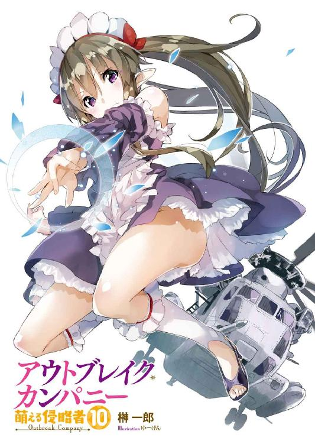
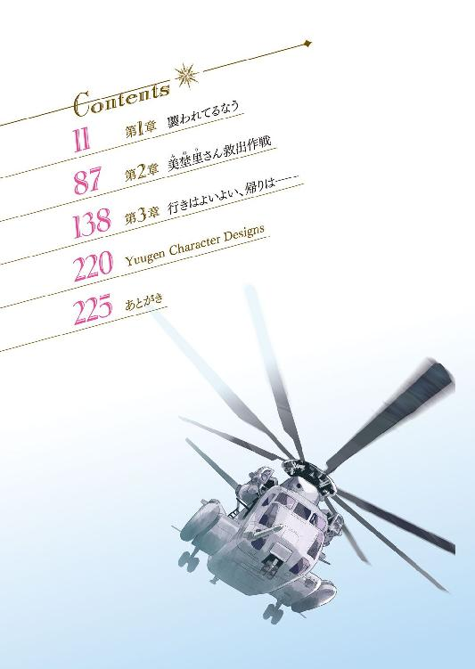
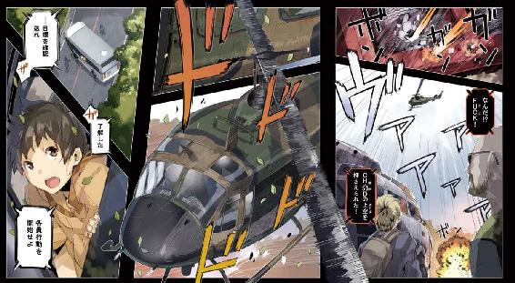
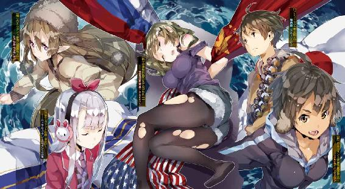
口絵・本文イラスト／ゆーげん
そこは薄暗い建物の中だった。
もう何ヵ月も──あるいは何年も拭かれていないのだろう。硝子が汚れきって向こうの風景すらろくに見えない窓から、ぼんやりと白い日光が滲んでいるのが見えた。
淡い闇の底には、ドラム缶や木材が幾つも無造作に転がっている。天井から吊るされたクレーンの鎖やフックは錆に覆われていて、非常灯らしき設備も光が点ることなく暗いまま。
それらすべてにうっすらと埃が積もっていることからも、ここがもう使われなくなってずいぶんになるのだと分かった。
不況で放棄された廃工場──そんなところか。
そんな中に彼女の姿はあった。
女性自衛官・古賀沼美埜里。
女性ながら格闘技術に秀でる優れた自衛官。
眼鏡を掛けているせいか、一見した印象は優しげで、普段の言動もどちらかといえばおっとりしたものだが......いざとなれば、父親仕込みの格闘技で、あるいは普段から携行している銃を抜いて戦うその姿は、非常に凜々しい。
もちろん、国家機密に絡んだ特殊作戦に起用されていることからも、彼女が機知にも富んだ優秀な兵士なのだと──ただ腕力だけが自慢の雑兵でないことが、分かる。
だが......今。
「......うッ......」
彼女はその身に備えた技量を発揮できない状態にあった。
具体的には、天井から吊り下げられた鎖に両手首を拘束されているのだ。
靴を脱がされたその足は、爪先がかろうじて床を擦る程度。なまじ空中高くにぶら下げられているよりも辛い──主に精神的に──高さだった。
普段お団子状態にまとめられている髪は、無造作に肩辺りに広がっている。その顔を横切る眼鏡のレンズには、はっきりと亀裂が入り......しかし、取り上げられることもなく、中途半端な状態で彼女の顔に引っかかっていた。
かなり乱暴な扱いをされたのか、服もひどく乱れていた。上半身は下着のみでふくよかな胸の谷間が露わになっているし、スカートは穿いているものの、そこから伸びる足のストッキングは、あちこち破れて肌が露出していた。
ある種の趣味の人間ならば喜びそうな──そんなありさまだ。
「くッ......」
小さく呻いて身をよじる。
なんとかこの縛めから逃れようとしているのだろう。
ある種の体術を修得した者達は、自らの関節を外して手錠や縄といった拘束具から抜け出ることができるという。彼女もまたそうした技術を身につけているのかもしれない。
しかし......
「──お目覚めかね」
扉が開いて数人の人影が入ってきた。
問う言葉こそ日本語だが、薄闇の中で近付くにつれて露わになるその顔は──日本人のものではなかった。
彫りの深い顔立ちの白人だ。
おそらくはロシア系。
神経質そうな目鼻立ちの一方で、顔の輪郭そのものは厳つく、広い額と相まって、どこか冷酷そうな印象を受ける。一見した限りでは笑顔が想像しにくい、そんな顔立ちだった。
額や目尻にうっすらと刻まれた皺から、それなりの年配なのだと分かる。
「......！」
美埜里さんが驚きの表情を浮かべた。
それも当然──その顔はたぶん、世界中でよく知られたものだったからだ。
「プー●ン......！」
ウラジーミル・ウラジーミロヴィチ・プー●ン。
何を隠そう、第四代目にして現職ロシア連邦大統領その人だった。
しかも──
「そんな!?」
美埜里さんが呻く。
彼女の前に立つ男達。
彼らは──あろうことか全員がプー●ンだった。
元ＫＧＢ職員であり、学生時代にはサンボや柔道の大会での優勝経験を持ち、五度にわたって試みられた暗殺計画からも生き延びた文字通り『最強』の大統領。いわゆる『おそロシア』の象徴。
一対一で相対しても絶望しか湧いてこないこの人物が──しかも複数。というか全員がプー●ン。さしもの美埜里さんもこれには怯まざるを得まい。
「では、そろそろお喋りの時間だ──ニッポンのお嬢さん」
プー●ン１（と仮にしておく）が美埜里さんに近付きながらそう言う。だが、彼女は苦しげな表情を浮かべつつもプー●ン１を一瞥し......そして唇を強く引き結んで顔を背けた。
喋ることなど何もない。
その意思表示なのだろう。
頑として口を開こうとしない美埜里さんを見て、しかしプー●ン１は口の端に笑みを浮かべた。
どうやら美埜里さんのこの反応は予想済みであったらしい。彼は背後のプー●ンズ（複数形）を振り返って言った。
「アレを連れてこい」
「了解した」
プー●ンズ（複数形）の一人が、頷くと──大型のコンテナが自走式の台車に載せられて美埜里さんの側に運ばれてくる。
次の瞬間......コンテナの側面が倒れて内包されていたものをさらけ出した。
「──！」
息を吞む美埜里さん。
コンテナの中には檻があった。大型の猛獣を閉じ込めるためのものなのだろう、太い鉄棒が何十本と並んでいる代物だ。
そしてその中には一頭の大型獣が入れられていた。
牙を剝き出しにして涎を垂らしながら、獰猛に瞳を光らせるライオン──ではなくて。
虎でも狼でも鰐でも蛇でもなく。
そこに入っているのはシロクマだった。
何故にシロクマ......？
ロシアだからだろうか。
「こいつは人間の味を知っている」
とんでもないことをプー●ン１は言い出した。
「手足はともかく、胴体を食われれば致命的だ。その前に吐くのが賢明だと忠告しておこう」
「............」
美埜里さんは無言。
彼女は──目を逸らすこともなく檻の中の白い猛獣を見つめている。
「......そうか」
プー●ン１が頷いた。
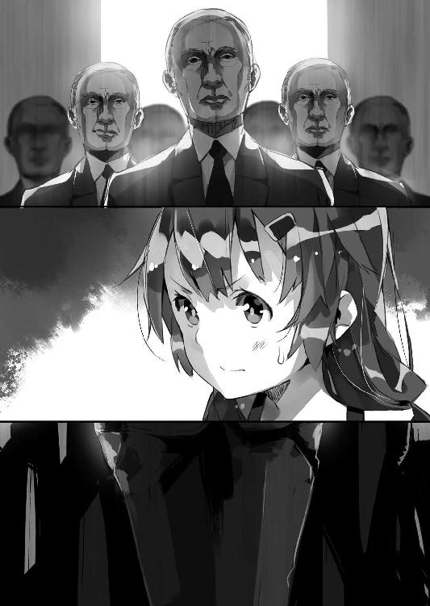
それと同時に、プー●ン２（だかなんだか、同じ顔しているのでよく分からないけれど仮に）が檻の扉を開ける。
太い前足が檻の中から出て床を踏みしめる。
体長は二メートル以上──いや三メートル近くあるだろうか。筋肉と剛毛に覆われた獣がゆっくりと、吊り下げられたまま逃げることもできない美埜里さんの方へと近付いていく。
そして──
「............」
美埜里さんは無言でそのシロクマを睨む。
眼鏡の奥の瞳は、炯々とした眼光を湛えて──
「──む？」
次の瞬間、驚くプー●ンズ（複数形）の目の前で、シロクマは回れ右をすると、どこから持ってきたのか──背中を丸め、しゃかしゃかと自転車をこいで逃げ去っていた。
ちょっと可愛い。
「............」
「............」
顔を見合わせるプーチ●ズ（複数形）。
「ボリ●ョイサーカスから借りてきたのはまずかったか......？」
「予算をけちるからだ」
さすがのプーチ●ズ（複数形）も、美埜里さんが眼光だけでシロクマをビビらせることができるなどとは想像もつかなかったらしい。ドラゴンを相手に蹴りをかます度胸の持ち主なのだから、当然と言えば当然──サーカスで飼い慣らされて人間に馴染んでいるシロクマでは、気迫負けしても不思議じゃない。というか『人間の味を知っている』とか、どこから出てきたハッタリなのか。
ともあれ──
「仕方ない」
プー●ン１が言った。
「奴らを呼んでこい」
「了解した」
プー●ンズ（複数形）の一人、プー●ン３が頷いてその場から立ち去る。
だが──ほどなくして彼は、戻ってきてプー●ン１に改めて頷いてみせた。
「見たまえ。お嬢さん」
顎をしゃくってプー●ン１が言った。
美埜里さんは顔を背けつつも──意味ありげな物言いに無視もできなかったらしい。横目でそちらを見遣る。
すると──
「──！」
美埜里さんが息を吞む。
入り口に二つの人影が立っていた。
二人とも男──だろう。逆光の状態であるために、その詳細は見えない。ただ輪郭だけが分かる。しかしそれだけで彼女にとっては充分であったらしい。
美埜里さんは──あろうことか、シロクマすら眼光で追い払った彼女が、小さく悲鳴を上げた。
「くっ......」
「君が意地を張るのは構わないが、さてその強情が彼らを前にしていつまで続くかな？ 私は脇で見守らせてもらおう」
揃って口の端に同じ笑みを浮かべながらプー●ンズ（複数形）が美埜里さんの側から離れていく。それと入れ替わるようにして美埜里さんの前に──新たにやってきた二人の男が立った。
こちらはプー●ンではなかった。
一人は金髪の若者。
一人は黒髪の中年。
共に地味な作業着を着ている。だが汚れがまったくないことからして、本職の作業員の衣装というわけでもないのだろう。
「君の弱点はもう調べがついている」
壁にもたれかかりながらプー●ン１が言った。
「見たまえ。そっくりだろう？」
「............」
美埜里さんは無言。
「遠慮は要らん。やれ」
「............」
金髪の若者と黒髪の中年は揃って作業着の襟元のジッパーを股間に向けて下げ始めた。
下には何も着けていないらしい。作業着の合わせ目から露わになるのは、彼らの素肌、よく鍛えられたと思しき胸筋であり腹筋で──
「............」
金髪の若者と黒髪の中年の顔には、表情こそないが、興奮を示すわずかな紅潮が見て取れる。
吊り下げられて身動き一つろくにできない若い半裸の娘を前に、彼らが、しかも二人がかりでいったい何をしようとしているのか──残酷なことだけど、想像はたやすい。
「............」
思わず顔を二人から背けようとした美埜里さんだが、しかしいつの間にか彼女の背後に回っていたプー●ン３（だろうたぶん。区別つかないけど）が腕を回して顎を摑み、無理矢理、男達の方へ顔を向けさせた。
「ああ......っ」
美埜里さんが震えた。
これから何が起こるのか──それを察して本能が、身体が、無意識に反応しているのだろう。
そして──
「............」
おもむろに金髪の若者が腕を伸ばし──腰を抱いてゆっくりとこれを引き寄せた。
黒髪の中年の腰を。
「ダメっ......！」
美埜里さんが喘ぐ。
「そんな......優しく壊れ物を扱うように触れるなんて......！」
美埜里さんの唇から熱い吐息が漏れる。
顔を背けたいのに、できない。彼女の顎はまだプー●ン２だか３だかの手でがっちりと固定されているからだ。ならば目を瞑れば良いはずだが──瞬きをするのも惜しいとばかりに、眼鏡の奥で彼女の両目は大きく見開かれたままだった。
金髪の若者と黒髪の中年は、身体を密着させたまま、しかしそこから動かない。互いの顔をじっと見つめているだけだ。
しかし......
「そんな熱っぽく見つめ合うなんて......」
焦れたような口調で言うのは美埜里さんである。
「憂いを秘めた瞳でいったい何を望んでいるの......！」
「早めに口を割ることを勧めておこう」
壁際で腕を組んだプー●ン１が言った。
「さもないと二人はもっと激化するぞ」
「ひ......卑怯よ......こんな......こんなっ......」
吊り下げられた身をよじりながら美埜里さんはそう訴える。だがもちろん、プー●ンズ（複数形）はそれで容赦など思い出すはずもなく。
むしろ──
「君が『キャット＆バニー』の同人誌を買っていることは調査済みだ。それもヤオイ系の実に激しいやつを」
そう言ってプーチ●ズ（複数形）が揃ってどこからか取り出したのは、確かに薄い本──もとい、女性向け18禁同人誌だった。
「......！」
「主人公とその相方の絡みが好きなようだね。もちろん、どちらが攻めでどちらが受けかも調査済みだよ。『逆転』が禁忌であることもね。さあ。これ以上のことをされたくなければ、君の知っていることを洗いざらい喋りたまえ」
「ひっ......卑怯者ぉ......！」
美埜里さんの声はすでに嗚咽に近い。
なんということでしょう。
ロシアの工作員達は自衛官・古賀沼美埜里の趣味嗜好を──彼女が腐っていることを徹底的に調べ上げ、今現在、彼女が最も『弱い』部分を的確に突いてきたのだ。
目の前でリアルに繰り広げられるＢＬの世界。
しかも彼女の好みとは逆──攻め受けをあえて反転させた状態で延々と絡みを見せつけようというのだ。腐女子にとってこんなにも辛いことはないだろう。
こんな拷問がこの世界にあるなんて。
いや。これは本当に拷問なのか。
むしろ御褒美なのではないか？
しかし腐女子にとって責め受けをひっくり返すのはサークル間抗争の原因にもなるとまで言われているし──
「鼻と鼻が触れ合いそうな距離なんて......っ、あ、ダメよそんなところに触れるなんて......あ、ああっ、らめえええ」
潤んだ瞳で頰を硬直させた美埜里さんは、掠れ気味の甘い声を上げる。声だけ聞いてると年齢制限が付きそうだった。
「さあ......」
プー●ン３が、老碩学に取引を持ちかける狡猾な悪魔の如く、そっと耳元で──甘いとさえ言える口調で美埜里さんに囁く。
「言うんだ、ミノリ・コガヌマ──」
「ああっ............」
切なげな声が廃墟に響く。
そして......
............
............
「......旦那様？」
──ミュセルの声に、僕はハッと我に返った。
「あっ......？」
顔を上げれば──居間のテーブルを挟んでミュセルやペトラルカ、エルビアといったお馴染みの面々が、心配そうな顔で僕を見つめている光景があった。
「大丈夫ですか？」
さらりと長い亜麻色の髪を揺らして、僕に触れながら、ミュセルがそう尋ねてくる。
ミュセル・フォアラン──言うなれば僕付きのメイドさん。
清楚可憐な彼女の顔は、今、色濃い不安に曇っていた。もともとあまり気の強い子ではないけれど──おずおずと僕の顔を覗き込むその仕草にも、瞬きを繰り返すその大きな薄紫の瞳にも、彼女の抱えている憂慮が見て取れる。
だけどそれは他の面々も同様で──
「さっきから何度も呼んでおるのに返事をせんではないか」
と顔をしかめて──やはり指先で僕に触れて──言うのはペトラルカだ。
ペトラルカ・アン・エルダント三世。
ぱっと見には可愛い──人形みたいに可愛い女の子というだけだけど、彼女は異世界にある帝政国家・神聖エルダント帝国の現皇帝だ。
本来はここにいるはずのない人間である。
自ら密入国してきたとはいえ──この異境・日本での不安というのならば、彼女がいちばん強いかもしれない。
「疲れてるんすか？ 気分でも悪いんすか？」
とさらに問うてくるのは──やっぱり手の先で僕に触れながら──エルビアだ。
エルビア・ハーナイマン。
異世界の半獣人で絵描きさん。本物のケモノミミとケモノシッポを備えたオタクの夢みたいな女の子である。
彼女もまたどこか落ち着かなげだった。もともとが明るく奔放な──脳天気とも言える性格の子で、三人の中ではいちばん落ち着いているようにも見えるけど、その尻尾が不安げにゆらゆらと左右に揺れているのに、僕は気付いていた。
「あ......ごめん、つい」
そんな気はみじんもなかったのだけれど、つい、うとうとと寝てしまっていたらしい。
昼間は怒濤の勢いでいろいろなことがあった。興奮していて意識していなかったけど、それなりに疲れが蓄積していたのかもしれない。もっとも、同じように行動していたミュセル達が起きているのだから、これは単に僕に体力がないことの証か。恥ずかしい。体力不足に関しては自宅警備員時代をまだ引きずっていると見える。
ともあれ......
「ちょっと、うとうとしてた......」
僕は見慣れた自宅の居間を見回しながら言った。
そう。ここは日本だ。異世界じゃない。
だけど異世界の住人であるミュセル達がいる。僕の脳裏に帰国以降に起きたもろもろの出来事が、次々と浮かび上がってきた。
家族と再会したこと。
ミュセル達を交えた皆で焼き肉を食べたこと。
秋葉原へ繰り出したこと。
そして──中国（？）の工作員に籠絡されかかったり、在日アメリカ軍に拉致されかかったり、美埜里さんがロシア（？）の工作員に拉致されたり。
美埜里さん......
「あ、す、すみません」
僕が黙って顔をしかめていると、ミュセルが慌てて頭を下げてきた。
「お休みのところを起こしてしまって──」
「いやいやいやいや」
僕も慌てて首を振る。
どうやら僕が怒っているんだと勘違いしたらしい。
「寝てる場合じゃないでしょ。起こしてくれて助かったよ。悪夢見てたし」
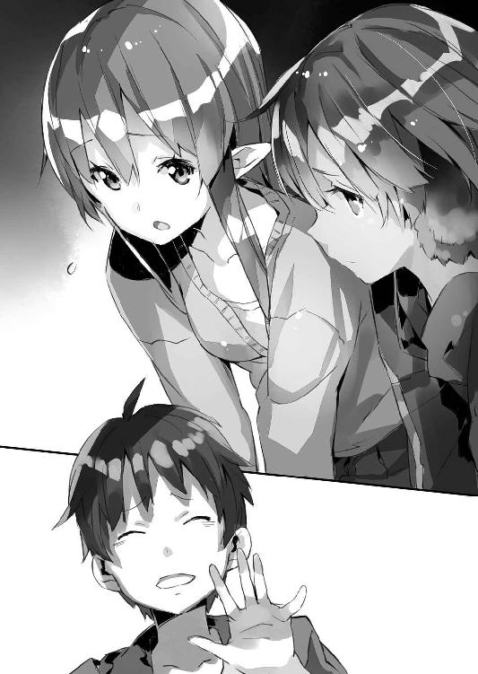
「悪夢っすか？」
首を傾げて興味深そうに問うてくるエルビア。
「どんな？」
「どんなって──」
耳の奥に美埜里さんの色っぽい喘ぎ声がこびりついているような気がして、僕は思わず両膝を閉じる。
「......？」
「とにかく寝てる場合じゃないんだ。ごめん」
変な夢を見ている場合でもない。
「改めてこれからのことを考えよう」
僕は皆を見回してそう言った。
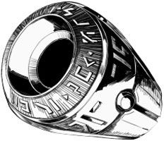
僕の名前は加納慎一。
もともとは──アニメや漫画、ラノベが大好きな、どこにでもいるただのオタクだ。
僕が少し他のオタクと違う点があるとすれば、それは僕自身に属することではなくて、置かれている環境だ。
僕は日本に住んでいない。
いや、それどころかこの世界に住んでいない。
僕が住んでいるのは、日本とは地続きだけれども、まったく違う世界──正確には超空間通路と呼ばれる『穴』で繫がった異世界だ。
いろいろあって、僕はその異世界の国・神聖エルダント帝国における初の総合エンタメ商社〈アミュテック〉の総支配人となった。魔法だの竜だの精霊だのが現実のものとして存在するこのファンタジー全開の世界において、僕は日本のオタク文化を広めるという仕事をしている。
最初こそ戸惑った──そりゃもう激しく──僕だけれど、メイドであり僕の世話係であるミュセル、エルダント帝国の皇帝陛下であるペトラルカ、護衛である自衛官の美埜里さん、自称・放浪画家のエルビア等々......その他たくさんの人に囲まれて、それなりに充実した生活を送っていた。
しかし──ある日。
僕はラノベ作家である父が、病気で入院したことを知った。特にホームシックに罹ることもなく、エルダントでの生活を満喫していた僕だけど、さすがに家族の一大事となると、無関心ではいられなかった。
そういうわけで僕は日本政府に対して一時帰国の申請をし──これは受理された。
しかし僕の場合、ただ、里帰りするというわけにはいかないのが、ややこしい。
僕は──オタク文化を広めるにあたり、その方針で日本政府と対立し、過去に一度、自衛隊の特殊部隊に襲われたことがある。
その後、政権が替わったり、エルダント帝国側の擁護もあって、すぐさま暗殺されたり拉致されたりするようなことはなくなったけれど、日本政府が僕を『扱いの面倒な奴』と思っているのは間違いない。
端的に言って、僕は日本政府を信用していない。
だから僕は美埜里さんだけでなく、ミュセルとエルビアを護衛役としてエルダントから連れて帰国することにした。
帰国そのものは特に問題なかった。
勝手にペトラルカが荷物の中に隠れて密入国してくる、なんて予想外のことはあったけれど......おおむね問題なく僕は実家にまで帰ってきた。
心配していた父の容体も特に悪くはなく──というかむしろ元気で、心配するようなことはなかった。おかげで僕は、父と母、それに生意気な妹とも再会し......国家機密が絡むので真実をすべて話すことはできなかったけど、おおむね、僕の置かれている状況を家族に説明することができた。どうやらそれまで僕は置き手紙一つで失踪したことになっていたらしく、妹は『自分のせいではないか』とずいぶん、気にしていたらしい。
ともあれ──早々に帰国の目的を果たした僕は、余暇を利用してミュセル達を秋葉原に連れていく、なんてこともできた。僕や美埜里さんは久々の秋葉原、ミュセル達は初めての秋葉原ということで、ものすごく楽しむことができた。
......しかし。
脳天気に秋葉原観光を楽しんでいた僕らは、背後から近付いてきている影に気付いていなかったのだ。
最初は中国（だろうたぶん）の工作員だった。
メイド喫茶の店員に化けた工作員は僕らをなんとか捕らえようとしたものの、失敗して逃走。
続いて襲ってきたのはロシアの工作員（らしい）。そしてあろうことか彼らに、僕らの護衛役であるはずの美埜里さんが連れ去られてしまった。
一方──美埜里さん以外は味方を装って近付いてきた在日アメリカ軍に拉致されそうになった。
どうやら僕達の存在について世界各国が注目しているらしいのだ。『日本政府が抱える最重要機密』を知る民間人として。
魔法やらエルビアの常識外れの運動能力やら、通りすがりのオタクの痛車やら──使えるものはなんでも使って僕達はとりあえず加納家まで帰り着くことはできたのだけれど、美埜里さんは誘拐されたまま。
どうしたものかと僕達は途方に暮れた。
彼女の上司である的場さんは、『古賀沼君のことは日本政府に任せて君達はエルダントへ帰りなさい』と言い出す始末で──正直言って、あんまり、当てにも頼りにもならないっぽい。
そして......
加納家の居間。
「......ミノリ様は......大丈夫でしょうか......」
そこで僕達はソファに座りテーブルを挟んで顔を見合わせていた。さらに言えば全員がテーブルの上に片手を伸ばして、互いにこれを重ねている。
一見すると何やらスポーツの試合前の気合を入れている風景か、さもなくば怪しげな儀式に見えるかもしれないが──これには理由がある。
魔章指輪だ。
もともと異世界の住人であるミュセル、ペトラルカ、エルビアとは、この魔法の道具を使って意思疎通するのがいちばん手っ取り早い。ミュセルやペトラルカはそれなりに日本語を扱えるけど、やっぱり複雑な内容の話になってくると、この翻訳機能を持つ魔法具に頼らねば、やたら時間を喰ってしまう。
しかし基本的に、空気中に魔力が存在しないこちらの世界では、魔法具は使えない。
正確には人体から発せられる魔力で魔章指輪そのものは機能するけれど、これを媒介し伝播させるものがないので、離れていると結局、互いに喋っている言葉が翻訳されて伝わらないのだ。
密室の場合、とりあえず精霊瓶を使って魔力を満たせば、異世界にいるのと同様に魔章指輪は機能する。しかし、エルダントから持ち込んだ精霊瓶は数に限りがあるため、できるだけ温存したい。
そういうわけで──僕達は互いに手を触れ合わせて、一種の接触通信をしているのだ。
これならば精霊瓶を使わずとも、魔章指輪の翻訳機能を使うことができる。
「何かひどい目に遭わされたり......」
何かその『ひどい目』を想像したのか、ミュセルは辛そうに目を伏せる。
彼女は普段、癒やし系というか、とても優しい雰囲気を持っていて、笑顔の似合う天使......なんだけども。今は状況が状況のせいで、どんよりと重く暗い空気が彼女の頭上にのしかかっているかのような印象だった。
さきほど、僕を元気付けに来てくれたときの彼女がどれだけ無理をしていたかが、よく分かる。
本当、健気なんだよな、この子──
「大丈夫──じゃと信じたいが」
不安げなミュセルに応えるのはペトラルカである。
こちらは厳しい表情というか、状況に対する打開策が浮かばずに渋い顔──といった感じだ。もともとがとても綺麗な子なので、しかめ面でもやっぱり可愛いのだけれど。
「だ、大丈夫っすよね!?」
なんとかこの空気を払いのけようと考えているのか、慌てたような様子で声を上げるのはエルビアである。彼女は僕の方を見ながら──どこか縋るような目で──言った。
「だってニッポンセイフが、ミノリ様を助けてくれるんすから！ ね？」
「............」
「シンイチ様!?」
まるで飼い主に棄てられた子犬みたいな目で、僕を見つめるエルビア。
だけど僕としても無責任に『うん、大丈夫だよ！』などと太鼓判は押せなかった。
彼女らを安心させてあげたいのは山々だ──けれど、そもそも僕は日本政府というものをいまひとつ信用していないからこそ、ミュセルやエルビアを護衛に連れてきたのだ。
前述の通り、日本政府は僕の存在を煙たがっている。
一定の成果は挙げているけど、素直に日本政府の方針には従わない僕を排除しようと、特殊部隊が派遣されてきたこともあったし、僕を誘拐しようとした隣国バハイラムの動きに対して見て見ぬふりをしたり、〈アミュテック〉の総支配人という立場から引きずり下ろそうと、勝手に交代要員を──名目は僕の補佐役だけど──送ってきたこともあった。
もちろん、日本政府が疎んじているのは僕であって、美埜里さんではない。
けれども美埜里さんは僕の護衛という立場上、僕側に寄った発言や行動も目立つ。日本政府が積極的に彼女を救出してくれるかというと──ちょっと怪しいのではないかと思ってしまうのだ。
まして......
国家というものは都合が悪くなれば容赦なく一個人を見捨てる。そういう事例は枚挙に暇がないというか、創作物でも歴史的記録でも何度となく僕はそういう場面を見てきた。
そもそも美埜里さんは特殊な立場の自衛官だ。
アメリカの工作員の話が本当なら──彼女は公式書類上は死亡していて、この世にはすでに存在しないことになっている。機密任務に従事するには、その方が何かと都合が良いからだろうけど......それはつまり、日本政府は、彼女を見捨ててもなんら痛痒を感じないということになる。最初から『死んでいる』のだから。
一縷の希望があるとすれば、美埜里さんが機密を知る立場にあるという事実だ。
彼女が喋ってしまえば、日本政府がひた隠しにしている異世界のことがばれる。
美埜里さんから機密が漏れないように、日本政府は彼女を助けるべく人を送り込む、ということはあり得る話だ。
しかし......
（機密保持っていうなら、単に殺しちゃうだけの方が手っ取り早いんだよな）
ふと僕は──日本へ入国する際に受けた『検疫』のことを思い出す。
僕もミュセル達も、そして美埜里さんも、血液検査という名目で血を採られた、というか注射針を刺されたりもしたわけだけど。
あの際に、もし遅効性の毒物とか、発病までに時間のかかる病原菌を体内に入れられていたとしたら？
それは時限爆弾のように、一定の時間が経過すると致命的な威力を発揮する。これを防ぐには定期的な解毒剤なり、ワクチンなりの投与が必要とか。機密保持のためにそういう毒物なり病原菌なりを使うというのは、理屈としてはあり得る。たとえ今回のことがなくとも、万が一にも僕達が勝手に逃げ出して日本政府の管理下から脱した場合、放っておけば勝手に死んでくれるわけで──機密保持のための『保険』として日本政府がそういうことをしている可能性は、考えられる。
「シンイチ様ぁ......」
エルビアが見るからに不安げな表情で僕の名を呼ぶ。
まずい。僕が答えないから──というか、考えが物騒な方に行ってしまったのが、表情からばれたか。鼻の良い彼女のことだから、体臭とかにも何か変化が出ちゃったのかも。
ともあれ──
「ああ、ごめん」
僕はそう言って、改めて皆を見回した。
「何がどうあれ......僕は美埜里さんのことを放置してエルダントに帰るのには、抵抗があるんだよ」
「そんなことはいまさら言わなくとも分かっとる」
と眉をひそめてペトラルカが言う。
「シンイチは妙なところで阿呆じゃからな」
「ちょ......ペトラルカ？」
「拐かされたのがミュセルやエルビアであっても、『しょうがないね』などと抜かしてエルダントに帰ったりはすまい」
呆れの混じった口調でペトラルカが言った。
「............」
僕は言葉に詰まる。
なんと言うか......その......信じてくれてるんだなあ。
ちょっと嬉しい僕なのだった。
しかし──
「で──具体的に何をどうするかじゃ」
「そのことなんだけどね」
僕は銀髪の可愛い皇帝陛下をまっすぐに見て言った。
「まずペトラルカ。せめて君だけは先にエルダントに帰った方がいい」
「なんじゃと？」
とたん──ペトラルカが不服そうに眉根を寄せる。
あ。やっぱり怒ったか。でも......
「いろいろな国が僕らを狙ってる。で、こういう言い方はしたくないけど、誘拐していちばん有利というか、重要人物に順位をつけるとすると、いちばん問題になるのは皇帝陛下であるペトラルカなんだよ」
「それは......」
もちろん、ペトラルカ自身も重々承知だろう。
「僕やミュセル、エルビアは、まあ、捕まっても──まだ、影響は少ないよ。けれどもしペトラルカが捕まったとしたら、どうなる？」
僕はあくまで日本の一般市民。
ミュセルやエルビアも、異世界人ではあるけど一般市民。
しかしペトラルカは違う。全然違う。
国家元首なのだ。絶対君主なのだ。
しかもそうした『頂点』に立つ者に対する認識が、中世的世界観の異世界と、民主主義だの個人主義だのが広く一般化しているこちらの世界とでは、まるで違う。
おそらく皇帝陛下のために命を投げ出すのも厭わない人間が、エルダントには万単位でいる。いや、ひょっとしたら何十万か。
もし神聖エルダント帝国の皇帝陛下が、どこかの国に拉致されるようなことがあったら──神聖エルダント帝国側がどう反応するか。下手をすれば......いや、間違いなく、異世界側とこちら側との戦争になる。
「美埜里さんのことは僕達に任せて、ペトラルカは......」
「嫌じゃ」
ぷいっと横を向いてペトラルカは言った。
こういうところだけは年齢相応の女の子──どころか、容姿相応のお子様っぷりだ。
「ペトラルカ......」
「嫌じゃ嫌じゃ嫌じゃ！」
駄々をこねる子供のように、ペトラルカはぶんぶん勢いよく首を左右に振った。
「こんな状態で妾だけ帰れるわけがなかろう！」
「でもさ──」
「帰るのであればシンイチ、汝も一緒じゃ。もちろんミュセルやエルビア、ミノリもじゃ！ それ以外の選択肢はない！ それに......」
ふと目を伏せてペトラルカは言った。
「ミノリだけが帰らぬなどと、ガリウスに言えるはずもなかろう......」
「......え」
僕は思わず声を漏らしていた。
なんでそこで騎士ガリウスの名前が出てくるの？
ガリウス・エン・コルドバル卿。
ペトラルカの従兄で、神聖エルダント帝国の重臣である。騎士団長も務めていて、あの国の軍事面はほとんど彼が握っていると言っても過言ではない。
その騎士ガリウスが、美埜里さんを特別な存在として見ている？
え？ 何？ あの二人、いつの間にか、そーゆー仲になってたの？ ひょっとして僕が知らなかっただけ？ 確かによく本を借りていたみたいだけど──
「ヤオイ仲間としてたいそう、意気投合していたというのに」
「......そっちかよ」
と思わず呻く僕。
騎士ガリウスはまあ、その、そっち系というか、男だけど男が好き、な人なので腐女子の美埜里さんとは何かと話が合ったらしい。僕はてっきりそこから、別方向に転がって......とか思ったんだけど、違うみたい。
「ミノリとヤオイ談義をしているとき──あんなに嬉しそうな表情のガリウスは、妾もここ何年も見たことがなかった」
「......左様ですか」
要するに同志とか同好の士とかそういう系統の話らしい。
まあ、ややこしくなりそうなのでその辺の話はさておき。
「だから妾は、妾だけでは帰れぬ」
ペトラルカは、とても慎ましいその胸（政治的に配慮した表現）を、自ら作った拳で叩いてみせた。
「ミノリを助けに行く。臣民を護るのも皇帝の義務ゆえ、な」
ああ。もう彼女にとっては美埜里さんも、自分の国民と同じなのか。
さきほどのことといい、僕はちょっと嬉しくなった。
本当に、この可愛い皇帝陛下は、一分の疑いもなく、僕達のことを『仲間』と認めてくれているのだ。かつては異世界を侵略するための尖兵だった──僕らを。
「でも相手はこっちの──軍隊みたいな連中だよ」
破壊工作員だの諜報員だのという概念がエルダントにあるかどうか分からなかったので、僕はそうぼかした表現をした。まあ、銃器を使っている、一般の法律に従わない、国家の後ろ盾がある、って意味ではそう遠い表現でもないだろう。
「助け出すって言っても──」
「魔法を使えば良いじゃろう。ウェアウルフの力もある」
「はい」
「任せてくださいっす！」
ペトラルカの視線を受けて、ミュセルが頷き、エルビアが片手を挙げる。
確かにミュセルは──そして僕も幾つかの魔法は使えるし、まだ少し精霊瓶と魔法石には余裕がある。開けた場所で飛び道具としての攻撃魔法を使うのは難しいだろうけど、救出作戦となると、使うのは屋内が多いだろうし。
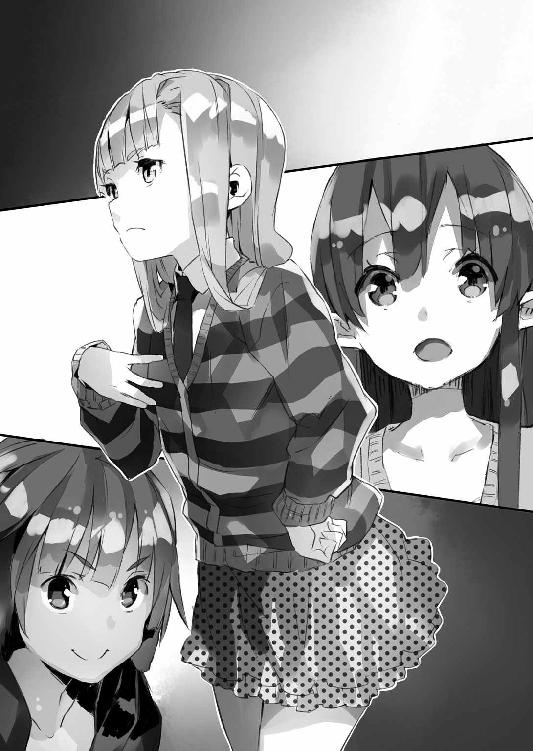
もちろん、エルビアの身体能力も大いに頼りになる。銃を持ち出されれば難しいけど、素手での格闘なら、エルビアに分があるはずだった。そしてさきほどの魔法の話と同様──中距離や遠距離の銃撃戦がそうそう起こるとも思えない。
確かに、不確かだけど、一応の戦力はある。
ただ......
「でも、場所がね......」
戦力だけがあっても駄目なのだ。
僕達は今現在、美埜里さんがどこに連れ去られたのか分からない。分かっているのはロシアの工作員に秋葉原のゴタゴタで連れ去られてしまったらしい、ということだけで、実はこれすらアメリカの工作員から聞かされた話で、信憑性には不安がある。
「どこにいるのか......」
「むう」
さすがにそこは考えていなかったのか、ペトラルカが唸った。
「探すしかないんじゃろうが──ニッポンに不慣れな我々では心許ないな」
「日本人の僕だって、なんの手掛かりもなしじゃ途方に暮れちゃうよ。ちなみにこういう場合、エルダントだったらどういうふうに探すの？」
「基本的には魔法じゃな」
首を傾げながらペトラルカが言う。
「しかし──」
「こちらの世界で魔法を使うには、精霊瓶や魔法石を使うしかありません。しかしそれだと範囲も狭いため、ミノリ様を探すのは不可能に近いかと......」
言い淀むペトラルカの後を継いで説明してくれるのはミュセルだ。
「そうなんだよな......」
美埜里さんを探すことのできる魔法があったとしても、この日本では役に立たない。魔法を媒介するための、空気中の魔力がないため、こちら側では魔法の効果範囲は著しく狭くなる。広域で特定人物を探し出すなど、最も無理な魔法だろう。
せめて大まかにでも、区域なり建物なりを限定できれば良いんだろうけど。
「匂いを辿る──のも無理かな」
僕はエルビアの方を振り返って問う。
しかし彼女は申し訳なさそうに首を振った。
「ミノリ様の匂いは覚えてるすけど、さすがに......」
「車で移動しちゃったしね......」
いまさら、秋葉原に戻っても、あれだけ人も物も溢れている場所なら、とっくに美埜里さんの匂いは他の匂いに紛れて、区別がつかなくなっているだろう。
「うーん......」
あっさり手詰まりになった現状を前に、僕達はそれぞれ唸る。
そのとき──
「あのっ、シンイチ様」
差し出がましいようですが、と一言置いて言ったのはミュセルだ。
「アレはどうでしょう？」
「アレ？」
「以前、読ませていただいた漫画に出ていました。こちらの世界で、人の位置を知るための仕掛け──えっと、三文字の、漢字ともカタカナともひらがなとも違う文字で」
とミュセルは触れていない方の手で空中に文字を描いて見せる。
「じー......ぴぃー......ああ、ＧＰＳのこと？」
「それです！」
表情を輝かせてミュセルは言った。
「漫画では相手の位置を調べることができると書いてあったように思うのですが......」
「そんな便利なものがあるのか!? 何故それを早く言わんのだ！」
「す、すみません」
ペトラルカに怒られて、ミュセルが身体を縮こまらせる。
「あー......いや」
ペトラルカは気まずそうに頰を搔いて、ミュセルから目を逸らした。
「思い出したことは褒めてつかわす」
「あ、はい、ありがとうございます」
「とにかくシンイチ、そのずぃーぴーえすとやらを使って......」
「いや、それが申し訳ないけど、無理なんだよ」
一転して表情を明るくするペトラルカに──しかし僕は首を横に振った。
「もちろん、僕だって一瞬それは考えたんだよ。でも携帯のＧＰＳが分かるならとっくに日本政府が調べてるだろうし、何より僕達で思いつくことだよ？ 美埜里さんを捕まえた時点で、工作員達が携帯を壊すくらいしてるだろうね」
「......？」
いまひとつよく分からなかったみたいで、ミュセル達が顔を見合わせる。
「ああ、つまりね。ＧＰＳっていうのは、そうだな、この魔章指輪みたいなもんでね。専用の道具を身につけてないと、その人の位置は分からないんだよ」
いろいろはしょりすぎの説明だが、今は、人工衛星により位置測定だの、基地局との通信による位置補正だの、そういう科学技術の話をしている余裕はない。
「そもそも、ＧＰＳで誰かの位置を調べるなんて、普通の人にはできな──」
と言いかけて。
「──いやまあ、うちの母は前にＧＰＳの記録から僕の行動を追跡したこともあるけどさ」
僕の母親は元エロゲンガー......つまり18禁美少女ゲームの絵師だったわけだけども。そもそもの専攻というか学生時代に学んだのは、プログラムやら何やらの方だったらしく、人手不足のゲーム会社では、プログラマーを兼ねていた。
で......実はちょっとしたハッキングもできるのだ。
もちろん、漫画や何かに出てくる『スーパーハカー』みたいにどっかの軍事施設の回線にまで侵入して大陸間弾道弾を撃っちゃうような真似は無理だけども。というか、そもそも核ミサイルとかがネットに繫がってるとも思えないんだけど、それはさておき。
「シンイチの母上はそのずぃーぴーえすとやらを使えるのか？」
「できないことはないんだけど、やっぱり、美埜里さんがその道具を身につけてないと、駄目なんだよ。探せるのは道具の位置であって、美埜里さん本人の位置じゃない」
「むう......」
結局──話は振り出しに戻ってしまった。
どうしたものかと、四人で顔をつき合わせたまま唸っていると──
──♪
僕のポケットでスマートフォンの着信音が鳴った。
劇場版『レンタル☆まどか』のＯＰ曲。メールやらTwitterやらの着信ではなく、電話がかかってきたことを知らせるものだ。
慌てて僕が画面を見ると、そこには『的場さん』の文字が表示されていた。
「的場さんからだ」
皆にそう言って──スマートフォンを通話状態にし、耳に当てた。
もしかして美埜里さんの新しい情報が何か分かったんだろうか。ミュセルやペトラルカ、エルビアも当然にそれを期待したのか、固唾を吞んで電話し始めた僕を見つめてくる。
しかし──
『慎一君、今は家の中かい!?』
スマートフォンから聞こえてきた的場さんの声は......ひどく焦っていた。
彼がこんなふうに喋るのも珍しい。というか、彼のこんな慌て気味の声を聞くのは初めてじゃないだろうか。
「え？ そ、そうですけど......」
いったい何があった？
『そうか。......慎一君、落ち着いて聞いてくれ』
「......はい」
思わず背筋を伸ばして応じる僕。
いまひとつ信用しがたい的場さんだけど、この状況で僕達を引っかけて何か罠に塡めようと考えているとも思えなかった。となると──
『君達の家の周辺を巡回警護していた、公安関係者からの定期連絡が途絶えた』
「へっ？ それって──」
『何者かが警備の者達を実力で排除して、君の家に近付いている可能性が高い。警戒してくれ』
「............ちょっ......」
なんですかそれ!?
警戒しろってどうやって!?
と──問う前に、的場さんからの電話は切れた。
「............」
耳から離したスマートフォンの画面を見るも──『通話終了』の文字が表示されているだけだ。
「シンイチ？」
「旦那様？」
僕の表情がよほどに焦ったものだったのか、不安げにペトラルカとミュセルが声を掛けてくる。見ればエルビアも身を乗り出して僕の方を見つめて──僕からの言葉を待っている。
僕は......
「どうしよう......」
しかし途方に暮れた声でそう言うしかなかった。
深夜──時刻にして午前三時過ぎ。
普通の生活をしているならば、まず就寝している時間。
街灯の光が届かない闇を伝うようにして、加納家に近付いてくる人影があった。
一人ではない。全部で八人。
全員が男だった。
顔はアジア系──日本人に見えないこともないけれど、当の日本人の目から見ればどこか『違う』ようにも見える。国という『囲い』の中で連綿と受け継がれてきた何か。その結果、遺伝子上に生じた、微かな外見上の独自性。たぶん......中国人だろう。
警邏の警察官に見咎められても良いようにか......格好は皆、平凡なものだった。安売り店で季節を問わず常時並んでいるような、なんの変哲もない上着にシャツにズボン。上着は、ジャンパーだとかパーカーだとかジャケットだとかコートだとか、さまざまで、季節感も統一性も皆無だけれど、暗色のものが多いのは、やはり夜の闇に紛れやすいようにという考えからだろうか。
そして、もう一つの共通点。
それは彼らが揃って右手をポケットに突っ込んでいることだった。
まるで隠し持った何かをその中で握っていて、いつでも抜き出して使えるように備えているかの如く。
「............」
彼らはそれぞれ別の方向から近付いてくると、加納家の側でいったん、足を止めた。
周囲にすでに人の姿がないのを確認──彼らは揃ってポケットから手を抜いた。
薄い手袋をしたその手が握っているのは、スタンガン、そして──
「おお。すごいすごい。64式微声手鎗じゃないか」
などと、男達の中の二人が手に持っている拳銃を見て、無邪気に喜んでいるのは、僕の父──ラノベ作家の加納省吾だった。
「まだ使ってるんだな」
「何それ？」
僕は父の方を振り返って尋ねる。
ガンマニアの父は、こういう特殊な方面の知識は妙に潤沢なのである。
「特殊作戦用の消音拳銃だよ。最初から銃声抑制器──銃声を抑え込むための機構が設計段階で組み込んであるのが特徴でな。ベトナム戦争当時の代物だし、新型の67式があるから、もう使ってないのかと思ってたが。日本みたいな平和ボケした国相手の装備はやっぱり更新されてないのかねえ」
「そうですか」
心底どうでもいいので僕は白けた口調でそう返す。
同時に僕の脳裏には秋葉原で僕達を襲った中国人（だろうたぶん）の女性二人組の姿が過った。今、この男達がやってきているのは、彼女らが失敗したから、上司なり本国なりが、より確実で、暴力的な手段をとるべきと判断したためだろう。
とてもとても迷惑な話である。
「小口径の亜音速弾だからな。比較的、威力は低いぞ。たぶん」
「それを喜べとでも？」
僕は溜め息をつきながら改めてパソコンの画面を見た。
27インチの液晶ディスプレイには、大きく幾つもの『窓』が開いていて、そこにくだんの男達の姿がくっきりと、しかも多角的に映し出されているのだ。
ちなみにここは母の部屋で──パソコンも母のものだ。
個人部屋としては六畳あまりで決して狭くはないのだけれど、僕にミュセルにペトラルカにエルビア、さらに父と母と妹の紫月までいるので、狭苦しい印象が拭えない。暖房をつけているわけでもないのに、無意味に室温が上がっているような印象だった。
「この方達が旦那様を狙って......？」
と声をひそめてミュセルが言う。
さらに首を傾げて──こちらも声をひそめて言いながら──エルビアが画面の一部を指差した。
「この手に持ってるものはなんなんすか？」
「こっちは拳銃だね。美埜里さんが持ってる武器と同じようなやつ。他の連中が持ってるのは、たぶん、スタンガン──かな」
「すかたん？」
「スタンガン。強い電気ショックで──ええと、小さな稲妻を発して、相手を気絶させる道具だよ」
「雷撃の魔法具ですか？」
「まあだいたいそんなもんだと思っててくれれば」
ミュセルにそう頷いてから僕は──半眼で、さきほどからパソコンを黙々と操作している母、加納咲子の方を見遣った。
「それよりお母様」
「......何？」
母は何やら両手で忙しげにキーボードを打っていて、こちらを振り返りもしない。いったい何をやっているんだか......
「なんでこんなもんがあるんだよ？」
もちろん『こんなもの』とは、パソコンの画面に今もリアルタイムで映像を送り続けている光学機器──つまりは監視用カメラのことである。
「もちろん、買ったからよ」
「消費税の増税前にな」
と微妙に生活臭漂うことを言う父。
「いやだからなんで一般家庭にこんなものがついてんだよ!?」
一基ならともかく、この数は明らかにおかしい。少なくとも画面を見る限りは家の周囲をぐるりと死角なく映し出せるように、最低でも八基は設置されているみたいだった。
「いやあ、最近物騒だからなあ」
「時々あるのよ」
やはりキーボードを打ちながら母は言った。
「お父さんの過激な読者とかが家まで押しかけてきて、警察沙汰になることとか。慎一も覚えてるでしょ」
「あー......」
まあそういうのは三、四年に一度、あったような気がするけど。
「年頃の娘もいるしなあ」
そう言って、「ねっ」なんて顔を見合わせる父と母。
「............」
でもって当の妹は──明らかにこの過剰防衛とも言うべき設備を面白く思っていないみたいだけど、自分のためだと言われると、言い返せない、といった様子だった。不機嫌そうな顔で黙り込んでいる。
まあ、昨今は路上に防犯カメラ設置するのも珍しくないみたいだし、カメラの値段は解像度やら何やらの発達と反比例するみたいに下がってるらしいから──一般庶民の家にこういうのが設置されてるのも、驚くほどのことではないのかもしれないけど。
「だからちょっとお父さんとお母さん頑張ってみました」
「カメラが見つかりにくいように、壁の中に埋め込んだり、いろいろ偽装したりね」
「それは頑張るっていうより、明らかに趣味だろ」
ドヤ顔で胸を張る両親に、僕は間髪入れずツッコミを入れる。
防犯を意識するなら、むしろカメラは『ここにカメラがありますよ』と言わんばかりに堂々と設置しておいた方が良いわけで。わざわざ隠している時点で、それはもう盗撮の領域に近い。
そもそも僕が気付かなかったくらいだから、かなり巧妙に隠してあるのだろう。
二人の変なところに凝りまくる性格を考えると、共にノリノリでやったであろうことは想像に難くない。そうじゃなければこんなに解像度の高い高感度カメラを、本職の工作員達が気付かないような場所に仕掛けられるはずがない。まあ工作員達も一般家庭にこんなものが仕掛けられているなんて想像もしていないのだろうけれど。
何しろ夜だというのに、手にした拳銃の種類を一瞥で判断できるほどの解像度なのだ。下手すれば赤外線暗視装置とかも併用しているかもしれない。
「どうせあれこれ見ているうちに、いろいろ試したくなったんだろ」
「最近は旧世代の軍用暗視装置の放出品も、市場に出回ってるしな」
「うちの親以外に誰が買うんだか......」
妙に得意げなうちの両親から、僕はまた液晶画面の中の工作員に視線を向ける。
しかし......父の小説の、何かを勘違いした読者はともかく、まさか僕の家に中国（だろうたぶん）の工作員がやってくるなんて、予想もしなかった。
さすがの両親もこれは同じみたいで......
「こんな展開、ラノベみたいだな、母さん」
「事実は小説よりも奇なりってやつね」
「録画してあるよな？ ネタに使えるかもしれないから」
「ＨＤ画質でバッチリ」
けっこう緊迫した状況であるはずなのに、父と母の会話にはどうにも緊張感がなくて、僕は身体から力が抜けるのを感じる。いまひとつ、この人達が事態の重大性を理解していないのか、それとも単に二人とも僕が思っていた以上に肝が据わっているのか。
まあ結果として僕は非常に助かったわけだけど──
「あの......さ」
紫月だけは、さすがにこの状況についていけていないようだった。
彼女の口調には怯えというよりも困惑の響きが強い。
まあ当然だろう。いきなり家に中国の破壊工作班が襲ってきます、とか言われても一介の女子高生には現実味ないよなあ。
「何がなんだかよく分からないんだけど。この人達何？ あの拳銃、本物なの？」
「えーと......」
僕はとりあえず頭の中で適当に言い訳を組み立てた。
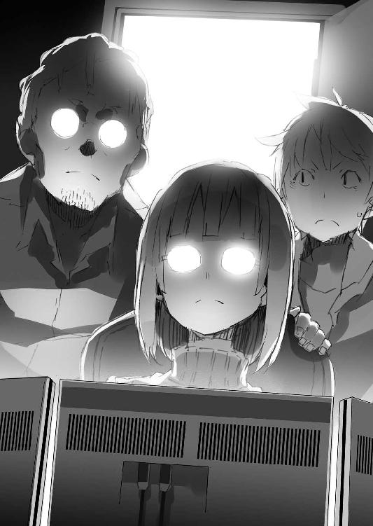
「ペトラルカが某国のお姫様だって話はしたよな？」
「......うん」
「オシノビで来てる彼女を拉致しようと、まあ、その、パンダの国の人がやってきてるわけでね。どうしてそんなことをあの連中が考えてるかは、その、いろいろ国際情勢がね」
「............」
半眼で紫月は僕を睨む。
彼女にとって僕は結局、『オタクでヒキコモリな駄目兄貴』なので、そういうややこしくて規模の大きな話の渦中に僕がいる、ということがイマイチ信じられないらしい。
まあこれも当然の話だけど──
「ミュセル」
僕は傍らの彼女の肩に手を置いて言った。
「はい」
「いざとなったら紫月やペトラルカのこと、お願い」
この中では彼女らだけが戦う力がない。
いやまあ父もないはずだけど。まさかこの間言っていた通信講座の空手だかなんだかが本物の暴力屋さん達に通用するとは思えないけど、優先順位でいうならば、やはり女子供が先だろう。
ミュセルの風の魔法なら、銃弾を逸らしたり、相手を叩きのめしたりすることもできるはずだ。
「はい......！ あ、でも旦那様」
いったんは両手で握り拳を作って決然と頷いたミュセルだけれど......ふとその顔に躊躇するような表情が浮かんだ。
「旦那様は──」
「僕はとりあえずミュセルに教えてもらった、アレが使えるしね」
更に声をひそめて僕は言った。
さすがに両親や紫月の聞いている前で魔法の話をするわけにもいかない。
僕達がそんな話をしていると──
「もうすぐ入ってくるんじゃないすか!?」
画面を見つめていたエルビアが声を上げた。
見れば確かに、男達が家の裏口の方に集まって何やら扉を触っている様子が映し出されている。鍵を開けているのだろう。
「ね......ねえ、警察呼んだ方が......」
さすがに事態が洒落にならないと実感したのか、紫月が手に持っていたスマートフォンを示してそう言ってくる。
けれど──僕は首を横に振った。
「それができるならとっくに的場さんが......連絡をくれた日本政府の人が、所轄の警察署に連絡入れてくれてると思う」
公安関係者が無力化されていると分かった時点で、僕のところに連絡を入れてきてくれたくらいだから。つまり通報したところで警察は駆け付けてくれない。機密保持のために警察には細かな事情なんか知らされていないだろうし、中国側に手懐けられた議員か何かから圧力でもかかっているのかもしれない──その辺、細かいことは分からないけれど。
ついでに言えば携帯電話の類は妨害されている可能性が高い。
さすがに固定電話の電話線まで切断しちゃうと、うちだけじゃなく、辺り一帯に影響が出るから騒ぎになりかねないし、電話局の方でも異常事態に気付いちゃうだろうから、手を出されてはいないようだけど。
もし適当に『強盗です』とかなんとか言って通報したとしても、今からでは遅い。
警察が駆け付けてくる頃にはすべて終わっているだろう。それくらいに、工作員らしき男達の動きは迅速だった。
「でも......どうしよう」
僕達が自分で戦って撃退するしかない。
けれど大丈夫だろうか？
向こうは明らかに暴力の専門家だ。エルダントで自衛隊の特殊部隊を撃退したときとは違う。あのときはこちらにも暴力の専門家が──エルダントの兵隊がいた。騎士ガリウスもいたしブルークもいた。けれど今は......ミュセルと僕とエルビアしか戦う力を持っている者がいない。うちの母は戦えるかもしれないけど......いかに格闘技を修得しているとはいえ、同じく格闘技を修得したうえで、さらに飛び道具やらスタンガンやら持っている相手に、主婦がまともにやり合って勝てるとも思えない。僕やミュセルが魔法という飛び道具を持っていることを工作員達は知らないだろうし、エルビアの桁外れの運動能力も知らないはずだ。そこだけが僕らのつけ込む隙と言える。
でも──具体的にどう対処する？
今現在、工作員達がどこにいて、どんな顔で、どう動いているか、それらすべてが詳細に分かるのだから、奇襲を掛けることはできるだろう。
けれど──具体的に、我が家のどこで、どうやって？
「......それにしても、最近のデジタル機器ってすごいな」
まさかこんなにはっきりと映像に映るものだとは思っていなかった。
顔だけじゃなく、手に持っている武器まで分かる解像度。両親の会話が本当ならＨＤ画質で録画もできちゃう。工作員達が気付いていないうえ、日曜大工に毛の生えた程度の素人工事で隠せちゃう以上、カメラそのものがその性能に反比例して相当、小さいはずだ。
「まるで映画でも観てるみたいだ」
今の事態の現実味のなさとか、映像の綺麗さに、思わずそんなことを考えてしまう。
よくできすぎていて、他の人にも観てもらいたいくらい。
............いや、待てよ。
「そうだ」
「シンイチ？」
僕の呟きを聞いて、ペトラルカがきょとんとした表情で顔を覗き込んでくる。
嗚呼、本当、この皇帝陛下って時折見せるこういう顔がすんごく可愛い──いやそんなことに萌え萌えしている場合ではなくて。
「そうだよ。そうすればいい」
僕はちょっと『悪巧みしているときの笑顔』を彼女に作って見せた。
「何か思い付いたのか？」
聞き返してくるペトラルカに頷くと、僕は母の脇から手を伸ばし、パソコンのマウスとキーボードを操作する。母は、一瞬、何事か言おうとしたみたいだけど──そのまま黙って脇に退いてくれた。
「ネットには繫がってるよね？」
「ネットで１１０番はできないしな。そもそも最近は固定電話もネットもケーブルを地中に埋めてる場合が多いから、うちだけ切断とか、簡単にはできないだろ」
と父が言う。そりゃそうか。
だがそれが間違いだということを、あのパンダの国から来た男達（たぶん）に教えてやろう。
「これだけ綺麗に映ってるんだ」
僕は皆の方を振り返ってパソコンの液晶画面を示す。
「ぜひとも世界中のみんなに観てもらおう」
工作員達は裏口を通ってまず──うちの庭へと侵入してきた。
家の中の灯りが消えているのを再度、確認。それから彼らは庭に面した居間の窓に、何か布のようなものを貼り付けると、手にした拳銃でこれを叩いた。
ああ、なるほど。ああやって硝子を部分的に割るわけか。
前に父から聞いた話なんだけど──漫画やアニメみたいに、硝子切りで、綺麗に穴を開けるのは実際には難しいそうだ。カッターナイフで紙に穴を開けるのとは違う。硝子切りというのはあくまで硝子に傷をつけて、その傷に沿って割るための道具で、くるりと道具を一回転させて、ぱか、と丸く硝子を分離するような真似はできない。
工作員達は、代わりに粘着シートみたいなのを被せて、消音しつつ硝子の飛散を抑え込むという方法を採った。確かにこれならば大して音もしないし、必要最小限の部分だけ割って、破片もまき散らさずに済む。
「............」
工作員達は割れた部分に手を突っ込んで、窓のクレセント錠を開けると──土足のまま僕達の家へと入ってきた。
その瞬間──
「──ふっ！」
短い呼気と同時に、先頭に立っていた工作員がのけぞった。
闇の中からいきなり飛んできた蹴りを顔面に喰らったのである。
さすがの暴力の専門家も、突然のことには対応できなかったのか、派手に居間のフローリングに叩き付けられて──そのまま動かなくなる。たぶん、気絶したんだろう。
「──!?」
その様子を見て、別の工作員が抑えた声で短く何かを叫ぶ。日本語ではない。やはり中国語っぽかった。慌てたような声音から察するに「いったいなんだ!?」とでも言っているのだろう。
しかし──
「ぐあっ」
その隙に、さらに別の工作員が一人、攻撃を喰らった。
今度は足を払われて姿勢を崩したところに、すくい上げるような掌底打ちを鳩尾に喰らったのだ。一瞬、工作員の身体は一メートル近く浮かび上がってから、先の仲間と同様に床へと転がって鈍い音を立てた。
「～～ッ！」
残りの工作員達が自分達を襲った相手の正体を知ろうと、銃を構えつつ一歩後退する。
彼女は深追いすることなく──くれぐれも無理はしないようにと先に言ってあった──四つん這いとも見紛うような低い姿勢で身構えた。
エルビアである。
もちろん、部屋の中は暗いままだけど──もともと夜目が利く上に、匂いでも相手の位置を把握できる彼女には、なんら問題はない。人間よりも遥かに強い半獣人の筋力でぶん殴れば、当たりが大雑把でも充分にノックアウトできるだけの威力になる。
もちろん──闇に紛れて近付いてきた工作員達も、目が暗がりには慣れている。
彼らは、今にも獲物に飛びかかろうとする狼の如きエルビアの姿をようやく視認したのだろう。一瞬、顔を見合わせて──しかしすぐに落ち着きを取り戻した様子で銃口を彼女に向けた。
すぐに発砲しなかったのはやはり、殺害が目的ではないからか。
「我々ト共ニ来イ！」
訛りのきつい日本語でそう命じてくる工作員達。
だけどもちろん、エルビアは『はい』と素直に応じるはずもなく──そもそも彼女は日本語の聞き取りがあまりできない──獣のような体勢で低い唸り声を上げる。
そこに......
「はいはいそこまで」
僕のそんな一言と同時に、突如、光が溢れた。
いや、単に壁際で待機していた僕が、手を伸ばして照明のスイッチを入れただけなんだけどさ。いきなり強く白い光に晒された工作員達は、怯んだかのように、さらに半歩後ずさり、しかめた顔の前に手を翳す。
一瞬だけど、その手を翳す動きのために、男達の視線がエルビアから外れ、銃口もわずかに逸れた。
もちろんその隙をエルビアは見逃さず──床を蹴って飛びかかる。
咄嗟に対応しようとする工作員だけど、彼らも、自分の腰より低い位置から飛びかかってくる『獣』を相手にした経験はなかったのだろう......ろくに狙いもつけられないうちに、エルビアに押し倒され、後頭部を床に打ち付けていた。
駄目押しにエルビアが拳を鳩尾に叩き込むと、工作員は声もなく悶絶する。
これで三人。
しかし──奇襲でどうにかできたのはそこまでだった。
「動クナ」
ばし！ という音がして──消音拳銃といってもさすがに完全無音ではないらしい──壁に小さな穴が開く。威嚇射撃だ。さすがにエルビアも銃弾より速くは動けないので、凍り付いたようにその動きを止めた。
「大人シクシテイレバ、殺サナイ。我々ト一緒ニ来イ、カノウ・シンイチ」
捻りのない脅し文句に──しかし僕は答えない。
ただ笑顔で頷いてやるだけだ。
その様子に苛立ったのか──
「一緒ニ来イ！」
やや荒らげた声で工作員が再び命じる。
素人の僕でも分かるくらいにはっきりと、殺気が滲んでいるその声に──しかし僕は、これ以上ないってくらいに自分の頰が緩むのを自覚していた。駄目だ。我慢できない。鏡が手元にないので確認はできないけど、今の僕はきっと、ゲームに出てくるラスボスのような、底意地の悪い笑い方をしているんだろう。
「............」
当初、俯き加減で肩をふるわせている僕を、怖がっているのだろうと工作員達は思っていたみたいだけど──すぐに、僕が漏らす声が、押し殺した笑いのものであることに気付いたらしい。
「何ヲ笑ッテ──」
「ねえ」
僕はニヤニヤと笑いながら、ずっと片手に持っていたそれを持ち上げて見せた。
「これ、知ってる？」
なんてことはない、いつも僕が使っているスマートフォン。
その──画面。
専用のアプリを立ち上げてあるそこには、僕の目の前にいる工作員達の姿がはっきりと映っていた。
時間はほんの少し前......中国の工作員達が我が家を囲む塀の裏口から侵入し、庭の方へと移動しているときまで遡る。
「......っと」
母のパソコンの前に座って、カタカタとキーボードを打っているのは──紫月だ。
パソコンの液晶画面に表示されているのは、僕も見慣れたTwitterのクライアント・ソフト。要するに今、彼女はTwitterで『呟いて』いるのだ。
すなわち──
「拡散希望、っと」
彼女は自分のTwitterアカウントを使って、呟きを発信、さらにこれを交友関係各者を介して大量に──インターネットの世界にばらまいているのだ。
真夜中でも夜更かししている女子高生は多いらしく、リツイートされたことを示す電子音が立て続けに鳴り響く。ものすごい勢いで、それこそ、機関銃のように。
さらに紫月はLINEでも同様のメッセージを出しまくり、ブラウザを開いてＳＮＳ──ソーシャル・ネットワーキング・サービスにも接続。手当たり次第に友人達にメッセージを送り始める。これにも『拡散希望』の一言を添えて。
「うわー......」
僕は思わず呻く。
さすがは女子高生のTwitterとLINEとＳＮＳ。爆発的とも言うべき勢いで紫月の投稿した一文と写真、それにＵＲＬが世界中に広がっていく。
「自分で提案しといてなんだけど......やっぱりすごい、というかここまで来ると怖いな」
「こんなの普通でしょ」
と僕の方を振り返りもせずに紫月が言ってくる。
そりゃTwitterでつまんないことを呟いたら、炎上もするわけだ。一度勢いのついた『拡散』はもう誰にも止められない。
「ありがとう。助かったよ」
「......別に。ＵＲＬ拡散するくらいなら誰にだってできるもの」
素直に感謝の言葉を口にする僕に、しかし、妹はやっぱり振り返りもせずにそう言ってよこす。ただその口調が少し拗ねたような、はにかむような、そんな響きを伴っていることに僕は気付いていた。
ああもう......本当にこいつはツンデレだな。可愛い奴。
とは思いつつも、言えばまた逆上して喰ってかかってくるだろうから、口には出さないけどね。
ともあれこれでたぶん、上手くいく。
なおも立て続けに鳴り響く着信音やリツイートを示す電子音の中で僕はにやりと笑う。
画面の中のTwitterクライアント。
その画面にはこんな呟きが表示されていた。
『パンダの国の破壊工作員に襲われてみたｗｗｗ』
ネットの動画投稿サイトにある、生放送チャンネルのＵＲＬと共に。
時間は戻って──現在。
僕はスマートフォンの画面を──中国の工作員達を生放送している画面を、彼らに向けながら、とびっきり意地の悪い笑顔を作って見せた。
「ニ●生って知ってる？」
「............」
工作員達は無言。
だけど聞いていないわけじゃないだろう。僕は彼らにも分かりやすいように少し口調をゆっくりめにしながらこう続けた。
「今のこの状況、世界中に放送してるんだよね」
そう告げる僕の背後では、急いで設置した予備の防犯カメラが、今も工作員達の姿をとらえ、動画情報をネットに流し続けている。
「......!?」
「いやあ、すごいな。すでに観覧数一万超え。コメントも大量、数え切れないくらい」
そう言っている間にも、観覧数は猛烈な勢いで上昇中。画面の上に重ねられるコメントは、肝心の画面が見えなくなる『弾幕』状態になっているので、とりあえず表示しないように設定してあるけれどもね。
「最近の電子機器はすごいね。映像は綺麗だし、こんなふうにすぐ配信できちゃうし」
正確には生放送だけじゃなく、外の監視カメラの映像を──工作員達が僕の家に侵入してくるまでのところを録画して放送した部分もあるんだけども、そこまで細かく解説してやる必要はないだろう。
「............」
工作員達が顔を見合わせる。
その表情には明らかな焦燥が見えた。多少発音はおかしかったけれど、日本で破壊工作を担当するような連中だ、僕の日本語も聞き取れただろうし、その意味もきちんと理解できただろう。最近は中国にも動画投稿サイトやTwitterみたいなｗｅｂ系サービスは普通に存在するみたいだし。
なんにしてもこのままではまずい、と気付いたはずだ。
ちなみに......僕とエルビア以外は、二階の奥の部屋に隠れてもらっている。ミュセルに家族とペトラルカの護衛を頼んで、僕とエルビアは工作員を迎える役目。エルビアの身体能力と僕の魔法があればどうにかなるだろうということで、この役割になったのだ。
ちょっと僕はスマートフォンをひっくり返してその画面を覗き込む。
コメントを表示する設定にしてみると──とたん、大量の文字が画面の上に溢れ出てきた。
『これ本当？』
『釣り乙』
『いや、これは本物だ』
『あれ微声拳銃じゃん！』
『通報しました』
『通報』
『通報しますた』
............
そんな言葉が猛烈な速度で右から左へと流れていく。
「破壊工作だか拉致だか知らないけどさ」
僕は改めてその画面を工作員達に見せながら言った。
「こんなの世界中に発信されちゃっていいの？」
「くっ......」
悔しげに唸る工作員達。
得意げに笑う僕。
しかし──
（引いてくれ引いてくれ頼むこれで引いてくれ......！）
内心は冷や汗もので僕はそう念じ続けていた。
このまま『状況が不利』と判断して工作員達が逃げ帰ってくれれば、それで良い。何も戦って彼らを倒す必要なんて僕達にはないのだから。
しかし──ここまで来てもう引っ込みが付かなくなったのか、工作員達はなおも銃口を僕とエルビアの方に向け続けている。
「............」
読みが外れたか。
僕は精霊瓶を取り出しつつ、口の中で呪文詠唱を開始。エルビアが僕を庇うようにして立ち上がるのが見えた。
まずいまずいまずいまずい！
銃口を向けているのは五人、気絶したのは三人。対してこっちは二人だ。相手がこっちをどちらか片方、殺してでも連れていくと決意すれば、さすがに分が悪い。いくらエルビアの運動能力が優れていても、真正面から銃と戦うのは無謀過ぎる。
そんなふうに僕が大慌てで状況を把握していると──
「......あ」
僕はつい間の抜けた呟きを漏らしていた。
彼らの背後に湧いた人影を見たからである。
それは──
「がっ......！」
小さな悲鳴を上げて、工作員の一人が倒れる。
慌てて振り返る工作員達の背後に立っていたのは、シャベルを持った若い男性だった。
「礼人さん!?」
有賀礼人。
『レンタル☆まどか』の痛車の持ち主。
黒っぽいシャツと指ぬきグローブ着用の上、中途半端に長い髪なんか、もう、『オタクでーす、ヨロシク』と自己主張しまくっているかのような格好である。
彼は秋葉原で誘拐されそうになったミュセルとペトラルカを助けるのに、協力してくれた人だ。僕らの事情なんてほとんど知らないはずなのに、『なんだか面白そうだからことの成り行きを見届けたい』というよく分からない理由で、僕の家の側に自慢の痛車を停めて待機していてくれたのだ。
というか......ごめん礼人さん。悪いけどすっかり忘れてた。
「ど、どうだ！」
倒れた工作員に対して、シャベルを振り上げる礼人さん。
シャベルはもともとうちの家の庭にあったものだ。これを手に礼人さんはこっそり背後から工作員に近付いて、ぶん殴ったらしい。シャベルは使い方によっては相手の首も刎ねられたりなんかする立派な凶器である。しかも硬い鉄板は、そこらの防弾チョッキよりも遥かに確実に、銃弾を食い止める。
「コノ......！」
慌てた工作員の一人が銃を礼人さんに向ける。
「──ッ！」
だが、その工作員に次の瞬間、エルビアが飛びかかっていた。
工作員の両手首を摑んで床に押し倒すエルビア。だがさすがにそれだけでは気絶も悶絶もしなかったのか、工作員は両手を摑まれたまま、暴れている。暴発した銃が一発、二発、と銃弾を壁や天井に食い込ませるのを見て、礼人さんと僕は慌てて身を伏せた。
そして──
「～～～～ッ！」
工作員の一人が何か中国語（たぶん）で叫ぶ。
それが合図、とばかりに工作員達は一斉に動きを変えた。エルビアともみ合っていた工作員は、銃を放り出しながらエルビアの腹を蹴って自分から引きはがす。いくら筋力が強くても体重は軽いので、彼女はあっさり吹っ飛ばされて──しかし、壁に激突することなく両手両足で『着地』、次の瞬間には危なげなく床に降り立っていた。
「エルビア、大丈夫？」
「ダイジョブ！」
とこの程度の日本語は分かるのか、エルビアが叫ぶ。
けれどもさすがに蹴られた腹が痛むのか、彼女は少しよろめいた。
「～～～ッ！」
その隙に、工作員達は何事か叫びながら倒れた仲間を担ぎ上げ、銃も拾うと、大急ぎで庭に飛び出していく。反射的に、エルビアはこれを追おうとして床を蹴るけれど──
「追わなくていいから！」
僕は目の前を通り過ぎようとした彼女の手を摑んでそう言った。
「相手が逃げてくれれば僕達の勝ちだよ！ 言ったでしょ？」
「あ──」
どうやら戦闘の興奮で少し我を忘れていたみたい。
エルビアは夢から醒めたかのように瞬きを何度かして──それから長い溜め息をつきながら脱力する。ウェアウルフといってもやはり女の子、かなり緊張していたみたい。
「でもどうして急に......」
「そりゃ半分やられたからじゃねえの？」
と言ったのは礼人さんである。
「たぶん中国人だろ、あいつら。まさか日本の官憲に捕まるわけにはいかないだろうし、気絶した仲間を連れて逃げるには、ここらが限界だって判断したんじゃないかな」
「ああ......なるほど」
さすがに自分と同じような体格の人間を、二人も三人も抱えて、素早く移動するのは無理だろう。かといって放置した仲間が、生きたまま捕らえられるのもまずい──ということか。
「それにしてもいったいどういうこと？」
庭の方にシャベルを放り出しながら礼人さんが問うてきた。
「外で車の中にいたら変な男達が入ってくのが見えて、なんとなく追いかけたんだけどさ。庭から覗き込んだら、いきなり君らが襲われてるし......」
「いやぁ、ははははは」
なんと言えばいいのか分からず、僕は笑ってごまかすしかない。
しかし礼人さんは何か勝手に勘違いしてくれたようで──
「あっ、もしかして映画か何かの撮影!? 俺邪魔しちゃった!?」
カメラでも探しているのか、あちこちをきょろきょろと振り向きながら言う礼人さん。
そういえば、こっちの世間的には僕達──特にミュセル、ペトラルカ、エルビア、の異世界勢は『製作中止になった特撮ファンタジー映画の出演者』ってことになってるんだっけ。
「っていうかむしろ俺カッコよく映ってた!? 全世界が俺のアクションに濡れた？ 俺ってばハリウッドデビュー？ やっべ、サインの練習しないと！」
「......まあ、恰好良く映ってはいたと思います」
映画じゃなくて動画投稿サイトの生放送チャンネルだけど。
なおも妙にテンションの高い礼人さんを、僕は苦笑しながら眺めていた。
「慎一君──大丈夫だったかい」
工作員達が逃げ帰った後、入れ替わるようにして現れたのは、的場さんだった。
まるで工作員達と示し合わせて、登場のタイミングを見計らっていたかのようだ──とも思ったけれど、さすがにそれは疑いすぎというか、今回のことには彼は嚙んでいないだろう。それなら最初から電話で襲撃を知らせなければ良いだけのことである。
髪を七三に分け、くたびれた感じのスーツを着ているのはいつも通り。
いかにもお役人風というか、『小役人』と言われて、たいていの人が想像する人物像をそのまま立体化したかの如き人物である。まあ実際──極東文化交流推進局長という日本政府の公務員だから、お役人さんで間違いはないのだけれど。
ちなみに〈アミュテック〉では僕の上司に当たる人。
悪い人ってわけではないけど、いい人ってわけでもない──おおむね仲良くはやれるけど、最後の一線で信じて良いのかどうかには、ちょっと自信がない、そんな微妙な相手だ。
ともかく──
「はい、なんとか」
的場さんを居間に案内しながら、僕はどうやって彼らを撃退したかをかいつまんで説明した。Twitterや、LINE、ＳＮＳによる情報の拡散、さらには動画投稿サイトを利用した生放送等々。
「なるほど......」
的場さんが感心したように、緩い笑みを顔に浮かべる。
「さすが、というべきかな。咄嗟にそんなことを思いつくとは」
もっともこの的場さん──腹の底が見えないというか、顔で人畜無害な感じに笑いながら、とんでもないことを平然と企んでいたりするので、本当に彼が僕に対して感心しているのかどうかは分からない。
「もう放送は切ってありますけど、YouTubeとかに録画したやつ流されちゃうんじゃないですかね」
靴跡で汚れた床を綺麗にし、暴れたせいで位置が移動した家具やらを整えるミュセル、エルビアと家族、ついでに何故か手伝ってくれている礼人さんを横目で見ながら、僕は肩を竦めた。
一度ネットに流出した画像や動画を回収することは不可能に近い。
つまりこのまま彼らの顔はネットで永遠に晒され続けるのだ。
「向こうの人は容赦ないだろうね」
的場さんは苦笑する。
「我が国とは関係ないとか言われるんだろうねえ。あっという間に国籍のない流民になっちゃうわけだ。同じ公務員としては気の毒だよ」
「どうなんですかね」
まあ彼らがどうなるのか、正直、僕には関係ない。銃を片手に他人の家に押し入るような連中が、ネットで顔を晒され続けようが、本国から見捨てられようが、それはもう自業自得というものだろう。
いずれにせよ──僕達は、なんとか危機を乗り越えたのだ。
的場さんと話していてようやくその実感が湧いてきた僕は、そっと安堵の溜め息をついた。
なんだかんだで居間を片付けるのには、朝までかかった。
だけどちょっとだけ居眠りしたせいか、それとも単に興奮していたからか......僕はあんまり眠気を感じず、そのままミュセルと一緒に、僕の部屋で『戦闘準備』をすることになった。
「精霊瓶が残りこれくらいで......」
掌に載る程度の小さな陶器の瓶。ずらりと並んだそれらを見ていると、弾薬のように見えてくるから不思議だ。実際に魔法を撃つための弾薬と言えないこともないわけだけど。
「魔法石は着けられるだけ身体に着けておいた方がいいかなあ」
「シンイチサマ、マダアリマシタ」
ガンマニアである父のサバイバルゲーム用品コーナーから拝借してきた、戦闘用のベスト──ポケットがやたら一杯ついている──に精霊瓶を詰め込めるだけ詰め込んで、アクセサリーの形をしている魔法石は、指やら手首やら首やらに着けられるだけ着けていく。入りきらない、着けきれない精霊瓶や魔法石は、やっぱり父のところから拝借してきたバックパックに詰め込んでいく。
手持ちの魔力供給源を一通り運べる状態にすると、けっこうずしりと重くなった。
「こ......これで終わりかな？」
そう呟いて部屋の中を見回した僕は──部屋の入り口の扉が少し開いていることに気付いた。どうやらミュセルは少し前から気付いていたらしく、そちらに顔を向けている。
で......
「──あ」
扉の隙間から僕とミュセルのことを覗いている彼女と目が合った。
「何覗いてるんだよ」
「べ、別に覗いてないし！」
少し慌てた様子で、扉の隙間から僕達を覗いていた紫月は言った。
「扉が開いてただけだし！ 二人っきりで部屋に閉じこもってるから、兄貴がミュセルさんに変なことしてないかって──」
「見に来るなら堂々と見に来いって」
別にやましいことをしていたわけでもないので、見られても困ることはない。
あ──でも精霊瓶とか魔法石について『これはなんだ？』と問われると説明に困るかもしれないけれど。僕はまだ家族の前で魔法を使ってはいない。本当にやばくなったら、機密がどうの、なんて言ってはいられないと思うけれど。
「そんなふうに隙間から見られるとキモいんだよ。なんかホラー映画みたいで」
「キモオタにキモいって言われた！」
憤然とそう言う紫月。
僕は溜め息を一つついて、彼女から視線を手元に戻して、戦闘準備を再開する。工作員達が落としていったスタンガンも持っていった方が良いだろうか。それとも素性の怪しい道具には手を出さない方が良いだろうか。悩む。
僕がそんなことを考えている間も──紫月は立ち去ることなく、戸口でこちらを見ていた。
「......なんだよ」
「え？ あ、えっと、その......」
言い淀む紫月。
何か用事でもあるのだろうか。
彼女はしばらく懊悩するかのように、右を見て、左を見て、上を見て、下を見て......とにかく僕から顔を背けて腕を組みながら、見るからに嫌々といった様子でこう言った。
「その......ちょっと、見直した」
「え......？」
紫月の呟きに、思わず僕は聞き返してしまう。
妹の口から、彼女の言うところの『キモオタ』を肯定するような言葉が出てきたのが驚きだったのだ。正直、何か聞き間違えたのかと思ったくらい。
「な......何が？」
「中国だかどこだか知らないけど、その、スパイとか追い払っちゃうとか。ただの何もできないダメオタクだと思ってたのに」
ダメオタクとキモオタと、どっちが言い方としてはひどいんだろう......なんてどうでも良いことを頭の片隅で考えちゃうのは、僕も予想外のことを言われて、慌てていたのかもしれない。
驚いたことに紫月は僕を褒めてくれているらしい。
僕は──とりあえず兄の余裕というやつを見せつけようと、苦笑を取り繕って言った。
「実際、僕は何もしてないよ。笑顔動画で中継できたのも、父さんと母さんの警備態勢のおかげだし。あれがネット上に広まったのは紫月のおかげでもあるしね」
「............」
紫月は何も答えない。
だから僕もそれ以上、何も言わなかった。
「......よし、と」
ベストとバックパックに入れた精霊瓶と魔法石をもう一度数え直して、入れ忘れや間違いがないことを確認し、それらの口をすべて閉じていく。
ミュセルの方も準備は終わったようで、僕達は顔を見合わせて互いに頷いてみせた。
言葉がなくても通じる阿吽の呼吸。なんだか嬉しい。
そんな、ささやかな喜びを嚙み締めていると──
「ところで、何してるの？」
若干不機嫌そうに紫月が尋ねてきた。
「ん？ 準備」
「......もしかしてまだ何かするつもり？」
立ち上がってバックパックを手にする僕を見ながら──紫月は顔をしかめて一歩、部屋の中に踏み込んできた。
「あいつら追い払ったんだから、それで充分じゃん」
「囚われのお姫様を──お姫様じゃないけどさ、救いに行かなくちゃ」
「何それ」
ますます、眉間の皺を深めて不機嫌そうな顔になる紫月。
ああ、これは前に何度も見た表情だ。僕と父、母、三人がオタクネタで盛り上がっているときに、一人だけ話の輪に入らないで紫月が見せていた──小馬鹿にしたような、そのくせどこか苛立たしそうな、そんな顔。
「そういう言い方ってキモい」
「な、何がキモいんだよ」
「恰好つけてさ。漫画みたいな台詞。バカみたい。だからオタクって嫌い」
「シヅキ、サマ......」
食ってかかるような紫月の口調に、ミュセルがおろおろと視線を彷徨わせる。主人である僕を非難されるのは嫌だが、しかし、相手は僕の実の妹で、その言葉を真っ向から否定するわけにもいかず、どう応じて良いのか分からない──そんな感じだった。
傍から見たらこれって、兄妹喧嘩に見えるのかな。
僕は喧嘩する気なんて毛頭ないんだけどね。
「紫月──」
僕は妹に正面から向き直った。
紫月は僕のそんな反応に驚いたかのようで──視線を逸らすことなく、ただ目を瞬かせて僕の顔を見上げてくる。そういえば、あんまり正面から互いの顔をじっくり見たことって、この何年かなかったっけなあ。会話することそのものが、あんまりなかったし。
「弱い人とか囚われた人を助けるのって、漫画やアニメでよくあるよね」
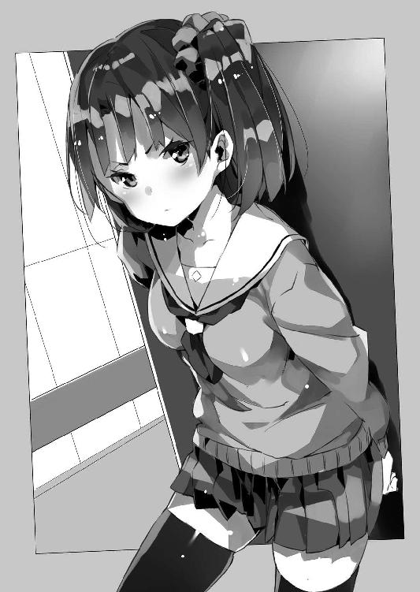
「え──あ、そ、そう、かな」
「でも普通のことでしょ、これって」
「............」
「僕にそれを教えてくれたのは、漫画やアニメなんだ」
できるだけ平淡な口調を心掛けて僕は言った。
紫月がオタク嫌いというのは構わない。趣味や嗜好は人それぞれで、何かを好きになるのも自由なら嫌いになるのも自由だと思う。無理矢理アニメや漫画やゲームを好きになってもらいたいとも思わない。
でも人によっては、そして読み方によっては、アニメも、漫画も、小説も、生きていくうえでの指針を与えてくれる教科書になり得る。少なくとも僕にとってはそうだった。
だから僕は、それらの存在そのものを否定されたくはない。
「『漫画だって本だ。ちゃんと読めばそこから学べるものもあるってこと』──昔、小学校の先生に言われたんだけどね」
僕はそのときのことを今でも鮮明に覚えている。
それからエルダントに行って。
文化侵略の片棒を担がされて。
でも──だからこそ僕は、知っている。
結局はそれを受け取る側の問題なのだ。
毒にも薬にもなる。使い方次第。
オタク作品に限らず──たぶん、なんだってそうなのだ。本当に、いざ、気付いてみると当たり前過ぎてつまらないことなのだけれど。でも、誰もがその当たり前を、当たり前だからこそ忘れがちで......
「............」
紫月はしばらく不愉快そうに唇を尖らせていたけれども──反論してくる様子はなかった。キモオタの言うことだからと何も考えずに全否定しているわけじゃない。たぶん、彼女なりに僕の言ったことを嚙み砕いて理解しようとしているのだ。だからこそ納得しきれない部分が残って、膨れ面になってしまうのだろう。
なんだ。こんなふうに話をすれば良かったんじゃないか。
自宅警備員時代の僕はどうしてこれができなかったのか。
我ながら情けないと思いつつも、僕は──紫月に笑いかけた。
「紫月の目には、僕のこと、恰好つけてるように見えたんなら......ちょっとでも、恰好よく見えたんなら、嬉しい、かな」
「バカじゃないの？」
間髪入れずに、端的でキレの良い悪態が紫月の口から返ってくる。
うおぅ。やっぱり紫月は紫月か。
そう簡単に『お兄ちゃん大好き』とか昔みたいにはならないよな。いやまあいまさらなられても困るけどさ。
紫月は踵を返すと、足早に部屋を出ていった。
そんな彼女の背中を見送ってから──僕はミュセルに苦笑を向けた。
「あー。なんていうか。あれでも一応、心配してくれているんだと、思う」
「ハイ！」
ぱっと表情を輝かせて何度も頷くミュセル。
「じゃ行こうか」
ベストを着てバックパックを背負いながら僕は言った。
「ア、アノ、シンイチサマ」
そのまま──歩き出そうとした僕の手を、ミュセルが摑む。
「どうかした？」
「あ、あの......」
接触しているので魔章指輪が機能する。
ミュセルは──何やら恥ずかしげに目を伏せながら、言った。
「シンイチ様は、その、いつでも、『カッコイイ』......です」
「............」
一瞬──僕の頭の中が熱暴走して思考が固まった。
触れた指がなんとなく熱いような気がするけど、これはたぶん、きっと、おそらく、気のせいで、だからその......よく考えたら、会話のためとはいえ、僕はミュセルと二人っきりで、手を繫いじゃったりしているわけで、何をいまさらとか言われてもその、あの。
「あ、あの、えっと、ありが、とう」
しどろもどろになりながらとりあえず礼を言う僕。
勘違いするな加納慎一ッ！ ミュセルは単に『バカじゃないの』と紫月が捨て台詞を吐いていったので、そうじゃない、大丈夫ですよ、と僕を慰めてくれているだけだ......！
ああもう、この子は本当に優しいなあ！
............などと。
とりあえず状況が状況なのでやたら高速運転する心臓を宥めるべく、僕は自分にそう言い聞かせると、ミュセルに向かって頷いてみせた。
「い、行こうか」
「は、はい」
そうして──お互いぎくしゃくと頷きながら僕達は、部屋を後にしたのだった。
居間に戻ると──皆が揃っていた。
ペトラルカとエルビアは所在なげにソファに座っているけれど、父はノートパソコンを開いて何やらキーボードを叩いているし、母と紫月はそれぞれタブレットとスマートフォンを操作して何かやっている。
ちなみに的場さんは報告があるとかで一度僕達の家から立ち去っている。またすぐに戻ってくるとは言っていたけれど。電話だのなんだのは盗聴されている恐れがあるので使えないんだとかなんとか。それから礼人さんの姿も居間にはない。さすがに帰ったのかもしれない──いろいろ助けてもらったお礼も言いたかったのだけど。
ともあれ......
「で......どう？」
僕は父の隣に腰を下ろしながら問うた。
「見つかった？」
ノートパソコンを覗き込むと、Twitterのクライアント・ソフトが立ち上がっている。
たぶん、母と紫月のタブレットやスマホも同様だろう。
ペトラルカやエルビアを放置して僕の家族が何をしているのかというと......実はTwitterを使って美埜里さんの情報を探しているのである。
先の工作員達を撃退したときにも、その点に言及するコメントがあったけれど......わりとネットでは僕達は有名人なのだ。例の『メイキング映像が流出した』『ファンタジー大作映画の出演者』として。だからこそ秋葉原でもあっという間に情報が拡散して野次馬に取り囲まれてしまった。
今や一億総スパイの時代──誰もがスマホやらケータイやらモバイル機器で、出先でも情報収集してこれをネットに放流できる。特に何かと物議を醸した（であろう）映画の出演者、しかも他の映画に出演した記録のない『新人』となると、目撃した人はついつい写真を撮ってネットに上げちゃうこともあるだろう。
もちろん、肖像権だのプライバシーだのの問題が絡むのでそれ自体は、あまり褒められた行為じゃないんだけど......今はそれを利用させてもらおうというわけだ。
いくらロシアの工作員とやらが優秀でも、あの秋葉原の雑踏の中で、いきなり美埜里さんを袋に詰めて連れ去ったわけではないだろう。気絶させて連れていったにせよ、銃か何かを突きつけて脅したにせよ、車に乗せるなりなんなりするまでは、美埜里さんはいろいろな人に目撃されているはずだ。
そしてあるいは......車から降ろして、監禁場所に連れていくときにも。
「いやぁ──面白いぞ」
父はニヤニヤしながら画面を指差した。
どうやら『秋葉原』とか『例の映画』とか『お忍び観光』とかで検索かけているみたいなんだけども......
「あろうことか慎一が『リア充爆発しろ』とか言われてる！ 『リア充爆発しろ』とか言われてる！ 慎一が！ 大事なことだから二回言いました！」
「なんで!?」
「そりゃ美少女だの美人のお姉さんだのを連れ歩いてるからだろ。どこからどう見てもハーレムにしか見えないわけで」
と父が示すツイートには、ミュセル、ペトラルカと手を繫ぎ、エルビアを背中に背負った状態で秋葉原を歩く僕の写真が添えられている。
うわぁ。こんなところまで撮られてたのか......!?
ネットって怖い！
......などと非オタっぽい発言をしている場合じゃなくて。
「それより美埜里さんの情報は？」
「検索しても引っかかるのはお昼の、アキバに行ってたときのばっかりなのよねー」
タブレットを操作しながら母が言う。
「名前で検索しても出てこないし」
まあ顔写真だけで『古賀沼美埜里』って名前まで調べようと思うと、それこそ、ＣＩＡ並みの──諜報機関並みの情報収集能力が必要になってくるだろうから、一般の人が彼女の本名を知らないのは当然なんだけども。
「巨乳、眼鏡のお姉さん、で調べたらなかなかいい画像が見つかるぞ」
「本当？ どれどれ？」
「あんたが反応するんかい！」
父の言葉に、身を乗り出して反応する母へ、僕は思わずツッコミを入れる。ちなみに元エロゲンガーということで、母はアイドルの水着写真集とか、女優のヌード写真集とかも普通に仕事の資料として持っているし、エロ系の画像にもあまり抵抗がない。
「......あ」
ふと紫月が声を上げた。
「ね──これじゃない？」
紫月はスマートフォンの画面を天井に向けて、みんなが見えやすいようテーブルの上に置く。僕達は揃って身を乗り出し、彼女のスマートフォンを覗き込んだ。
映っているのは、やはりTwitterのクライアント。
そこには......一枚の画像と共に『例の巨乳お姉さんをラブホ街で発見！ しかもお相手は白人！』なんて書かれている。
「ツイートそのものは、まあどうでもいいんだけど。この写真、あの人じゃない？」
そう言って紫月が、記事に添付されている画像を拡大する。
ラブホ街を歩いている一人の白人男性、その男性の隣を歩く一人の女性。少々画像は粗いがそれは確かに、美埜里さんだった。
「見つけた、美埜里さんだ！」
「ミツカッタノカ!?」
叫んだ僕の声を聞いて、ソファに座っていたペトラルカが立ち上がった。続いてミュセルとエルビアも、僕達のところにやってくる。
しかし──
「おいおいおいおい......」
助かったと言えば助かったんだけど、本当に油断も隙もないな！ 本当に恋人とデートしてる場合だったとしても、遠慮なく激写されてネットに上げられるってことだし。
まあ世間的には美埜里さんは芸能人扱いだから、こういうのは有名税というか、プライバシーなんて無視してＯＫ、みたいな認識なんだろうけど。
「お相手は白人か。大変だな」
「何が!?」
と思わずツッコミを入れてしまう僕だが今はそんなことやってる場合じゃなくて。
「ここどこだろ......？」
恥ずかしながらラブホ街とか縁がない──というかラブホテル自体行ったこともないので、この写真がどこなのかまるで見当がつかない。
「投稿された時刻は夕方か」
「ねえ、この後ろに映ってる看板のお店って、あそこじゃない？」
腕を組んで言う父の横から、母が画像を指差した。その先にあるのは、ホテルの後ろにちょっとだけ映っている、大きな看板だ。
どうやら外食チェーンのものらしいんだけど......
「このお店有名なのよね。でも最近、できたばかりで──えっと」
自分のタブレットを操作して、母がそのお店のものらしいホームページを表示した。
「あ。やっぱりそうだ。んー......省吾さん、ちょっとそのパソコン貸して」
「はいどんぞ」
父は自分のノートパソコンを母に手渡す。
母は膝の上にそれを置くと、父と同じかそれ以上の速さでキーボードを叩き始めた。
「慎一、美埜里さんの携帯番号は？」
「え？ えっと......」
母の指の動きが速すぎて、いったい何をしているのか見当もつかない。
僕は自分のスマートフォンを操作、美埜里さんの番号を告げると──しばらく母がパソコンを操作するのを、ただ呆然と見つめていた。
そして──
「ビンゴ」
十分か十五分か──経過した後、母が手を止めて頷いた。
「美埜里さんの携帯が壊されたのは夕方ね」
「へっ？」
なんでそう断言できる？
「投稿された記事と時間帯が近いのよ。場所もそう。そう考えるとこの記事、信憑性があるんじゃない？」
「な、なんでそんなこと......」
いったいパソコンで何をしたんだ!?
戦慄する僕を振り返って母はにやりと笑う。
嗚呼──この笑顔、見たことがある。これは昔、僕が学校の夏期課外授業をサボって某アニメのイベントに行ったとき、分刻みで僕の行動を列挙して凍り付かせたときのドヤ顔だ。いったいどうやったのかと問うても絶対に答えてくれなかったけど──たぶん、携帯のＧＰＳ信号を解析して僕がどこをどう移動したのか調べたに違いない。
でもＧＰＳ信号の解析なんて、普通の人にはとてもできることじゃないわけで......
「さすが母さん」
父が膝を叩いて母を褒め称える。
いや、それ褒めて良いの、本当に？ なんか法律に抵触しちゃうような行為とか含んでない？ ──という疑問が僕の脳裏を過ったが、今はそんなツッコミを入れている場合でもなく。
「母さん、グーグルのストリートビューでその場所調べてくれる？」
「了解」
美埜里さんの映っている画像と、母が調べてくれた美埜里さんの携帯が壊された位置。ストリートビューで検索したそこが同じなのだったら、これは完全にクロだ。
画面にその場所が表示されたらしく、母がパソコンの画面を僕達に向ける。
そして映っていたのは、美埜里さんが映っていた画像の場所と同じ......
「......ビンゴ」
僕は母の口調を真似てそう言った。
美埜里さんが囚われている場所はおおむね分かった。
ならば後は行動あるのみ。
僕は精霊瓶や魔法石、それに鹵獲品のスタンガンを詰め込んだバックパックを背負い、ミュセル、エルビア、それにペトラルカと共に家を出ようとした。母によると問題のラブホ街まではそれなりの距離があるみたいだから、どこかでタクシーをつかまえて移動するのが良いだろう。
そんなことを考えていると──
「──あれ」
インターホンが鳴った。
父が居間に置いてある端末で確認すると、インターホン付属のカメラには、七三分けの髪型と妙にくたびれた雰囲気の背広、という組み合わせの男性が映っていた。
言うまでもなく的場さんだ。
「あー......まずいなこれは」
と僕は呟く。
的場さんは、間違いなく美埜里さんを助けに行こうとする僕達を止めるだろう。彼の立場なら当然だ。そもそも美埜里さんがすでに死亡した扱いになっているのも、こういうときに見捨てやすいように、という考えからなわけで──彼なら『それは最初から想定のうちだよ』とか言いかねない。
そんなふうに考えて顔をしかめる僕に──
「はい。加納です」
インターホンに応対しながら父が、片手を振ってみせた。
纏わり付く犬や猫を追い払うかのようなそれは──つまり『ここは任せてお前はとっとと行け』という意味か。どうやら僕の考えていることはお見通しらしかった。
「ああ、的場さん、でしたかな。どうも、今回はどういった御用件で？」
すっとぼけた様子で、父は的場さんに対して引き延ばし工作にかかる。
その間に──
「あんたは勝手口から出なさい」
母親が声をひそめて言った。
「防犯カメラで見る限りじゃ、誰もいないから」
「母さん......」
『すごいな慎一。まるでラノベの主人公みたいじゃないか。頑張って美埜里さんを助け出してこい』
父は、のらりくらりと適当な雑談をして的場さん相手に時間稼ぎをしながら、ノートパソコンに打ち込んだ文字を見せてくる。
大感謝。
心の中で礼を言うと共に、僕は片手を父と母を拝むように掲げてみせてから、ミュセル達に頷いてみせた。
「......行こう」
僕らは大急ぎで勝手口の方に向かう。
あ。でも靴はどうしよう──と気付いたのは勝手口に着いたときだったのだけれど。驚いたことにそこには僕らの......僕のものはもちろん、ミュセル達の靴も用意されていて、すでに扉も開かれていた。
「早く！」
勝手口でそう急かしてくるのは紫月だ。
どうやら靴を持ってきてくれたのも彼女だろう。
庭の向こうでは塀に設けられた裏口の門扉も開放されているのが見えた。
「ありがとう、紫月」
「アリガトウゴザイマスデス」
「............」
面と向かってお礼を言われるとやっぱり照れるのか、明後日の方向に視線を逸らす妹の横を通り抜け、僕達は裏口から外に出た。
しかし......
「──大通りまで行かないとさすがにタクシーはつかまらないよな」
住宅街の真ん中をタクシーが早朝に流しているとも思えない。
車の通りが多い道はどこだっけ──と僕が記憶をひっくり返して探っていると。
「──よ」
ひどく気楽な声と共に一台の車が僕らの前に滑り込んできた。
スバルのインプレッサ──しかもＷＲＸ ＳＴＩ。
車にはそんなに詳しくない僕でも知っている、日本の名車だ。スープラやフェアレディＺ、スカイラインみたいに派手なデザインでもないし、排気量もそんなに大きくないけれど......質実剛健の見本みたいな車で、世界的なラリーで何度も優勝しているいぶし銀の実力派だ。
ただしその車体にはでかでかと『レンタル☆まどか』のまどかとまなみさんの姿が描かれていた。
いわゆる『痛車』というやつだ。そりゃもう描けるところには隈なく描く感じで、ボンネットやら側面のドアやらには、まどかとまなみさんが水着姿で寝そべったり、微笑んだりしている。非オタの車好きが見たら天を仰いで嘆息しそうな代物だ。
で──
「礼人さん......！」
その痛インプレッサの中から顔を覗かせたのは、礼人さんだった。
帰ったのかと思ってたけど、やっぱり近所に待機しててくれたのか、この人。
「乗っていけよ」
と白い歯を見せて礼人さんは言った。
「まだまだ面白そうだったからな、こっそり待機してたんだ」
「ありがとうございます」
「礼は後。さ──早く！」
僕はミュセル達に頷いてみせてから──ドアを開いて後部座席へ乗り込むようにと彼女らに示す。ミュセル、ペトラルカ、エルビア、の順で彼女らが後部座席に乗ったのを確認すると、僕も助手席に座った。
「で──お客さん、どちらまで？」
「ここまでお願いします」
僕はあらかじめ保存しておいたくだんのラブホ街の地図を見せる。
「よっしゃ。シートベルトしとけよ？」
そう言うと──礼人さんはアクセルを踏み込む。
インプレッサは弾かれたかのように急発進──加納家が一瞬で後方に遠ざかる。
そのとき、僕は──まだ紫月が家の中に入っていないことに気付いた。裏口から出てきて僕達を見送ってくれている。瞬間的に小さくなっていく妹の顔に、僕は心配そうな表情が浮かんでいるのに気付いた。
ああもうなんだよ、可愛いなあいつ！
「............」
紫月にはっきり見えているかどうかは分からないけれど、僕は窓から顔を出して──大丈夫だ、というふうに彼女へと頷いてみせた。紫月は何か言いたげに口を開いたみたいだけど、加速するインプレッサの排気音と距離のせいで、声は聞こえない。
瞬く間に加納家は小さくなって──インプレッサが曲がり角を曲がった時点で、完全に見えなくなった。
大丈夫。うん。大丈夫だよ。
僕はむしろ自分自身に言い聞かせるように頷いた。
絶対に皆で美埜里さんを助け出す。
そしてエルダントに帰るんだ。
（──美埜里さん、今、行きます）
胸の中でそう告げて──柄にもなく僕は拳を握りしめた。
くだんのラブホ街は──徒歩で向かうのは無茶だけど、車だとそう遠い場所ではなかった。
道路も空いていたということもあり、僕達を乗せたインプレッサは、半時間と少しで目的の地域に辿り着いていた。
だが──
「............」
僕達は車を降りて辺りを見回す。
時間が時間なので人通りは絶無と言って良かった。まあ立ち並んでいるのは半数がラブホテル、半数がよく分からない雑居ビルで、前者は二十四時間営業なんだろうけども。
このどこかに美埜里さんがいる。
しかしどの建物のどの部屋かはまだ分からない。
片っ端から調べていくしかないのだけれど──
「ああ。ちょっと待って」
と精霊瓶片手に歩き出そうとした僕に、車を降りた礼人さんが声を掛けてきた。
彼はスマートフォンを取り出して何やら操作している。
何かを調べているみたいなんだけど、いったい何を？
「礼人さん......？」
やがて彼は何かを確認するかのようにスマートフォンを目の高さに掲げて見てから──僕達に向けて頷いてきた。
「うん。そのビルだ」
と彼が指し示すのは、ラブホテルではなく、そのすぐ隣に立つ三階建ての雑居ビルだった。あんまり使われている雰囲気ではないというか、看板も何も出ていないので、廃ビルのようにすら見えるけども。
「このビルって......」
「古賀沼美埜里はここに捕まってる」
あっさりとそう礼人さんは断言した。
「へ!? ど、どうして分かるんですか？」
「ロシアと貿易している会社の名義で借りられているビルだからだよ」
あっさりと礼人さんはそんなことを言ってきた。
「............？」
僕と礼人さんの会話についていけないのか、ミュセルとペトラルカ、エルビアが困惑の表情を浮かべて顔を見合わせている。だけどわけが分からないのは僕も同じで──
「......なんでそんなことすぐに分かるんですか？」
こんな短時間、しかもいくらスマートフォンとはいえ、そんなこと、すぐに調べられるものだろうか？ しかも『ロシア人名義』ならまだしも『ロシアと貿易している会社名義のビル』が怪しいとか......そんな発想を普通の人間がするものだろうか。
この人が見た目以上に頭が良いってのは僕も気付いていたけれど......
「貴方いったい......」
何者なんだ、と尋ねようとした僕だったけど。
「来た」
礼人さんが険しい顔で、ある方向を振り向きながらそう言った。
「え......？」
礼人さんの視線につられて、僕もそっちに顔を向ける。
ちょうどその雑居ビルから出てきたのだろう──白人の男性がこっちに向かってくるのが見えた。背も高く、体格も立派だ。彫りの深い整った顔立ちは、しかし、アンドロイドか何かみたいに無表情だった。
これは──
「え、あ......」
僕が止める間もなく礼人さんが前に出る。
「ナニ？ ドウシタ？」
ペトラルカがやはり困惑の表情で聞いてくるけど、僕にも答えられるはずがない。
礼人さんは肩を竦めてその白人男性に話し掛けた。
「あのお、すいません、道に迷っちゃって──」
皆まで言うのも待たず。
次の瞬間、白人男性は、礼人さんに摑みかかっていた。
格闘技については素人の僕だけど、それが、単に襟首を摑んで脅すとか、そういう動きでないのは見た瞬間に分かった。礼人さんの身体を摑むだけでなく、身体全体で巻き込もうとするように動くそれは、明らかに関節技、絞め技に持ち込むためのものだ。
コマンドサンボか。あるいはシステマか。
たぶん、ロシアの軍隊格闘術。
しかし──
「──!?」
するりと礼人さんの姿が白人男性の両腕の間から消える。
半歩外側に移動していた彼は、伸ばされた白人男性の腕を摑むと──
「アッ!?」
驚きの声を上げたのはエルビアだ。
というより動体視力に優れた彼女だけだろう、礼人さんが何をしたのか、はっきりと見て捉えることができたのは。僕達が気付いたときには、白人男性は、投げられ、アスファルトの地面に背中から叩き付けられていた。
「噓っ!?」
「グォ......！」
白人男性が呻く。
多少なりとも衝撃を吸収する板張りや畳の床と違い、硬い地面に投げられると、それだけでたいていの人間は行動不能になる──とどこかの本で読んだことがある。直接ぶん殴る空手やら拳法やらに比べると若干、大人しめな印象の強い柔道や合気道だけど、警察やら一部の軍隊が格闘術としてこれを積極的に採用しているのは、その制圧力ゆえのことなんだとか。
しかも──
「動くな」
その顔面に、拳銃の銃口が向けられたのは次の瞬間だった。
「......！」
白人男性が凍り付く。
銃を握っているのは礼人さんである。彼は白人男性から一歩離れた位置で銃を握っていた。たぶん、白人男性が咄嗟に何かしようとしても、余裕で対応できる距離、ということなのだろう。
どこからどう見ても素人の身のこなしではない。
「れ、礼人さん......」
別に筋骨隆々ってわけでもなく、見た目はオタクそのものって感じの彼が、屈強そうな白人男性を文字通りにねじ伏せ、拳銃まで突きつけている。数秒前までは予想もしなかったその光景に、僕らはただただ呆然としていた。
「......寝てろ」
そう言って礼人さんは倒れたままの白人男性の腹を容赦なく踏んづけた。
ロシアの工作員──だろうたぶん──は声もなく悶絶して、気絶する。
そして......
「やっぱりここみたいだな」
ロシア人から離れた礼人さんが僕らを振り返る。
「行こうか」
「いやちょっと待って、礼人さん、いったい貴方何者なんですか？」
僕は礼人さんのところには駆け寄らず、三メートルばかり距離を置いてそう尋ねた。
いまさら、『通りすがりのただのオタク』だとか言われても信じられるはずがない。
「通りすがりのただのオタクだよ」
「そのまんまかよ！」
「うん？」
「いやそうじゃなくて──ただのオタクが拳銃とか持ってるはずないでしょ！」
しかもよく見ると銃口に小型の銃声抑制器を着けた代物──要するに特殊作戦とか破壊工作に使う武器である。確か同型のものは父のモデルガンだかエアガンだかの中で見た覚えがある。シグ・ザウエルＰ２２８......ドイツ製の拳銃で、確か日本警察の特殊部隊や、海上保安庁特殊警備隊も装備しているとかなんとか。
つまり......
「モデルガンだよ」
礼人さんは『プラ製ですよ』と言わんばかりに軽々しくＰ２２８を弄ってみせる。
しかし──
「そんな強そうな男を一瞬で倒すなんて」
「子供のころから格闘技に憧れててね。ほら、かめ●め波の練習とかしたことあるだろ？ あれと同じ同じ」
「礼人さん」
礼人さんはごまかすようにへらへら笑いながら僕の質問に答えていたけれど──さすがに僕のすぐ脇で身構えるエルビアとミュセルを見て、ごまかしている場合ではないと気付いたらしく、溜め息をついて肩を竦めた。
「魔法で一撃ってのは勘弁してくれ」
「......！」
その一言で僕の疑念は確信に変わった。
彼は魔法を──つまり異世界のことを識っている。確かに僕達は一度、彼の目の前で魔法を使ってはいるけれど、それが特殊な格闘技でもトリックでも超能力でもなく、『魔法』なのだということなど、説明されていない彼は、知りようがないはずだった。
要するに......
「俺は君達の敵じゃない」
彼は軽薄な笑みを消すと、そう言った。
「いや、だから何者──」
「内閣情報調査室って、知ってる？」
「............」
予想外の単語に──僕はただ啞然とした。
僕らは雑居ビルの入り口の前で左右に分かれた。
扉の右脇には僕とエルビアとペトラルカ。
扉の左脇にはミュセルと礼人さん。
これはそれぞれに偏らないよう『飛び道具としての魔法』技能者と、格闘戦技能者を配置した結果だ。前衛はエルビアと礼人さん。それを僕とミュセルが支援するという寸法。
「............」
礼人さんが僕らに頷いてみせてから、そっと身を乗り出して中の様子を窺う。
「............」
僕は──思わず生唾を吞み込んだ。
緊張しているのが自分でも分かる。今までは『敵が攻めてくる』ばかりで、無我夢中で状況に対処していただけだけど、今度は、自分から危険の中に飛び込んでいこうというのである。いまさらながらに恐怖感が僕の頭の片隅で蠢き始めていた。
だがもう遅い。今から帰るわけにもいかないし。
とりあえず『人』って文字を掌に書いて吞み込もうかとか、妙に間の抜けたことを考えていると──誰かが僕の手をそっと摑んできた。
「......？」
振り返るとペトラルカと目が合った。
彼女は──僕の手を摑んだまま、『落ち着け』『大丈夫だ』とでも言うかのように頷いてくる。僕と同様に彼女も緊張はしているのだろうけれど、そこはやはり皇帝陛下──とても冷静に見える。彼女の翡翠色の瞳を見つめ返していると、なんだか僕の方まで気分が落ち着いてきた。
僕は『ありがとう、大丈夫だよ』という意味を込めて頷き返す。
納得してくれたのか、ペトラルカは小さく笑って手を放した。
ああ。ちょっと残念。
彼女の小さく温かい手の感触を僕は惜しんだ。もちろん、ペトラルカが手を放したのは、これからの僕の動きを制限しないためで──このまま手を繫いでいるわけにはいかないんだろうけどさ。
ともあれ......
「............」
礼人さんが僕達に合図を送ってくる。
ビルの中を指差して、人差し指と中指を立てた。中に二人いる、という徴だ。
もちろん──僕達は簡単ながらもあらかじめ作戦を立てていた。
ビルの中を覗き込んで、とりあえず入り口付近に誰もいなければ、礼人さんを先頭にそっとビルの中に侵入する。逆に工作員と思しき相手がいたら、僕とミュセルが魔法で彼らを蹴散らして強行突入。
結果は後者。だからまずは......僕とミュセルの出番だ。
銃と違って〈疾風の拳〉は爆発音を立てない。しかもいわゆる『飛び道具』なので一方的に相手を攻撃できる。こういう場合にはうってつけだった。
僕は一度──深呼吸。
気持ちを落ち着けると、ビルの中を覗き込む。
確かに正面にはロビーというか受付みたいな場所があって、その奥にはエレベーターの扉が見える。二人の男がそのエレベーターの横に椅子を置いて座っていた。
僕はベストから一本の精霊瓶を取り出すと──これを手榴弾みたいにビルの中へと投げ込んだ。
「......!?」
咄嗟に身構える白人男性二人。
しかし彼らは、自分達のすぐ側で割れているのが、ただの陶器の瓶らしいと知って、拍子抜けしたかのように顔を見合わせていた。それこそ一瞬、手榴弾でも投げ込まれたのかと思ったのかもしれない。
もちろん、精霊瓶から拡散した魔力は目に見えない。
彼らにはただの陶器の瓶が割れただけにしか見えなかっただろう。
しかし──
「ミュセル！」
「ハイ！」
僕はミュセルに一声掛けて──二人で、ビルの中に飛び込んだ。
突然現れた僕達に、ビルの中にいた二人の白人男性が驚いたような顔をする。だけど僕らはそんな彼らには構わず、あらかじめ唱えていた呪文の最後の部分を口にしながら、両手を前へと突き出した。
「〈疾風の拳〉！」
僕とミュセルの声が重なる。
突き出した僕とミュセルの掌から──猛烈な勢いの風が飛び出した。屋内に生じるはずのない強力な烈風。それは二人の男達を吹っ飛ばし、壁に激突させていた。
鈍い音と共に彼らは呻き声を漏らし──そしてそのまま壁から床へと滑り落ちる。
ぴくりとも動かないところを見ると、気絶してくれたようだった。
「やった！」
成功した喜びに、僕はミュセルと顔を見合わせると、拳を握り締めた。
なんだよ、強いじゃん僕ら！
などと身のほど知らずにも喜んだのも束の間。
「～～～～ッ!?」
男達が壁に激突する音を耳ざとく聞きつけたのか、それともビル内に監視カメラでも設けられていたのか──慌ただしい足音と、叫び交わす声が、奥から聞こえてきた。
僕とミュセルが身を隠す間もなく、それはすぐに四人の男の姿となって現れる。
「～～～～ッ！ ～～ッ！」
何事か──たぶんロシア語で──叫びながら、男達は銃を抜く。
しかし彼らのうち二人の手は次の瞬間、通路の脇から飛び出した礼人さんとエルビアに蹴り上げられ、銃は空中にすっ飛んでいた。僕とミュセルが二人を倒した時点でエルビア達も飛び込んできて、通路の脇に張り付いていたのだ。
続けてエルビアと礼人さんが男達の間に割り込んだ。
相手は、未だ二人が銃を手にしているけれど......乱戦状態になれば銃は使えない。味方を誤射してしまう可能性もあるし──手の届く距離ならば、銃で狙いを定めて撃つなんてことをしているよりも、ぶん殴ったり蹴り倒した方が早いからだ。
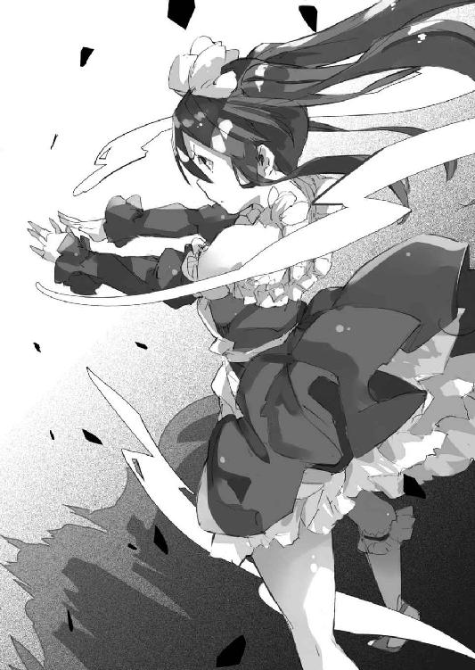
もちろん、この状態だと僕とミュセルも援護できなくなるんだけれど。
単純にエルビアと礼人さんの二人に対して、工作員達は四人──二倍。
しかし先の二人が倒されたのを警戒してか、工作員達は僕とミュセルを無視することができない。注意が分散しているところを、礼人さんに殴られ、エルビアに蹴られ、男達は大きくよろめいた。
そして──
「──撃て！」
脇へと飛び退きながら叫ぶ礼人さん。
同時にエルビアも反対側に飛び退いている。
つまり僕とミュセルの正面には──姿勢の崩れた男達がまとめて四人。
「〈疾風の拳〉！」
再び僕とミュセルの声が重なる。
四人の工作員は、先の二人と同様に壁に叩き付けられて、呻く。折り重なるようにして床に滑り落ちた彼らに駆け寄ると、礼人さんが一人ずつこれを踏んづけて──見た目はひどいけど確実だ──気絶させていった。
やがて、ビルの中に、シン......と静寂が満ちる。
「......終わったのか？」
ペトラルカがビルの玄関から覗き込んで尋ねてくる。
「とりあえずは」
僕が頷くのを見て──彼女はそのままビルの中へと入ってきた。
「こ奴らがミノリを攫った外国の密偵か」
工作員達を見下ろしながら言うペトラルカ。
魔章指輪が機能していることから察するに、さきほどの精霊瓶のおかげで、今この場にはまだ魔力が満ちているらしい。
「まさかこれで全員ってことはないだろうけどな」
と言うのは礼人さんだ。
確かにいくら侵入者に気付いたからといって、全員でぞろぞろと出てくる意味はないわけで。少なくとも一人か二人は美埜里さんのところに残って彼女を見張っているだろう。
ちなみに──今は、礼人さんも魔章指輪をしている。
もともとは的場さんがエルダント帝国から賜ったものの、予備なんだとか。日本に持ち帰って研究されていたものを、借り出してきたらしい。確かにミュセルやエルビアと意志疎通できた方が救出作戦では便利だろう。
「まだ安心するのは早い。油断しないで進むぞ」
と礼人さんが言う。
さすがに本職──こういう場は彼に仕切ってもらった方がいい。
そういうわけで、礼人さんを先頭に、僕らは美埜里さんを探すために、ビルの中を歩き出した。
「......とりあえず登記されてる建物図面は取り寄せたんだが」
スマートフォンの画面を確認しつつ進んでいく礼人さん。
「ロシアの連中が、素人工事でビルの構造まで弄れるわけもないだろうから、部屋の配置はそのままだろう。となると──」
おおむね礼人さんは『当たり』をつけているらしい。
彼の後について──やがて僕達は、三階の廊下に辿り着いた。
「たぶん、あそこだな」
と礼人さんが廊下の突き当たり、いちばん奥の部屋を指差して言う。
扉は閉まっているけれど、その手前には見張りらしき人影はない。僕らはゆっくりと慎重に近付くと──まず礼人さんが扉に手をかける。
ドアノブはすんなりと回った。どうやら鍵はかかっていなかったようだ。
「............」
礼人さんがこちらを振り返って頷いてくる。
僕達はいても立ってもいられずに部屋の中に飛び込んでいた。
「美埜里さん！」
確かに彼女はそこにいた。
ろくに家具もない部屋の奥──両手両足を縛られて、壁に背を預ける形で床に座っている。意識はちゃんとあったみたいで......部屋に飛び込んできた僕らを見て、眼鏡の奥の目を見開くのが分かった。
良かった。とりあえず無事っぽい。
「し──慎一君？ ミュセルにエルビア、陛下まで......！」
「ミノリサマ、ダイジョウブデスカ!?」
ミュセルは美埜里さんのすぐ横に座り込むと、美埜里さんの手足を拘束している縄に手をかけた。が──きつく縛られているらしく、なかなかほどけない。
「マカセル、マカセル！」
そう言って脇から手を伸ばすのはエルビアだ。
彼女は退いたミュセルに代わって縄を摑むと──
「ふんっぬぬぬぬ！」
両手でこれを引っ張り始めた。
「ちょ......エルビア？」
これは、ひょっとして──というかひょっとしなくても無理矢理に引きちぎろうってこと？ いや、幾らなんでもそれは無茶だろ。最近の縄ってナイロン繊維かなんかだろうし。
「エルビア、無理しなくても、っていうか痛い痛い！」
美埜里さんが悲鳴じみた声を上げる。
そこへ──
「あ、いいから、そのままそのまま」
そう言ってポケットから小さな折り畳みナイフを取り出した礼人さんが縄に切れ目を入れる。するとそこから連鎖的に繊維がちぎれ始めて──
「ふんっ！」
そんなエルビアの鼻息と共に、縄は切れた。
「コッチ！」
同様に足の縄もエルビアと礼人さんが切って......美埜里さんはほどなくして自由の身となった。
「ありがとう、エルビア」
拘束が解かれた美埜里さんは、縄のせいで赤くなった手首や、足首を擦りながらそう礼を言った。それからミュセルの手を借りて立ち上がると、彼女は改めて僕達を見回す。
「でもみんな、どうしてここに......」
「オタスケ！」
元気よく答えるエルビア。
「オタス......？ 助けに来てくれたの？」
驚くというより呆れの混じった声で言う美埜里さん。
「でもよくここが分かったわね」
「母さんと礼人さんが調べてくれて」
「レイト......？」
美埜里さんは首を傾げて、礼人さんの方を──再会を喜ぶ僕達から一歩下がって、警戒するように部屋の外を窺っている彼の方を見た。
その顔にはわずかだけど警戒の色がある。
「あ、ええと礼人さんは僕達を護るために政府から......内閣情報調査室から派遣されたエージェントだとか......」
「内閣情報調査室？」
美埜里さんが眉をひそめる。
「まあ正確にはその下請けなんだけどねえ」
と礼人さんは笑った。
ちなみに内閣情報調査室というのは、日本の情報機関だ。
正式名称は内閣官房内閣情報調査室。通称は『内調』もしくは『ＣＩＲＯ』。
もともとは日本版ＣＩＡを目指して設立されたみたいだけど......まあ世論だのなんだのの非難を受けたみたいで、実際にはあんなにバリバリの人的諜報活動をしまくる諜報機関ではないらしい。
しかし......
「ゾンビー・ユニットと同様、いつでも切り捨てられるようにね。書類上は正式な内調の職員じゃないわけさ。それはさておき、まずはここから出るのが先」
やはり拳銃片手に廊下の方を窺いながら礼人さんは言った。
「ちなみに美埜里さん、工作員の数は全部で何人ですか？」
「私が確認した数は九人かな」
外で一人、入り口の見張りが二人、そのあと四人、計七人。つまり残り二人がいるはずなんだけれども──
「二人はさっきまでここに残っていたんだけど」
と美埜里さんは部屋の隅に置かれている机を指差した。
そこにはノートパソコンが一台、置かれている。
だが──
「なんだか慌ててあれ操作して出ていっちゃった」
「『立つ鳥跡を濁さず』か」
と礼人さん。
「あのパソコン、監視カメラに繫がってるんだろう。で、仲間がやられたのを見て、やばい情報だけ消して逃げた」
「あ......なるほど」
監視カメラの映像をパソコンで見るのは、何も加納家の専売特許でもないし。
仲間の敵討ち、だのなんだのにこだわらずに、不利とみると素早く撤退するのはさすがに本職の工作員、といったところだろうか。
とりあえず敵は全員が倒されたか逃げたかしたということになる。
でも先に気絶させた連中が目を覚まさないとも限らないし、ここでゆっくり再会を喜んでいる場合じゃないだろう。
「歩けますか？ 美埜里さん」
「ちょっと痺れてるけど大丈夫」
ざっと見たところ、美埜里さんに怪我はなさそうだった。
服も特に乱れたところはない。本当に縛られていただけだった。まあ拉致されて丸一日も経っていないんだから、何をするにしても、これからだったのかもしれないけど......ううむ。
「......拷問とか、されなかったんですか？」
僕は皆と一緒に廊下に出ながらそう尋ねてみた。
「なんなのその残念そうな表情は」
「べ、別に残念とかは思ってませんよ。でもこう鞭で打たれたり、服脱がされたり」
「なかったわよ。ここに連れてこられて縛られはしたけど」
歩きながら美埜里さんは肩を竦める。
「さすがにあれだけの人数相手には敵わないから、大人しくしてた」
まあいくら美埜里さんが格闘だのなんだのに優れているからって、同じく格闘の訓練を受けているであろう男が五人も六人も相手では、どうにもならないのは当然の話。一人で何十人もをばったばったと薙ぎ倒して無双しまくれるのは、それこそゲームとか漫画の中だけの話だ。
しかし──
「敵わなかったのは人数だけですか？ イケメン二人がいたから逃げることができなかったとかではなく？」
「......何言ってるの？」
眉をひそめて美埜里さんが尋ねる。
ううむ。僕の妄想はまったく的外れであったらしい。意外に適当というか下調べが足りないな、ロシアの諜報機関。僕だったらあらかじめ美埜里さんの趣味を調べておいてそこを取っかかりにいろいろ吐かせるんだけど。
まあ迂闊にそっち系の話を振ったら、むしろロシアの工作員が全員、美埜里さんに洗脳されかねないような気もするけど。
「......シンイチ、フマンソウジャナ」
横目で僕を睨みながらペトラルカが言う。
「え？ そ、ソンナコトナイデスヨ」
「ホウ？」
僕を見上げるペトラルカの目が冷たい。
ついでに美埜里さんも、何やらジト目で僕のことを見てくる。両手を交差させて、胸を隠すようなポーズまでとっていた。
「そ、そんな！ 僕が美埜里さんの一大事にそんな不埒なことを考える男とでも!?」
「慎一君だしなあ」
疑わしそうな目でこっちを見てくる美埜里さん。
まあ考えてたんですけどね。
「ほらほら。急ぐぞ」
礼人さんが急かしてくる。
僕達は苦笑を交わして──それから全員で雑居ビルを出た。
そのとき......
「──慎一君」
ふと美埜里さんが身を寄せて、僕の耳元で囁いてくる。
自然と僕は歩調を緩め、彼女もそれに合わせてゆっくり歩きながら、こう続けた。
「真面目な話、今後、こういう無茶はしないで。君はもちろん、陛下に何かあったら、人間一人の生き死にじゃ済まないことになるんだから」
「......はい」
それは重々承知していたんですけどね。
でも......
「でもありがとうね」
美埜里さんはそう続けた。
「ちょっと、お姉さん感動しちゃった」
ちょっとはにかむような表情で言って、肩を竦める美埜里さん。
ああああ!? なんか年上のくせにすげえ可愛いんですけどこの人!?
僕ってば、美埜里さんから見れば、もしかして白馬に乗った王子様（言い過ぎ）!?
やはり時代は巨乳で眼鏡なのか？ 父さんは正しかったというのか!?
などと──
「シンイチ！ ナニヲシトル!?」
僕が密かに激しく萌え萌えしていると......先を歩いていたペトラルカが、何かを察したかのように、棘を含んだ声で僕の名を呼んでくる。
「す、すみません！」
とりあえず謝ってから、僕は美埜里さんと顔を見合わせると──皆に追いつくべく、全力で駆け出した。
美埜里さん救出の──翌日。
加納家の前には一台のマイクロバスと二台の黒いセダンが停車していた。
事実としてはもうただそれだけなんだけど、やっぱり物々しい空気を感じるのか......道行く人達が何事かと加納家と三台の車を眺める姿が目立った。
この三台は僕らがエルダントに帰る際に使うようにと、日本政府が用意したものだ。
マイクロバスは僕らが乗る方。黒いセダンはその護衛。
で──
「こうやって見ると普通ですね」
玄関の前に立った僕は、先の方の黒いセダンの脇に立つ黒スーツの男性に話し掛けた。
「普通ってなんだよ」
と苦笑するのは礼人さんだった。
昨日までの見るからに『俺、オタク！』ってな恰好──黒シャツに指ぬきグローブではなく、皺一つない背広を堂々と着こなしているその姿は、どこからどう見ても立派な社会人である。さすがに髪の長さはそのままで、襟の辺りで括って束ねているけれど。
やっぱり服装って人の印象を左右するんだなあ。
「昨日までのあの恰好って、やっぱり僕らを油断させるためのものだったんですか？」
もし秋葉原で、今のこの恰好の礼人さんに声を掛けられたら、僕はすんなり彼のことを信用できなかったように思う。僕と同じオタクだという仲間意識があったから、多少不自然で強引な出会いでも納得することができたのだ。
そこまで計算してのことだとすると、さすがにすごい。
そう思ったのだけれど──
「いや、あれ俺の普段着」
「へ!?」
「あの車だって俺の私物だぞ」
僕の問いかけに、礼人さんはどこか誇らしげに胸を張った。
あれ私物なんだ......いやまあ、あの車が公用車ですなんて言われても困るけどさ。
「こういう職業だと、娯楽が限られるからなぁ」
「そういうもんなんですか」
ああ、でも美埜里さんもオタクというか腐女子だし。一理あるのかもしれない。そういえば自衛隊とか、在日アメリカ軍とかにも意外にオタクが多いって話聞いたことあるけど、本当だろうか。
「......これで護衛は全員？」
僕より一足遅く玄関から出てきたのは美埜里さんだ。
続いてペトラルカ、エルビアが続く。
今ここにいるのは、エルダントに帰る僕らと、礼人さん、あと黒い車の中にそれぞれ二人ずつと、マイクロバスの運転手が一人。基本的に内閣情報調査室関連の人達らしい。礼人さんによると『外注』の下請けらしいんだけども。
ちなみに内閣情報調査室ってのは公安というか警察寄りの組織らしくて......縄張り意識なのかなんなのか、伝統的にあんまり自衛隊とは仲が良くないっぽい。だからこそ自衛隊の諜報部と揉めちゃった僕達のところに派遣されてきたのかもしれないけど。
「機密保持や対外的な言い訳ができる限界がこの人数でね」
礼人さんは肩を竦めてそう答える。
「さて、そろそろ出発できるか？」
礼人さんに聞かれて僕は家の方を振り返った。
「まだミュセルが......」
何をしているのか、彼女だけが家から出てこない。
礼人さん達をあまり待たせるのもまずいし、呼びに行こうか──と思ったら、ちょうどそのとき、ミュセルが両親や紫月と一緒に玄関から出てくるのが見えた。
「スミマセン、オマタセシマシタ」
「何してたの？」
「イロイロト......オハナシヲ」
尋ねると、何故か彼女は言葉を濁し、ほんのり頰を赤く染めた。
え......何この反応？ めちゃ可愛いんですけど。
「──慎一」
マイクロバスに乗ろうと歩き出した僕は──しかし後ろから肩を摑まれて、引き止められた。父だ。隣には母と紫月も並んでいる。ミュセル達は、立ち止まった僕を振り返ったけれども、美埜里さんに促され、バスに乗った。
「な、なんだよ」
「ミュセルさん、大事にしろよ？」
「──は？ 何、いきなり？」
「本当──良い子ね。食事のときもいろいろ手伝ってくれたし。慎一なんかのことをすごく褒めてくれてね」
「息子をなんかって言うな、なんかって」
あまりの言いぐさに僕は顔をしかめる。
いやまあ、幼馴染みに振られた挙げ句に不登校になっちゃうわ、ある日突然に行方不明になっちゃうわ、な息子は『なんか』って言われてもしょうがないんだろうけどさ。
しかしミュセルが僕のことを褒めてくれていたって......いったい何をどう言ってたんだ？
「......ミュセル、なんて言ってたの？」
ちょっと恥ずかしいんですけど。
思わず尋ねる僕に──両親は揃ってニヤニヤと笑った。
「いろいろとね。慎一は恰好いいとか、頼りになるとか」
「本当に自分達にとってなくてはならない人だとか」
「そ、そうなんだ」
うわ。嬉しいけどやばい。恥ずかしい。
「良い子なんだけど、慎一をあんなに褒め称えるとか、男を見る目がなあ」
「......どういう意味だよそれ」
本当──久しぶりに里帰りした息子になんたる言いぐさ！
そこまで考えてから、僕はふと思った。僕達は今からエルダントに『帰る』......だけど僕が次にこっちに『帰って』くるのはいつになるんだろうか。半年後か。一年後か。それとも......
「──次はいつ帰ってくるの？」
そんな僕の内心を見透かすかのように、素っ気ない口調で紫月が尋ねてきた。
「それは......」
言葉に詰まる。
今回のことは......もともとは何をしようというのでもなく、ただ、父の容体が心配で、様子を見に里帰りしただけなのだ。それがいつの間にか、各国の諜報部員やら何やらが入り乱れる騒ぎになっている。僕はもう良くも悪くも......気楽に日本に帰ってくることはできない立場になっているのだ。
不安で言葉が見つからない僕の代わりに、口を開いたのは父だった。
「そんな簡単にこっちへ戻って来られるはずないだろう。慎一はオタクの──文化の伝道師になったわけだしな。いわば親善大使だ」
「天職を見つけたようで安心したわ。血の呪いかもしれないけどね」
と母も苦笑する。
まあこの父と母の間に生まれたからこそ、今のオタク全開な僕がいるのは間違いない。それを福音ととるか呪いととるかは、まあ──人それぞれだ。紫月なんかにはまったく影響がないみたいだけども。
「父さんと母さんも好きなことをして生きてきたからな。まあ悔いのないようにやれとしか言わんよ。後は......たまに手紙やメールをよこして近況報告くらいはしてくれれば、親としては御の字だ」
「ちょっと自立には早い気もするけどね」
「............」
微笑む両親を前に僕は言葉を失った。
やばい。ちょっとウルッときた。
僕が思わず恥ずかしさで父と母から視線を逸らすと──
「つか、別にもう帰ってこなくても構わんぞ」
「......そ、それはひどくない？」
「そうね、就職、自立、とくれば次はお嫁さん連れて帰ってくるのが筋よね」
「なっ......」
焦る僕に父がそっと耳打ちしてきた。
「で、どこだか知らないが、そのペトラルカ姫の国は重婚とかいけるのか？」
気にするのはそこかよ!?
僕は咄嗟に反論しようとして言葉を探すけれども──
「ほら、みんな待ってるぞ。早く行け」
「引き止めたのはそっちだろ！」
父と母に背中を押されて、僕は──何かを振り払うような気持ちでマイクロバスに飛び乗った。中ではミュセル、ペトラルカ、エルビアに美埜里さんが座って僕のことを待ってくれていた。
マイクロバスは、二つの座席と、通路を挟んでもう一つの計三つが横並びになっている。それが縦に七列あって──ミュセル、ペトラルカが横並びで、通路を挟んださらにその隣にエルビア、ミュセルとペトラルカの後ろには美埜里さんが座っていた。僕は空いている、美埜里さんの隣に腰を下ろす。
全員が乗り込んだのを確認して、運転手がエンジンをかけた。
美埜里さんが窓を開けて、そこから顔を出す。
「突然すみませんでした。お世話になりました」
美埜里さんに続いて、みんながそれぞれ席を立って片側に寄ると、一人ずつ窓から顔を出した。
「セワニナッタ、レイヲイウ」
「タノシカッタ！」
「アリガトウゴザイマシタ。ドウゾ、オゲンキデ」
「こちらこそ」
「慎一のことよろしくお願いします」
口々に別れの挨拶を交わすミュセル達とうちの家族。
最後に僕が、美埜里さんの身体ごしに、窓から身を乗り出して手を振った。
「じゃあ、また！」
「──兄貴」
すると──それまでは両親の陰に隠れるように立っていた紫月が、マイクロバスまで駆け寄ってきた。
「......身体、気を付けて」
仏頂面で告げる、捻りのない──社交辞令そのものの言葉。
だけどそれが、何年かはろくに会話もなかった妹の口から出たとなると、それはやっぱり別の意味を持つわけで。
「ありがとう。紫月もな」
僕が笑って頷くと同時に──バスが動き出した。
二台の黒いセダンに挟まれる形で、ゆっくりと、バスは速度を上げていく。加納家はその前に立つ僕の家族共々、急速に小さくなっていき......やがて車が角を曲がって見えなくなった。
「............」
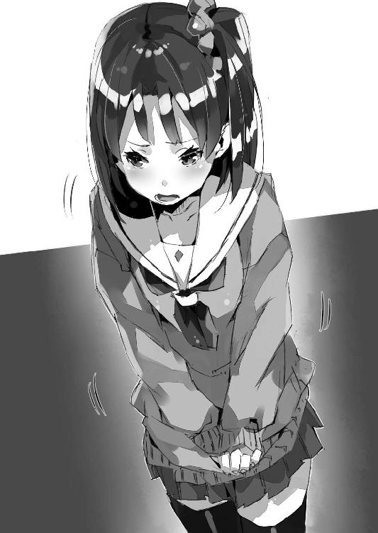
座席に座り直しながら僕は溜め息をつく。
隣で美埜里さんが悪戯っぽい笑みを浮かべて訊いてきた。
「慎一君、寂しい？」
「あー......どうでしょう」
曖昧な言葉を返しながら──ふと僕は思い出す。そういえば美埜里さんは家族がいないんだっけか。彼女は日本に帰ってきても、里帰りするべき家もないし、別れを惜しむ親兄弟もいないのだ。
そう考えるとなんだか申し訳ない気持ちにもなる。
だけど、ことさらに気を遣って取り繕った答え方をしても、それはそれで美埜里さんに失礼だろう。結局、僕は素直に答えることにした。
「寂しくないと言ったら噓になりますけど......」
でもそれ以上に強い気持ちがあるのも事実で。
「でも今は『ああ、やっと帰れる』って気持ちの方が強いですね」
エルダントのあの屋敷に。
ブルークとシェリス、光流さんもきっと待ってくれている、あの『家』に。
「そっか」
僕の答えに、美埜里さんは微笑みながら頷いた。
「でも家族の顔が見れたのは良かったです」
それに──と、僕は別れ際の紫月の様子を思い出しながら付け加える。
「妹も、別に僕のことを嫌ってなかったんだって分かったのも」
あるいは本当は──僕がエルダントに行く前は、本気で嫌ってたのかもしれない。けれど、少なくとも今回の一件で僕は紫月と仲直りできたと思う。それは良いことだろう。家族再生、なんて大層な話をするつもりはないけれど、兄妹仲が良いに越したことはない。
「良かった良かった」
と美埜里さん。
「シンイチノ、チチウエトハハウエト、イモウトニ、アエテ、ヨカッタ！」
ひょいと座席の背もたれごしに顔を覗かせながら、ペトラルカ達も言ってきた。
「ワタシモ......ワタシノシラナイ、ダンナサマヲ、ミルコトガデキテ、ウレシカッタ、デス」
「ヤキニク。ウマイ」
いやあのエルビア。この空気の中でその感想はどうかと思うけど。
まあでも醬油とかは異世界人の口にも合うみたいだから、今度、日本から焼き肉のタレとか輸入して、向こうでも焼き肉パーティできるようにするのも良いかもしれない。
いずれにせよ皆──いろいろあったけど、日本を楽しんでくれたみたい。
それだけでも帰国して良かったと僕は思う。
後は......帰るだけだ。
富士の樹海へ。そして超空間通路の向こうにある、エルダントへ。
帰り道は車の中で反省会になった。
いや──別に何か失敗したとか悪いことをしちゃったわけでもないので、反省会というよりは感想会とでもいおうか、まあそういうものだ。ぶっちゃけ──僕の家から富士の樹海にある自衛隊の施設まではそれなりに距離があるため、マイクロバスに揺られながらの時間潰しである。車の中でゲームをやったり本を読んだりするとどうなるかは、行きでいやというほど分かったし。
「実り多き旅であった！」
とまず御満悦なのはペトラルカである。
ちなみに車内では一本、精霊瓶を使っているので、普通に魔章指輪の翻訳機能が活きている。僕達は普通に会話できるけれど、たぶん、運転手は何がなんだか分からないだろう。エルダント語で喋るペトラルカ達に、僕と美埜里さんは日本語で返しているわけだし。
ともあれ......
「特にこれじゃ！」
と彼女が右手に握って示したのは──秋葉原で手に入れたガシャ●ンの小さなコレクション・フィギュアだった。
「この班長を見てみろ！ 小さいながらもなかなかに精巧な造りではないか！ しかも錆びない、腐らない素材ながら、庶民にも手に入るほどの安価！ この技術、ドワーフ達にもぜひ伝えねば！」
そんなことを言うペトラルカの鼻息は実に荒い。
いやまあ、造形用素材の問題もあるから、そのまま同じものをドワーフ達が作るのは難しいと思う。まあ彼らなら金属でも岩でもほぼ同じ出来のモノを造っちゃうような気がするけども。
ちなみに『ガイシ』のフィギュアのシリーズがやたら気に入った彼女は、ガシャ●ンの販売機を空にする勢いで百円玉を投入しまくったため、僕が止めた。とりあえず彼女の鞄の中にはシリーズがコンプリートされているけど、半分は専門店で売られているもので揃えた結果だ。どう考えてもそっちの方が安上がりだったので。
「とにかく、気に入ってもらえたのなら良かったよ」
「しかしアキハバラ、予想以上に不思議な街であった」
「そう？」
「オタクグッズを巨人から守るために、まさかあのような壁で囲ってあるとは......」
「はい？」
「あの辛い食べ物はあれじゃろ？ 巨人と戦う兵士達の士気を高め活力を上げさせるものであろう？ 食べた後は実に身体が火照ったからのう！」
......どうやらペトラルカ、立ち並ぶビルを防壁だと勘違いしたままらしい。
なんとなく、僕の頭の中には、カッターナイフの親玉みたいな武器を手にしたオタク達が、アニメやゲームや漫画を護るために、カレーを食べつつ、ワイヤーアクションで巨人と──ちなみに何故か巨人の顔は東京都の前都知事だった──戦っている光景が浮かんだ。
うーむ。
ペトラルカはなんだかすごく嬉しそうに語ってるけど......百八十度どころか三回転半して明後日の方向を向いている彼女の理解を、僕はどこから訂正すべきだろうか。
「とりあえず、その、全然違うから」
「ミュセルはどうじゃ？」
躊躇いがちな僕のツッコミなんぞ全然耳に入っていないのか、ペトラルカは目を輝かせて隣に座っているミュセルに話を振った。
「え？」
「アキバじゃ。そなたも楽しんだじゃろう？」
「はい」
ミュセルも笑顔でそう答える。
「とても楽しかったです。聖地アキバもですが、旦那様のお国を見ることができて、感激しました。この国で旦那様がお育ちになったと思うと、すごく感慨深くて......」
「そ、そう......？」
別れ際に両親が言っていたことを思い出して、ちょっと照れる僕。
「旦那様の御両親や、妹様にお会いできたのも嬉しかったです。私はただの従者ですのに、まるで賓客であるかのように、すごく良くしていただきました」
「まあその辺は──やっぱり日本だからね」
エルダントに着いたばかりの頃、理不尽な物言いでミュセルを怒鳴るペトラルカに、僕は『僕達の国に身分の差はない』と言って諫めたことを思い出した。もちろん、ペトラルカが身分の高い人であるということは僕の両親も理解していたし、彼女には特に丁寧に接していたと思うけれど──その一方で、従者然と振る舞っていたミュセルやエルビアに対して、下に見るような態度はいっさいとっていなかった。
これは別に僕の両親だから、というわけじゃないだろう。
身分の高い人、というのはいるけれど、身分の低い人、というのはいない......おおむね日本人の平等観、身分観とも言うべきものは、そんな感じじゃないかと僕は思う。皇族など、一部を除くと一億総平民......貧富の差や能力の優劣、容姿の美醜はあっても、それは流動的でひどく曖昧だ。だからこそ身分の差というものについて、日本人は大雑把というか──ぶっちゃけ鈍い。
そしてそれは悪いことじゃないと僕は思う。
オタクとして育ってきたこともそうだけど......こういうことがあると、やはり僕は日本に生まれて良かったと思ったりする。他に例がないとはいわないまでも、こういう優しい緩さは、平和ボケした島国だからこそ、できあがったものなのだろうし。
ともあれ......
「こちらのメイドにもお会いできましたし」
「──ん？」
「アキバにおられた方々です」
「いや、あれは──」
「同じメイドでも旦那様のお国風......というか、こちらのメイドの雰囲気というものを知ることができました。エルダントに戻っても、旦那様にお仕えするうえで、取り入れていきたいと......」
「だから、あれは偽物だから」
こっちも勘違いしたままらしい。
コスプレのメイドさん達のことを『あれは本物のメイドじゃないから』と教えたのだけれど、それをミュセルは『メイド見習いなのだ』というふうに思ったらしいのだ。基本的にミュセルは他人に対しては、何かにつけ、とても好意的な解釈が多いけど......
「バイトだから。真似しないでいいから」
「ばいと......？」
「むしろアキバにいたメイドさん達はミュセルを見習うべき」
「は......はあ」
メイド喫茶のメイドを見習う本物のメイドさんとか......本末転倒も良いところだ。
「エルビアはどうだった？」
「すごく楽しかったっすよ！」
と獣っ娘は満面の笑みでそう言ってくれた。
「いろいろなものも見られたし、食べ物も美味しかったっす！ また来たいっすね！」
「あー......そうだね」
次はいつになるのやら、と胸の内で僕は嘆息したけれど、さすがにエルビアにその辺のことを説明するのはやめておくことにした。
「次はアキバ以外にも連れていってあげたいなあ」
なんだかんだで、拉致されかけたり、外国の工作員とバトったりと楽しいだけじゃなかったはずなんだけど。そういう部分はさておいて、皆、日本という国を満喫してくれたらしい。いやまあ、かなり偏った一部だろうけどさ。
それでも日本人としては『また来たい』なんて言われるとやっぱりちょっと嬉しい、というか誇らしい気持ちになるわけで。
「妾はあそこに行きたいぞ！ イケブクロのオトメロゥド！」
「いきなりそこかよ。というか乙女ロードは美埜里さんの方が詳しいかな」
「お任せください、陛下」
眼鏡を中指で押し上げながら不敵な笑みを見せる美埜里さん。ちょうど窓から射し込んできた光が眼鏡に反射してキラリンと輝いた。
「あ。アタシはニッポリ行きたいっすね」
と言うのはエルビアだ。
......ニッポリ。日暮里？
「なんで？」
僕は思わず聞き返してしまう。
池袋の乙女ロードに行きたいという、ペトラルカの気持ちは分かる。
他にもたとえば、お台場のガン●ムを見に行きたいとか、コミケに行きたいとか、中野ブロードウェイに行きたいとかでも、分かる。
でもなんで、日暮里？
「ニッポリって『妖精』がいるんでしょ？ 見てみたいんすよ」
「......妖精？」
いったいなんの話だよ。
某ネズミの王国は千葉県の浦安市だし、ジ●リ美術館は三鷹とか吉祥寺の方だし。
「森の妖精がいるっすよ」
「............」
考えること──数秒。
「ちょ、それ違う!?」
エルビアの言っている意味をようやく理解した僕は思わずツッコミを入れていた。
「それ空耳だから！」
「日本にも精霊がいるのですか？」
「違う！ 違うよミュセル！」
確かに一部では森の妖精とは言われているらしいですけどね。でもたぶん、君達が思っているのとだいぶ違うと思います！ というかそもそも誰だよガチムチ兄貴の動画に『森の妖精』なんてタグつけたの！ そりゃもともと『妖精』ってソッチ系の人達の隠語らしいけどさ！ 何も知らない純真無垢な女の子とかが見たらトラウマもんだよ！
「というか美埜里さんでしょ！ エルビアに教えたの！ ソッチ系は基本、美埜里さんなんですから！」
「失敬な。ＢＬ関係すべてが私の仕業だとは限らないわよ」
「違うんですか？」
「......まあ私なのは認めるけど」
認めるんかい！
「でも慎一君、兄貴をＢＬと一緒にしないでちょうだい」
僕を見つめる美埜里さんの眉がキリリと吊り上がった。
「ＢＬはファンタジー！ 兄貴は森の妖精なのよ！ ここ重要です！」
「よく分かりません先生！」
分かりたくもねえし！
などと、僕が腐女子道の奥深さに──いや深いのは業かもしれないけど──戦慄していた、そのとき。
いきなり、なんの前触れもなく、マイクロバスが急停車した。
「うわっ」
「きゃっ！」
タイヤの悲鳴と皆の叫び声が重なる。
突然のことに皆が前のめりになって、身体にシートベルトが食い込む。まあおかげで席から投げ出されて怪我するとかはなかったけれども。
「なんじゃ、いったい？」
「ね、猫でも横切ったのかな？」
急停止した理由が思い付かず、僕は困惑しているペトラルカにそう答えながら、少し身体を伸ばして前方に顔を向けた。見れば、マイクロバスの前を走っていたらしいトレーラーが、信号があるわけでもないのに停止して──動かない。
「前の方で事故でもあったんでしょうか？」
「どうしました？」
美埜里さんが少し席から身を乗り出して運転手に問う。
「いや......突然............」
と運転手もわけが分からないのか、戸惑うような口調だ。
そういえば、前を走っていた護衛のセダンはどこに行ったんだろう？
わりと車間距離を詰めて走っていたと思うんだけれど、ひょっとして、このトレーラーが強引に割り込んできたのか？
後ろから、いくつもの、苛立たしげなクラクションの音が聞こえてきた。
振り返って見れば、礼人さん達の乗るセダンも僕達のすぐ後ろで停まっているし、その後ろには車の列ができていた。鳴らしているのは礼人さん達の後ろに並んでいる車だろう。
要するに、前にいるトレーラーがいきなり停まったのがすべての元凶なのだ。
迷惑な話だけど──何か故障でもしたんだろうか。
僕が吞気にそんなことを考えた、そのとき。
「......え？」
トレーラーの後端、コンテナ部の鉄扉が内から開いた。
内側から？ 荷物を収納するためのコンテナの扉が？
それはつまり──
「──！」
中から出てきたのは十人ほどの男達だった。
たぶん、全員が日本人じゃない。アジア系っぽい顔つきの男も混じってはいたけれど、全体として見ると人種はばらばらで、黒人や白人の姿もある。
彼らは──全員が同じ恰好だった。
迷彩服に、簡易の防弾服、それに手にはＭ４Ａ１突撃銃。
Ｍ４Ａ１......米軍!?
男達は素早い動きでマイクロバスを取り囲んでいく。反対車線を通る車に乗った人々が、この非日常的な場面に驚きながらも、通り過ぎていくのが見えた。案外、映画の撮影か何かと思っているかも。
近付いてきた兵士達がマイクロバスを扇状に取り囲みながら、何かを掲げてみせる。
『車から降りて我々の指示に従え』
日本語と英語でそう書かれた樹脂製の板だ。
「まさかこんなところで......」
美埜里さんが呻くように言うのが聞こえる。
すでに郊外とはいえ、一般の国道で、交通量も多い。当然、目撃者は大量に出てくるはずで、これを揉み消すのには相当な手間と時間がかかるはずだ。
それでも僕達を捕まえる価値があると、アメリカは判断したらしい。
「............」
後ろを振り返るとセダンからは礼人さん達が降りているけれど、僕達の乗るマイクロバスには近付いてこない。おそらく兵士達に牽制されているのだろう。いくら護衛役といっても多勢に無勢、しかも相手は軍隊装備だ。拳銃やそれに毛の生えた程度の短機関銃じゃ、とても太刀打ちできないだろう。
しかし──
「ミュセル！」
僕はシートベルトを外して叫ぶと同時に──鞄の中から、まとめて数本の精霊瓶を取り出す。前席で僕の声に振り返ったミュセルは、それを見て、意図を察してくれたらしい。
「はい！」
ミュセルもシートベルトを外すと、振り返って座席に膝立ちになった。
僕達が何をするつもりなのか理解してくれたのだろう、美埜里さんが開けてくれた窓から僕は──美埜里さんの上に覆い被さるような形で身を乗り出すと、手を伸ばした。ミュセルはミュセルでエルビアが開けた窓から──精霊瓶を片手に、僕とは反対の方向に身を乗り出している。
それを確認しつつ僕は精霊瓶を三本ばかり投げ捨てた。
ぱりんと割れる陶器の音。
それに覆い被せるようにして──
「〈疾風の拳〉！」
僕とミュセルは、同時に叫んだ。
二人が放った魔法は、猛烈な突風を生みだし、車を取り囲んでいる米軍兵士達を薙ぎ倒す。高々と放り投げられこそしなかったものの、彼らは地面と平行に飛んで、反対側の車線まで転がっていった。
驚いた車がクラクションを鳴らし、急ブレーキの音が入り乱れる。
よっしゃ、さらに──
「もいっちょ──〈疾風の拳〉！」
二度目に放った魔法は前方に停車中のトレーラー、その下部を直撃。どうやらタイヤはノーパンク型を使っていたようだけど、全力で放たれた〈疾風の拳〉を喰らうと、車軸そのものが曲がる。むしろホイールごとタイヤが外れて、トレーラーは斜めに傾いた。
「今です！」
僕はマイクロバスの運転手に向けて叫ぶ。
米軍兵士もトレーラーもすぐには動けないようだった。僕の叫びを、運転手はすぐに理解してくれたのだろう──マイクロバスは急発進した。
乱暴な動きで道路の端に車体を寄せ、トレーラーの脇、ぎりぎりの空隙を強引に抜けていく。タイヤが路面をこすりながら耳障りな悲鳴を上げ、窓から身を乗り出すためにシートベルトをはずしていた僕とミュセルの身体は大きく傾いた。
だが通路に倒れ込む前に、僕は美埜里さんに襟首を摑まれて助けられた。ミュセルの方はエルビアがしがみついて落ちるのを防いでくれたみたい。
「大丈夫？」
「な、なんとか......」
僕はペトラルカの後ろの座席に座り直した。
ミュセルの方を見れば──しがみついて自分を支えてくれたエルビアに何度も頭を下げていた。
「礼人さん達は──」
と振り返ると、セダンはちゃんとマイクロバスのすぐ後ろをついてきている。
しかし......
「──あ」
先を走っていたセダンが、道路の脇でひっくり返っているのが見えた。おそらくトレーラーにぶつけられたのだろう。基本的な重量が文字通りに桁違いなので、まともに衝突すればああなって当然だ。
「行け！ 構うな！」
先のセダンに乗っていた護衛の二人がそう叫んでいるのが聞こえる。
僕達にというより、マイクロバスの運転手や礼人さん達に言っているのだろう。
でも置いていって良いのだろうか？
一瞬僕が躊躇した、その瞬間。
「──!?」
轟音と衝撃が僕達の背を叩いた。
「な、なに!?」
振り返ると──見えたのはまず、炎。
そしてその中で、まるで芯のように黒々と揺れるトレーラー。
燃えている。トレーラーが炎上している。どうやら先の轟音はトレーラーから生じた爆発のものであるらしかった。
しかし......
「なんで!?」
まさか僕らのせい!?
いや、しかし僕達が放ったのは〈疾風の拳〉だけで、別にトレーラーを爆発炎上させるようなものは何も......でもひょっとして、燃料タンクか何かに亀裂が入って、そこから漏れたガソリンが、やっぱり衝撃で断線していた回路から出た火花で......？
というか、そんな簡単に車って爆発するもんなの!?
「ひえぇ......」
これってやっぱり僕らのせい？ 逃げるためとはいえ、無関係の人を巻き込んでしまったのでは申し訳なさすぎる。
「気にしないで」
そう言ってきたのは美埜里さんだ。
「で、でも......」
気にしないわけにはいかない。さすがに道路の真ん中なので周囲に延焼するという感じでもないし、とりあえず爆発そのもので誰か死んだり怪我したりした様子はないけど......完全にトレーラーの残骸と炎で道路が塞がれている感じだった。僕達の後ろの車はもう進めないだろう。
「どうして爆発したのかは分からないけど、兵士のほとんどは健在よ。捕まるわけにはいかないでしょ。気を引き締めて」
言いながら美埜里さんは拳銃を抜いた。
いつも彼女が使っている９ミリ拳銃に似ているけれど、微妙に違う。もともと持っていた方はロシアの工作員に取り上げられてしまったそうで、これはマイクロバスが出発する前に礼人さんから借りたシグ・ザウエルのＰ２２８だ。もともと９ミリ拳銃自体がシグ・ザウエルの自動拳銃Ｐ２２０のライセンス生産品なので、その派生品であるＰ２２８も、美埜里さんにとっては使いやすいのだろう。
まあそれはさておき──
「この土壇場でアメリカとはね......」
低く呟く美埜里さん。
さきほどの和やかな空気は消し飛んで──マイクロバスの中は、困惑と緊張に乾いた空気で満たされていた。
会話らしい会話もないまま──重苦しい沈黙を内包し、ただマイクロバスは走っていた。
「............」
ミュセルは俯いており、ペトラルカは固い表情で押し黙っている。
エルビアも俯いて黙り込んでいた。美埜里さんは次の襲撃に備えてだろう、拳銃を握ったまま窓の外をじっと見つめている。
「............」
そんな状態で誰かに話し掛けることなんてできなくて......僕もただ、流れていく景色に目を向けることしかできなかった。
見えるのは、アスファルトで整備された灰色の道路と、その左右に延々と続くコンクリートで補強された斜面だ。視線を上の方に転じれば木々や草の緑も見えるけれど、まるで灰色の谷底を走っているかのようで、ひどく殺風景である。
走っているのは僕らのマイクロバスと、その直後のセダンのみ。
反対側の車線にも車は見当たらない──............って。
これおかしくない？
後続の車がいないのは、あのトレーラーの残骸と炎が道を通せんぼしているからだと考えれば納得がいくけれど、反対側の車線にも車が一台もいないのはどうしてだ!?
「......美埜里さん、おかしくないですか？」
「慎一君も気付いた？」
美埜里さんが険しい表情で言う。
どうやら彼女も気付いていたらしい。まあ当然か。
「ドウカサレタノデスカ？」
僕達の様子を見て、ミュセルがそう尋ねてくる。
ちなみに精霊瓶を節約するという意味で、今は車内に魔力は満ちていない。おかげでミュセル達とはまたぎこちない日本語での会話になってしまう。
ともあれ──
「他の車がほとんどいないんだ」
再度僕は、道路に顔を向けた。
やはり僕達の走る車以外、他の車の姿がない。
平日の真っ昼間といえど、すれ違う車がないのはどう考えてもおかしかった。
まるで──僕達の車以外が足止めされているかのようだ。
偶然か。それとも、故意なのか。
僕は座席に座り直すと、ポケットからスマートフォンを取り出した。
とりあえずネットのニュースにざっと目を通すけれど──
「......特にこれといってないな」
交通規制がされているような情報は特にない。
続いて僕はTwitterのクライアント画面を開いた。信憑性には欠けるが、公式のニュースよりも誰かの呟きの方が早くネットに上がることはよくある。もしかしたら何か有益な情報があるかもしれない。
Twitterで検索をかけて、何か情報がないかと探していた僕は──
「......？」
とあるまとめブログに辿り着いた。
目を細めて記事に目を通していると──美埜里さんが声を掛けてくる。
「何かあった？」
「......どうもあちこちで事故が起きてるみたいですね」
美埜里さんに聞かれて僕は答える。
車の事故が多発しているらしかった。別のまとめブログでも、次々に事故の記事が上がっている。しばらくしてメルマガ型のニュースでも、同じような内容のものが届いた。米軍のトレーラーの件も『炎上事故』として報道されている。米軍がどうのという記載はなかったけれど。
そして、それらの記事に記載されている事故現場が皆──
「............」
僕は低く呻いた。
地図を呼び出して確認すると、間違いなかった。
すべて今現在、僕達が走っているこの道路の沿線だ！
「ま......まさかとは思いますけど」
僕は喘ぐように言った。
先の襲撃でトレーラーが爆発炎上したのも、最初から仕組まれていたことではないか？ 自然に道路を封鎖できるように、事故を演出したとしたら......？
「......米軍が......僕らを捕まえるために......というか現場を封鎖して一般人を立ち入らせないようにするために......事故を起こしている......なんてのは......」
考えすぎですよね。
僕は『さすがにそんなことあるはずないじゃない』という美埜里さんの答えを期待したのだけれど──彼女は顔をしかめたきり、何も答えてはくれなかった。
代わりに......
「すいません、ラジオつけてもらえますか」
美埜里さんは自分もスマートフォンを操作しながら運転手にそう言った。
「交通情報も含めて、事故を──」
と......そこまで言って。
美埜里さんは口をつぐんだ。
運転手が操作したラジオから流れてくるのは、ざらざらした雑音だけだ。
チャンネルが合っていない、のではない。デジタル式のカーステレオは勝手に周波数を合わせてチャンネルを拾う。それがまったく意味のある音声を流してこないということは、そもそもラジオ番組がすべて放送を止めているのか、さもなくば──
「......やられた」
ややあって──苦々しげに美埜里さんは言った。
「あっ......ネットの回線切れた」
同時に僕のスマートフォンもネットに繫げなくなってしまった。電波の受信状態がおかしい。液晶画面の中で受信状態を示すアンテナが、まったく──一本も立たないのだ。
「通信封鎖されたわ」
「マジですか......」
「外部と連絡がとれない。慎一君の予想大当たりよ」
全然嬉しくないです美埜里さん。
電話も繫がらない。ネットも繫がらない。周囲に民家もない。
僕らは完全に孤立──他に助けを求める方法すらなくなった。もちろん、もともと機密案件である僕らのことを、大々的に警察や自衛隊が助けに来てくれるとも思えないのだけれども。礼人さんも『機密性を維持できる限界の人数』なんて言っていたし。
いずれにせよ、これで米軍は一般市民の目を気にせず、堂々と僕達を襲うことができる。先の兵隊達なんかとは比較にならないような重装備でだ。戦車とは言わないけど、装甲車やら戦闘ヘリやらまで引っ張り出されてきたら、いくら僕らの魔法でも、どうにもならない。
「ダ、ダイジョウブ？」
青い顔をする僕を見て、エルビアが不安げに尋ねてくる。
安心させてあげたいのは山々なんだけど、正直、今の僕達には安心材料がまるでない。
「富士の樹海の側に自衛隊の演習場があるわ。そこで自衛隊と合流できればなんとかなるはず......」
美埜里さんは、ミュセルとペトラルカ、エルビア、僕を見回すとそう答える。
むしろ自衛隊に迎えに来てもらえば良いのだろうけど、やっぱり自衛隊の部隊を大々的に動かしちゃうと、自衛隊の存在そのものが気に入らないある種の思想の人達が大騒ぎするとかで、問題があるらしいのだ。
だから──
「先を急ぐしかないわ」
と美埜里さんが言う。
結局はそれしかないらしかった。
それからは皆が緊張した面持ちで外を見つめるばかりだった。
一瞬でも早く目的地に着きたい。誰もがそう考えている。外を見つめているのも警戒しているというより、そうしていると目的地が──富士の樹海が近付いてくるんじゃないかとか、そんな気持ちだったのだ。
あとどのくらいで辿り着けるんだろう。
車が他にいないので走行自体は順調だ......気持ち悪いくらいに。
出せるだけの速度で突っ走る、というのも考えたみたいだけど......それこそ時速百数十キロで限界走行中に狙撃でもされたら目も当てられない。車が横転して潰れて爆発炎上とか最悪だ。
「......早く......」
このまま何も起きず、富士の樹海まで辿り着いてほしい。
僕は切実にそう願った。
しかし──
「──来た！」
美埜里さんの鋭い叫び声が、緊張した車内に響き渡る。
「どこ......!?」
僕は周囲を見回すが、見えるのは殺風景な景色ばかりだ。
しかし──
「──！」
美埜里さんの視線を追うようにして目を少し上に向けた僕は、そこに、とんでもないものを見ることになった。
灰色の厳つい鉄の塊が、爆音と共に僕達の頭上を通り過ぎていく。
軍用ヘリだ。確かあれは──ＣＨ‐53Ｄ〈シースタリオン〉。十年ほど前に在日アメリカ軍が使っている機体が墜落して、ニュースになっていたと思う。
いわゆる対戦車とかを担当する攻撃ヘリと違って、ぱっと見、それそのものにロケット砲だとか連装機関砲みたいな、見るからに凶悪な武装は付いてないみたい。だけど──輸送任務に使われるあの手の多用途軍用ヘリコプターは、何十人と完全武装の兵隊を乗せることができるし、護身用に五十口径の重機関銃くらいは搭載しているはず。護身用といっても12・７ミリとか喰らったら、人間なんて一発でばらばらだ。装甲車や航空機相手に使われる軍用兵器の前では、防弾硝子なんて薄紙と大差ない。
「美埜里さん──」
僕は傍らの女性自衛官を振り返って言った。
「この事態、日本政府が気付いてないなんてことないですよね!?」
「たぶんね。通信妨害までされてるくらいだし」
Ｐ２２８の予備弾倉を確かめながら美埜里さんが答える。
口調にいつものような柔らかさがないということは──余裕がないということは、本当にこれは、洒落にならないヤバさだということである。
「だったら自衛隊が助けに来てくれるなんてことは......」
「それはない」
固い表情で、美埜里さんが呟く。
「自衛隊が在日アメリカ軍と戦ったらどうなるか分かるでしょ？」
「やっぱりそうですよね......」
日本とアメリカは建て前上、同盟国同士、つまりは自衛隊とアメリカ軍は友軍なのだ。
ただでさえ領空や領海を侵犯してくる外国勢に、日本は弱腰だと非難されることが多いけれど──これが友軍相手にことを構えるとなると、遥かにハードルが高いっていうか、自衛権がどうのとかいう次元の問題じゃなくなってしまう。
つまり......僕達はこの状況から自力で脱出せねばならないということか。
マイクロバスが急加速する。
自動車とヘリコプター......もちろん、競走してもどっちが勝つのかは、考えなくても分かる。それでも何もせずにただ車を停めるわけにはいかないと運転手が考えたのだろう。
しかし......
「うわっ......!?」
〈シースタリオン〉がのしかかるかのように──マイクロバスを押し潰すかのような勢いで急降下してくる。マイクロバスは右に左にと〈シースタリオン〉の下から逃れようとして激しく蛇行するけれど、根本的な解決にはならない。
「キ、キボチワルイ......」
マイクロバスの揺れに身体が耐え切れなくなったのだろう──真っ青な顔でペトラルカが低い声を上げる。こみ上げてくる吐き気と闘っているのか、彼女はアニメグッズの入った袋を強く抱き締めていた。
「陛下、お気を確かに......」
そんなペトラルカの背中を、必死にミュセルが擦る。
「ごめん、ペトラルカ──」
ここは我慢してもらうしかない。
停まるどころか速度だって緩められない状況だ。
しかも......
「──！」
道の彼方に『壁』があった。
いや違う。トレーラーだ。大型の──先に僕達を襲ったのと同じような大型のトレーラーが、横を向いて道路を塞いでいるのだ。
しまった。やられた。
後ろに戻るわけにもいかないし──これで〈シースタリオン〉を振り切ることもできなくなった。周囲には他に車もいないし、目撃者もいないとなると、米軍は好きなように僕達を料理できることになる。
もちろん、彼らがほしいのは機密情報だろうから、いきなり僕らを殺しにかかるようなことはないと思うけど......
（ひょっとして僕らが最初の工作員を倒して逃げたから？）
最初に秋葉原で僕達を拉致しにかかったアメリカの工作員を、僕達は魔法やエルビアの力で撃退して逃げている。だから彼らは──むしろ『これは本当に日本側が重大な機密を抱えているのだ』と判断して、強引な手段に出てきた可能性がある。
「シンイチサマ、ミノリサマ！ アレ......！」
不意にエルビアが、僕達の後方を指差しながら叫んだ。
振り向けば、礼人さん達の車が、制御を失ったのか、大きくその場で回転するのが見えた。ボンネットがものすごく──エンジンに食い込むくらいに凹んでいたように見えたけど、ひょっとして、〈シースタリオン〉に機関砲で撃たれたのか!?
「............」
絶句する僕らの視線の先で、礼人さん達のセダンは路肩に乗り上げて──そこでひっくり返る。爆発炎上こそしなかったものの、あちらはもう走れないだろう。
「礼人さん！」
思わず悲鳴みたいな声で僕は叫ぶが──とりあえず中の人達は無事らしく、窓から礼人さん達が這い出てくるのが見えた。大きな怪我もしていないみたい。
マイクロバスは速度を緩めて──停まった。
もう道を塞ぐトレーラーは目の前だ。停まらなければそのでっかい、壁みたいな車体と鋼鉄のコンテナに激突することになってしまう。
「......どうしよう」
焦りながら呟く僕。
状況に思考が追いつかない。
本当にどうしよう。どうすれば切り抜けられる？
「............」
ミュセルとエルビアも呆然としていた。気持ち悪いと訴えていたペトラルカも、さすがにこの状況にそんなこと忘れているらしく、血の気の引いた顔で、ひっくり返った礼人さん達の車を見つめている。
そして──
「そ、そうだ、ま、また魔法で......！」
僕は精霊瓶を取り出した。それを見てミュセルも同じく精霊瓶を握った。
一度は同じようなトレーラーにも通用したのだ。僕とミュセルが同時に〈疾風の拳〉を使えば、あのトレーラーも壊せるかもしれない。
いや。しかしそれでは駄目なのか？
トレーラーを壊せても、車体を退けなければ意味がない。ましてやいつでも遥か上空に逃げられる〈シースタリオン〉の方に〈疾風の拳〉が通用するかどうか......
「......！」
トレーラーのコンテナが開く。
そこから先と同じく兵士達が駆け下りてきたのは次の瞬間だった。ここまでは先と同じだけれども──
「ナンジャアレハ......」
バスを取り囲む米軍を見て、ペトラルカが呟く。
僕達のマイクロバスを取り囲もうと展開する兵士達は、全員が、重装備だった。ごついボディ・アーマーを着込み、さらには軍というより警察がよく使うような、黒くてのぞき穴の付いた防弾盾を構えている。
あれでは美埜里さんの拳銃も通用しないだろう。
となるとやはり──
「やるしかない──ミュセル！」
「ハイ！」
さきほどのこともあり、ミュセルの反応は速かった。
それぞれ反対側の窓を開けると、精霊瓶を取り出して勢いよく割る。
僕達は共に呪文を詠唱しながら、両手を外に向けて突き出した。
「〈疾風の拳〉！」
重なって響く僕とミュセルの声。
とりあえずはトレーラーよりも、近付いてくる兵士の方を狙う。僕とミュセルの放った風の魔法は、それぞれ三人かそこらの兵士に命中し──彼らを吹っ飛ばした。
しかし......
「効いてない!?」
兵士達は間髪を入れず平然と起き上がってきたのだ。
どうやらあの盾とボディ・アーマー......防弾というより、緩衝に重点を置かれているらしい。盾の内側に何やらマットみたいなのが貼り付けられているのが見えた。先に僕達が二度も〈疾風の拳〉でアメリカの工作員や兵士を撃退したせいで、向こうも対抗策を採ってきたのだろう。魔法の正体は分からないまでも、撃退された兵士達の様子から、防御手段を考えることはできる。
しかしこの短時間で......？
僕は改めて本気になった国家組織の怖さを思い知る。
「〈疾風の拳〉！」
だが──だからといって降参するわけにもいかない。
僕とミュセルは〈疾風の拳〉を連射して、何度も兵士達を吹っ飛ばすのだけれど、彼らはそのたびに起き上がってきて──それどころか、何度か〈疾風の拳〉を喰らって学習したのか、互いに肩を寄せ合い、密集隊形を採って踏ん張ることで、魔法の直撃に耐えてみせるようになっていった。
駄目だ。まるで効いてない。
それでも僕達には他に打つべき手がない。
僕とミュセルはさらに精霊瓶と魔法石を使い、何発かの〈疾風の拳〉を撃って──そして。
「.........あ」
とうとう僕達は精霊瓶と魔法石が尽きたことに気付いた。
「旦那様......！」
顔面蒼白になって僕の方を振り向いてくるミュセル。
何本も精霊瓶を使ったから、改めて割らなくてもまだしばらく〈疾風の拳〉を撃てる程度の魔力は、この辺りに留まってくれているかもしれないけれど──僕達の『燃料』が尽きたのは間違いないわけで。
「どうする......？」
僕は自分にそう問うけれど、この状況を一変させるような妙案なんか、さすがに出てこない。
魔法が使えない。拳銃も効かない。それ以外の武器はない。
もちろん、素手で戦うなんて論外。相手は銃器で武装し、僕らの十倍以上の人数で攻めてきているのだ。どこぞのゲームじゃあるまいし、一人で何十人も雑兵をばったばったと薙ぎ払うなんてとうてい無理だ。そもそも僕もミュセルもそんな格闘能力ないし。
あまりにも絶望的な状況だった。
しかも......
「............！」
僕達のすぐ後ろに〈シースタリオン〉が着陸する。
後部のハッチが開いて、そこから姿を現したのは──
「あいつ......！」
エルビアが声を上げる。
重武装の兵士達の中にあって、その姿は──黒いスーツ姿はひときわ目立った。
「なに？ エルビア、知ってるの？」
「あたしとシンイチ様を誘拐した奴っすよ！」
驚いて尋ねる美埜里さんに、憤然と答えるエルビア。やはりまだ周囲に魔力が漂っているのか、魔章指輪が機能しているみたいだった。
「美埜里さんがロシアの工作員に捕まっていたときですね」
と僕が補足する。
アラン・スミス──と名乗ってたけど、まあ、本名じゃないんだろう。秋葉原で僕とミュセル、ペトラルカ、エルビアを誘拐しようとした、アメリカの工作員。どうやら懲りずに、また僕達を捕まえようとやって来たらしい。僕達のような素人にあっさり逃げられたのが、よほどに悔しかったのかもしれない。
「車から降りなさい」
スミス氏が日本語でそう命令する声が聞こえてくる。
もちろん僕達は動かない。というか、動けない。
「何がどうなっているのかは分からないが、日本政府は何か大きな秘密を隠しているようだね。超能力みたいな技術もその一つなのか？」
マイクロバスの中に立てこもったままの僕らへ、スミス氏がそう尋ねてくる。
だけど全員が無言だ。わざわざ何か喋って相手に情報を与える意味はないし、ミュセル達にしても、自分達を誘拐しかけた相手と交わす言葉などないだろう。というか、魔章指輪のないスミス氏の言葉を、正確に聞きとれる訳でもないし。
しかし僕達の黙りは予想済みなのか、スミス氏は小さく肩を竦めた。
「まあいい」
同時に──彼の左右にいた兵士達が手にしたＭ４Ａ１突撃銃を発砲する。
あまり大きな銃声がしなかったのは、特殊作戦用の銃声抑制器をつけているからか。ぼぼぼぼぼ、とくぐもった音がしたかと思うと、マイクロバスの窓硝子が粉々に砕け散っていた。礼人さん達によると、このマイクロバスの窓硝子は一応防弾仕様のはずだけど......貫通力の高い小銃の弾の前では、やっぱり耐えきれなかったみたいだ。
「自分の足で降りるか、襟首を摑んで引きずり出されるかの、違いだけだ」
僕達の顔を薄笑いを浮かべて眺めながらスミス氏は言った。
「結果は変わらない。何も」
「............く」
美埜里さんが唇を嚙んで呻く。
手にはやはりＰ２２８を握ったままだけれど、拳銃一丁でこの状況が打開できるとは彼女も思っていないだろう。迂闊に発砲すれば、その瞬間に何丁もの自動小銃の反撃を喰らって蜂の巣にされる。
「............」
ペトラルカも唇を嚙んで座ったままだ。
皇帝としての意地なのか、わりと落ち着いた様子にも見えるが、膝の上に載せた両手が小刻みに震えているのに僕は気付いた。
エルビアはおろおろとした様子で、マイクロバスの中と、外のアメリカ軍へ視線を動かしていた。僕達の中では最も身体能力に優れた彼女だけれど──自分一人がこの場から逃げ出すならともかく、彼女一人ではやはり状況を覆せない。銃がどういう武器なのかということは、彼女もよく知っている。
そして──
「旦那様......」
ミュセルは僕の顔を見つめていた。
大きな薄紫の瞳が『自分はどうすれば良いのか？』と僕に問うている。不安の色もあるにはあるけれど──僕を信頼してくれているのだろう、彼女の表情はまだ絶望に染まっていない。
しかし......
「............」
僕は何も言えなかった。
どうすれば良いのか、僕が教えてほしいくらいだった。
マイクロバスの通路に突っ立って僕は必死に考える。
何か打開策はないのか。別にアメリカ軍を蹴散らせなくたっていい、この場から全員が逃げることができればそれでいい。彼らに捕まることなく富士の樹海の超空間通路に辿り着けば、僕らの勝ちなのだ。
だけど......
（奇跡的に、たとえばこの場から逃げられたとして）
当然、アメリカ軍は追ってくるだろう。
そしてそのまま僕らが富士の樹海に入って超空間通路のところに行けばどうなる？
日本政府が護ろうとしている異世界の秘密がそのままばれてしまうのではないか？
だけど僕達が捕まって自白させられてしまえば、それはそれで機密を護れない。
となると......
（僕達が捕まった場合、自白するまでに救出するか、喋れなくしてしまわないと）
いちばん簡単なのはやはり──
「............」
僕は思わず左右を見て──それからマイクロバスの床を見つめる。
たとえば、この床下に爆弾なりなんなりが仕掛けられているとしたら？
少なくとも機密は護れるのではないか。もちろん、主権国家で勝手に非合法活動をしているアメリカ軍としては、この作戦行動自体を公にすることはない。マイクロバスが爆弾で吹っ飛ばされたとしても、自分達の作戦行動の痕跡ごと、片付けてしまうだろう。
うわ。まずい。本当に八方塞がりだ......！
どうするどうするどうする!?
せめてミュセル達だけでもエルダントに帰......ああでも......どうやって!?
ぐるぐると同じ場所で思考が空回りするだけでなんの知恵も出ない。
そんな僕に──
「早くしろ」
外からスミス氏の声が急かしてきた。
ああもう時間がない。
早く、早くなんとかしなくちゃ......！
「聞き分けのない子供達だ。仕方ない、首根っこを押さえて──」
そこまでスミス氏が言ったとき。
「............？」
ミュセルがふと目を瞬かせてあらぬ方向を見遣った。
「ミュセル？ どうしたの」
「いえ。あの──」
見れば彼女は道を塞ぐトレーラーのさらにその向こう、青空の方へ視線を向けている。
「音が......」
「音......？」
エルフとの混血である彼女は感覚が鋭敏で──特に聴覚は僕らよりずっと鋭い。
その彼女が気にする音となると......
「～～！」
兵士の一人がトレーラーの向こう側を指差して何事か叫ぶ。
僕らもそちらの方を見て──
「......ヘリ？ もう一機？」
ヘリコプターが一機近付いてくるのが見える。
しかし、アメリカ軍のものだとすると、何故兵士達が騒いでいるのかが分からない。
僕が眉をひそめていると──
「ヒューイ......！」
美埜里さんが呟いた。
ベルＵＨ‐１イロコイ──愛称〈ヒューイ〉。
輸送から、武装しての攻撃任務まで多方面で活躍する軍用多用途ヘリの傑作機だ。ベトナム戦争の映画なんかには必ず出てくるし、実にオーソドックスな形をしているから、軍用ヘリというとこれを思い出す人も多いと思う。
もちろん、在日アメリカ軍も使っている──使っていた。
すでに旧い機体なので、在日アメリカ軍では後継の機体に置き換えられている最中で──しかし優秀な機体であるため、各国では未だに現役だ。
たとえば──日本の自衛隊でも。
「あれは──」
見る間に近付いてきた〈ヒューイ〉は、僕らの上を旋回しながらその横腹の扉を滑らせて開く。そこから見えるのは、一人の男だ。彼は手に長い小銃を──ごっつい光学照準器を載せた、狙撃銃らしきものを持っている。
ばすん、と音を立てながらトレーラーが震えた。
「～～！ ～～！」
兵士達が英語で何事か叫んでいる。
早口のせいでほとんど意味は分からなかったけれど、かろうじて『sniper』という単語だけが聞き取れた。
その間にもトレーラーが何度か震え、兵士達が怒声を上げる。
どうやら〈ヒューイ〉に乗っている男が、トレーラーを狙撃しているらしい。よく見れば銃撃されたトレーラーのタイヤが裂けているのが見える。
〈シースタリオン〉が離陸しようとしたみたいだけど......先に〈ヒューイ〉に直上に占位されてしまい、動けなくなっていた。
そう。〈ヒューイ〉は在日アメリカ軍を攻撃していた。
「味方......？」
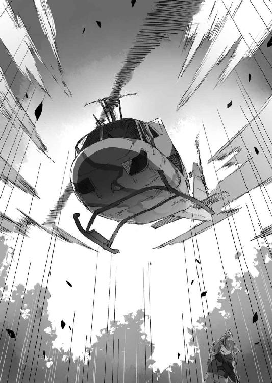
でも敵の敵が味方とは限らない。
もちろん──中国やロシアが、改めて僕達を横からかっさらうために仕掛けてきたのかも。
「～～～～～ッ！」
スミス氏が何事かを叫ぶ。
兵士達は〈ヒューイ〉に対して銃を向けるけれど──
「──あ」
すぽん、という緊迫した状況にそぐわない、どこか間の抜けた音と共に、握り拳くらいの塊が落ちてきて、道路に転がった。近くにいた兵士の一人が叫びながら身を伏せる。
「──grenade!」
これはかろうじて聞き取れた。
グレネード......つまり小型榴弾。
やばい、爆発物だ、的な意味で周囲に注意を促したのだろう。
しかし、次の瞬間──兵士達や僕らが警戒し身構えた爆音と衝撃は発生しなかった。代わりに猛烈な勢いで白煙が小型榴弾から噴き出し、視界を遮っていく。
「～～～～ッ！」
「～～～～!?」
兵士達の怒声が響き──その間に散発的な銃声が交じる。
しかし白濁する視界のために、何が起きているのかを正確に見定めるのは無理だ。
「いったい何がどうなって......って」
「............」
ぎゅっと僕の手を握ってくる感触に振り向くと、ミュセルがすぐ隣で身を寄せている。
彼女もまた何がどうなっているのか分からず、不安なのだ。
僕はその手を握り返し──
「──ひあっ!?」
にゅっと煙の向こうから伸びてきた手が僕の襟首を摑む。
「うわったったった？」
「きゃっ──」
そして手を繫いだまま芋づる式にマイクロバスの車外へと引きずり出される僕とミュセル。すぐ側にはペトラルカ、エルビア、美埜里さんの姿もあった。
「......え？」
そこで僕は気付く。
僕達を引っ張り出した手の主は──米軍の兵士ではなかった。
少なくとも着ている服が違うし、Ｍ４Ａ１を装備していない。
それどころか、いつの間に、どこから現れたのか、在日アメリカ軍と交戦中らしい勢力がいる。散発的に響く銃声。よろめく在日アメリカ軍兵士達。ボディ・アーマーのおかげで、撃たれてもそうそう死んだりはしていないようだけれど......もともと〈疾風の拳〉対策で重装だった彼らは動きがどうしても鈍く、素早く動き回る謎の兵士達に翻弄されている印象だった。
「いったいどこから......!?」
「発煙弾の直後に、国道の脇から現れたみたい」
呆然と呟く僕に、美埜里さんが答えてくれる。
「味方っすか!?」
「敵の敵だからといって味方とは限らん（エス イメネ フオ エス イメネ ヤム トン エブ ア ドネイルフ）」
嬉々とした声を上げたエルビアを、ペトラルカが一蹴する。
突然のことに混乱して、立ち尽くすしかできない僕達。
「こっちだ、走れ！」
命じてきた声は日本語だった。
見れば僕達を引っ張り出した黒装束の男が、手招きしている。目出し帽のようなものを被っているので、顔は分からず、怪しいこと、この上ない。
けれど──
「ぐずぐずするな、早く！」
「............」
僕らは一瞬顔を見合わせてから──頷き合うと、男の方に向かって駆け出す。正直、まだ正体ははっきりしていないけれど、癖のない日本語を流暢に話す以上、米兵達よりは味方っぽい。ここで米兵に拘束されちゃうよりは、マシだろう──単なる思い込みかもしれないけれど。
僕達は男に引っ張られるようにして道路の脇へと走った。
道路脇の壁面──コンクリートで固められた斜面を四つん這いになって二メートルばかり登り、その上にある雑木林のようなところへと転がり込む。なるほど、道路はトレーラーが塞いでいて通れないけれど、徒歩ならむしろ道路の外側から迂回できる。
しかも......
「そっちだ」
男に指示されるままに木々の間を走る。
途中蹴躓いたりして、何度か倒れそうになったけど、お互いに支え合って僕達は進む。
ものすごく長い時間、走っていたような気がするけど......たぶん、実際には一分もかかっていないだろう。僕達は少し開けた場所に出た。
そこに......
「ＬＡＶ!?」
蹲るようにして停車している鋼鉄の塊。
軽装甲機動車──自衛隊の使う装甲車両だ。それが二台、停車している。さらにその向こうには、ＬＡＶとよく似た鼻面の、輸送用車輛が停車していた。
確か〈疾風〉──高機動車だっけ。
人員輸送用の車で、いわば、軍用のマイクロバスだ。もちろん、ＬＡＶ同様、不整地でも走れるオフローダー仕様。
そして三台の車の周囲には、89式突撃銃を抱えた兵士達が立っている。
もう間違いない。在日アメリカ軍を襲った黒装束は自衛隊だ。
「ここからはこれが護衛だ。そのまま富士の樹海まで行け」
男がそう言いながら僕達に〈疾風〉の後部を示した。
現場に残った部隊が上手く足止めをしてくれていたのか......在日アメリカ軍が追いかけてくることはなかった。ＬＡＶと〈疾風〉はしばらく道路の脇の雑木林を走っていたけれど、やがて本来の道路に降りて富士の樹海へと向かうことになった。
「もう追ってはこないだろう」
米軍のことだろう──〈疾風〉の助手席に座っている男が僕達の方を振り返ってそう言ってきた。たぶん、僕達をマイクロバスから引っ張り出したのと同一人物なんだと思うけど、何しろ全員、目許以外は見えないので区別がつかない。
「あ、あの......」
そんな男へ、僕は声を掛ける。
「助けていただいて、ありがとうございました」
「礼は要らん。これも仕事だ」
頭を下げる僕を見て、男はあっさりとそう言う。
「あっ、そういえば礼人さん......内閣情報調査室の護衛の人とかは......？」
「そちらは自力で現場から逃走したのを、上空から確認している」
あっさりと男はそう言った。どうやら途中でやってきた〈ヒューイ〉は、単に狙撃するためでも発煙弾をばらまくためでもなく、この本命とも言うべき歩兵部隊が効率的に現場に入れるよう、偵察の任務を帯びていたらしい。
「......しかし」
男は忌ま忌ましげに言った。
「命令とはいえ、貴様を救助することになるとはな」
「......え？」
なんだか僕のことを個人的に識っているかのような物言いなんですけど。
この人──誰？
男が被っていた目出し帽を外した。
目出し帽の下から現れたのは、どこか強面の中年男性の顔だった。目つきが鋭く、自分の仕事のためなら他を顧みない、みたいな雰囲気がある。
仕事人、って感じの雰囲気に、僕は思わず圧倒されていた。
だけど──やっぱり僕はこの人の顔に見覚えがない。
一瞬、エルダント駐留部隊の佐藤さんか誰かかとも思ったけど、違う。
「............」
僕が悩んでいると──その男は、ふと表情を苦笑の形に緩めた。
「前は、お前を襲いに行ってさんざんな目に遭った」
襲いに、って......まさか。
僕は思わず身を強張らせる。
以前──言うことを聞かない僕を煙たがった日本政府は、自衛隊の暗殺部隊をエルダントにまで差し向けてきたことがある。その後、あくまで『保護が目的だった』とかなんとか的場さんや日本政府は言い訳していたけれど......
「ダンナサマ」
「シンイチ」
ミュセルとペトラルカが今の会話で男の素性に気付いたらしい。何事かペトラルカが素早くエルダント語でエルビアに命じると、エルビアが身構える。
まあシートベルトしたまんまだけど。
そして......
「落ち着け」
男はエルビアの方を見て静かに言った。
「以前の任務は以前の任務、今の任務は貴様ら全員を無事に富士の樹海の超空間通路まで送り届けることだ」
「何故──」
「何故？ 妙なことを聞く」
男は口の端で苦笑を深めて言った。
「命じられたからだ。任務だからだ。俺達は今も昔もこの国の国益のために戦う。それ以上でもそれ以下でもない。私情なんぞ仕事には持ち込まん──違うか？」
やや皮肉の響きを添えた最後の一言は、僕ではなく、美埜里さんの方に向けられていた。
「............」
美埜里さんは黙って肩を竦める。
まあ確かに──自衛官という意味では、この男の方が正しいのだろう。
なんと言うか、良くも悪くも、職業人......そんな印象だ。親しみが湧くわけではもちろんないのだけれど、その揺るぎない、確信に満ちた物言いは、ものすごく凜々しく見える。
というか......
（実は、けっこう際どかったんだな、あのとき）
僕は、この男達に襲われたときのことを思い出す。
神聖エルダント帝国の協力で僕達は、自衛隊の部隊を撃退することができたわけだけど──よくよく考えれば、あれは幾つもの幸運やら偶然が重なった結果だ。そもそも異世界という前例のない環境、魔法や亜人種という未知の要素、小柄な女性兵士が相手、等々、そういったもろもろの要素が彼らの能力を鈍らせていただけで......もう一度、彼らが僕の暗殺任務を命じられて、エルダントにやってきたら、はたして、撃退できるかどうか。実際、精鋭の騎士達が、エルダント駐留部隊の佐藤さん達に、手玉にとられたこともあったし......
たぶん、この人達も美埜里さんと同じ、ゾンビー・ユニット......戸籍上は死んだことになっているのだろう。書類上は自衛官ですらないのかもしれない。だからこそ正面衝突ではないにしても、在日アメリカ軍と戦うことができたのだ。在日アメリカ軍は在日アメリカ軍で強引な非合法作戦をしている手前、これを公に問題視はしにくいだろうし。
ともあれ。
「エルビア、大丈夫だよ」
僕がそう言うと、エルビアは構えを解いた。
「いずれにせよ、もうすぐ富士の樹海に着く。そちらでは施設警備の部隊が待機しているはずだから、合流して超空間昇降機に乗れ」
言って男が視線を前に戻す。
男の肩越しに見覚えのある景色が近付いてくるのが見えた。
もう大丈夫......そう感じて僕は、安堵の溜め息をついた。
行きと違って、帰りは検疫だのなんだのは全部すっ飛ばしということになった。
僕達は即座に超空間昇降機へと案内され、席に座る。ちなみに急いでいるということもあり、服はそのまんまだった。
僕を真ん中にしてミュセルとエルビアが左右に座り、向かいに美埜里さんとペトラルカが座るという配置。
「......もう、大丈夫ですよね？」
ゆっくりと動き出す昇降機の中で、ミュセルは指先を僕の手に触れさせると──囁くような口調でそう尋ねてきた。
「大丈夫だと思う。米軍だってさすがにここまでは追ってこない──というかここが知られているなら、そもそも、今回のような騒ぎにはならなかったはずだし。仮に来たとしても、最悪、ここから外に出て飛び降りれば、エルダントへは戻れる──はず」
確か聞いた話では、途中で重力の方向も変わるらしいから、命綱なしに飛び込んでもそのまま地面に叩き付けられて死亡──なんてことにはならないはず。この辺りには魔力も漏れてきているはずだから、風の魔法で身を守れればなおさら安全だ。
「今度こそもう本当に大丈夫」
「......はい」
僕の返事を聞いて、ミュセルが安心したように息を吐き出した。
「よかったっす」
そう言ってエルビアも身体の力を抜く──というか今の今まで彼女もまた身体のどこかに緊張を残していたらしい。むしろ一気に脱力してでれーんと椅子に寄りかかっている姿から、相当、彼女も疲れていたのだと分かった。
いったいどうなることかと思ったけれど、みんな無事で良かった。
とりあえずはそんな気持ちでいっぱいだ。
ただ......
「──でも」
ゴンドラは、次第に降下速度を上げていく。もうしばらくしたら、重力の方向が変化して今度はエルダントの方から吊り上げられ、引っ張られる形になるはずだ。
「もうしばらくは日本には戻れないかなあ......」
家族に会えたことも、久々の秋葉原を堪能できたことも、嬉しかったけれど。
帰国のたびにアメリカやらロシアやら中国やらに追いかけ回されるとなると、おちおち買い物もできない。万が一にもコミケとかに出掛けていって、そこへ米軍が乱入──なんてことになったら、どうなることか。
「私もしばらくは戻らなくていいかな」
苦笑しながら美埜里さんが言う。
「毎回こんなことになるんじゃ身がもたないし」
「そうなんですよね」
「まあ強引な手が立て続けに失敗したから、他の国はまた外交圧力か何かで、異世界のことを探ろうとしてくるとは思うし、そっちの話は、政府がどう対処するにせよ、私達にはあんまり関係ないし──次帰国したときにはまた、状況は変わっていると思うけれどね」
「さっさと異世界のことも公表しちゃえば良いのに」
「先にかなりの『投資』をしてるんだから、政府もそう簡単に公表はできないでしょ」
異世界の資源なり技術なりその他もろもろなり──で投資分を回収できなければ、迂闊に世界に向けて公表するわけにもいかないということか。
「美埜里さん、早く日本とエルダントの間をもっと簡単に行き来できるようにしてください」
「だからそういうのは私に言われても困るってば」
と美埜里さん。
彼女の横から、ペトラルカが言った。
「妾はまたニッポンに行くぞ！」
「え？ あ──ペトラルカ、懲りてない？」
一歩間違えたら殺されてたかもしれないような状況だったんだけど。
しかし彼女はむしろ瞳をきらきらさせてこう続けた。
「アキバで買い逃したものもあるしな。今回は行けなかったが、イケブクロのオトメロゥドにも行くぞ！」
よほどに秋葉原でのことが楽しかったのか、ペトラルカは両足をバタバタと動かした。
ううむ。オタクの聖地の魔力、恐るべし。
「そもそも次は正式に来てニッポンの王にも挨拶をしておかんとな。同じ君主として」
「王って──」
それってやっぱり天皇陛下になるのかな。それとも政治を統轄するって意味では内閣総理大臣の方？ でも天皇はともかく、日本の首相って不祥事だのなんだのでころころ辞任したり替わる印象があるし、そういうのって──絶対君主であるペトラルカの目から見たら、どう映るんだろうか。
そんなことを考えていると......
「そろそろかな」
美埜里さんが言う。
しばらくして振動が小さくなったかと思うと──超空間昇降機が停まる。
「着いたみたいだね」
「はい」
ミュセルが頷く。
ハーフエルフである彼女は、魔力の密度の影響を受ける。
今回の日本行きでは魔法石を幾つか身につけていたために、活動に支障はなかったけれど、それでもエルダントに──魔力に充ち満ちている世界に戻ってくると、肌でそれを感じるのだろう。
「帰ってきた......！」
僕はなんだかしみじみしてしまった。
別に長い間、日本にいたわけじゃない。むしろ三泊しかしていない。ましてや別にまだいつもの屋敷に着いたわけでもない。それなのになんだかこう、自分の本来の居場所に戻ってきたかのような、安心感がある。
やはり僕はずいぶんとエルダントに馴染んでしまっているらしい。
それが良いことか悪いことかはいまひとつ、判断がつかないけれど。
「──さ」
美埜里さんが皆のシートベルトを外してくれる。
同じく彼女が鉄扉を開き──僕達は昇降機から外に出た。
「おー......」
そこで僕らを待っていたのは、どこまでも広がる蒼い空と、そこに浮かぶ無数の白い雲、そよ風の吹く広々とした草原と、その上を渡っていく半透明の精霊達、そして──
「............へ？」
でもってのどかな風景にはどうにもそぐわない、甲冑とマント姿の物々しい騎士達の姿であった。一人や二人じゃない。たぶん、百人かそこらはいる。エルダントには幾つか騎士団があるはずだけど、その一つが丸ごと全員やってきているような感じだ。
何この物々しさは!?
さらに──その後ろには、前足だけでその騎士達を薙ぎ倒してしまいそうな、異形の巨体が三体ばかり鎮座していた。巨軀に備わる長い首、大きな翼......ドラゴンだ。
だけど僕はそれが本物ではないと知っている。
よく見ればそのドラゴンの表皮には縫い目のようなものが走っているし、『皮』の隙間から見えるのは金属の装甲である。
〈フェイドラ〉。フェイク──ドラゴン。
ドワーフとエルフの技術で操られる人造の竜。もともとは映画製作のための大道具だったのだけれど、凝り性のドワーフ達がいじくり回した結果、可変式魔法ロボ兵器みたいになっちゃった代物である。エルダント帝国の兵器として量産するなんて話があったみたいだけど......どうやら量産試作品を持ち出してきたらしい。
で──その騎士達の真ん中。
そこに三人ばかり見覚えのある人の姿があった。
一人は、不機嫌そうに表情を歪めている美青年──ペトラルカの親戚であり、騎士団長であり、帝国の重臣である、ガリウス・エン・コルドバル卿だ。
もう一人は、長い髭をたくわえたお爺さん──同じく帝国の重臣であるザハール宰相。
そしてペトラルカの側近二人から少し後ろに引いた位置で、身を縮めるようにして立っているのが、小柄なドワーフの女の子だった。ロロン・セリオーズ。最近、ペトラルカの影武者として──正確には影武者人形の操者として取り立てられた。
「陛下、よくぞご無事で！」
僕達の──何よりペトラルカの姿を見て顔を綻ばせるザハール宰相。
「うむ、今戻ったぞ」
臣下の出迎えに、ペトラルカは薄い胸を張って堂々と答える。
......が。
「あっ......」
すぐに、自分がどうやって日本に行ったかを思い出したらしい。
「............」
仏頂面のガリウスと、その脇で申し訳なさそうにしているロロンを見て、ペトラルカは表情を引き攣らせると──ミュセルの後ろに隠れた。
「あ、あの、陛下......？」
「──申し訳ありません」
騎士ガリウスが何か言う前にロロンがまずそう謝ってきた。
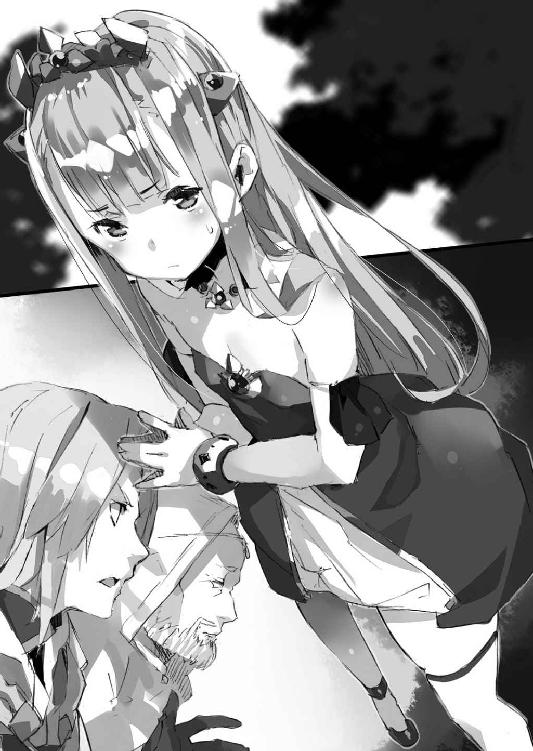
どうやら、日本に行っている間の身代わりに、ロロンに演じさせていた影武者人形は、早々にばれてしまったらしい。いやまあばれない方がおかしいと思うけどさ。いくら仕草や口調を再現することができても、ロロンは、皇帝の仕事なんて何も知らないんだし。
「陛下──」
ガリウスがペトラルカを睨む。
ペトラルカはミュセルの後ろからそんなガリウスを見て──さらに身を縮めてもう一度ミュセルの陰に隠れる。ミュセルはというと、どうすれば良いのか分からずに、ただおろおろしていた。
「あ、あの、これは......？」
とりあえず僕が騎士団や〈フェイドラ〉を見回してガリウスに尋ねる。
まあだいたいの想像はつくけど──
「......ニッポン側で問題があったと報告を受けて待機していたのだ」
あ。やっぱり。
たぶん、自衛隊経由で連絡が行ったのだろう。
「その様子だと大事ないらしい」
「はい、なんとか」
「事の次第は聞いている。シンイチ、よくぞ陛下を無事に連れ帰ってくれた。礼を言う」
「あ、ど、どうも」
と僕は頭を下げる。
てっきり怒られるかとも思っていたのだけれど、どうもペトラルカが独断で密入国したのだということを、ガリウスは理解しているらしい。
「で──陛下」
呼び掛けながらガリウスは大股でこちらにやってくる。
「シ、シンイチ!!」
ミュセルでは盾にならないと思ったのか、ペトラルカは今度は僕の後ろに飛び込んで、服の裾を握ってきた。いやあの。すげえ可愛い仕草なんで萌え萌えするんですけどね、こればっかりは僕にも助けてあげられないと思います、陛下。
「陛下、何を勝手なことをしておられるのですか！」
思った通りガリウスは怒り心頭だった。
それこそペトラルカの襟首を摑んでお尻を叩きそうな勢いだ。一応、ペトラルカの臣下という立場だが、それ以前にガリウスは彼女の従兄──要するに親戚のお兄ちゃんでもあるわけで。こういう場合は、身分差を意識することなく、ペトラルカを叱ることができるらしい。
「わ、妾もニッポンに行きたかったのじゃ！ 仕方なかろう！」
「何が仕方ないですか！」
「ちゃんとロロンにもあとのことは任せたのじゃぞ！」
いや、ちゃんとってことはないでしょ。
──などと僕は思うが、まあ、黙っておく。
いきなり皇帝役を丸投げされてロロンが途方に暮れていたのは想像に難くない。可哀想に。無理だし、いけないことだと分かってはいても、皇帝陛下に直に命じられれば拒むことなんてできなかったろうし。
「ちゃんと皆にも土産を買ってきておる！ 特にガリウス、お主にはアキバで直接購入したこのＢＬ本を......」
「......陛下！」
一瞬、ペトラルカが袋から取り出して見せたＢＬ本の方にガリウスの目が泳いだような気がするけど、まあ気のせいだろう、たぶん。
結局、睨み付けるガリウスの眼光に負けたかのように、ペトラルカは項垂れて、言った。
「......すまんかった」
「御身は帝国の国体そのもの、どうか軽はずみなことはなさらぬよう」
とガリウス。
「私もザハール老も寿命が千日縮まる想いでした」
「う............」
ガリウスの心配も本物なので、ペトラルカとしては、反駁しにくい。
それからしばらく......ペトラルカは、小姑のように長々と説教を続けるガリウスを前に、肩を落としていたのだった。
でもってそれから──エルダントに戻ってから数日が経った。
後日談として、的場さんから、僕達は在日アメリカ軍があっさりと撤収してしまったことと、礼人さん達が無事であることを聞いた。どうやら日米政府の間であの騒動は『なかった』ことになっているらしい。
これからどうなるのかは分からないが、美埜里さんが言っていた通り、より穏当な──しかし回りくどくて陰湿でもある──方法でアメリカを始めとする諸外国は、日本政府が大事に抱えている『機密』の中身を探ってくるだろう、とのことだった。
僕がいない間の〈アミュテック〉を任せていた綾崎光流さんからは、別段変わったことは何もなかったと報告された。
あえて変わったことをというのであれば、ペトラルカが勝手に僕達についていったと気付いたガリウスやザハール宰相がドタバタする羽目になって大変だったらしい、ということくらいだったとか。
ちなみに......
勝手なことをして、こっぴどくガリウスからお叱りを受けた皇帝陛下は、しばらく城から出してもらえなくなったと聞いた。可哀想だけど、まあ、しばらくは日本土産を改めて検分しているだけでも楽しいだろう。特に『ガイシ』の班長、お気に入りだったみたいだし。
エルビアは秋葉原で入手したイラスト本を片手に、絵を描くことに集中している。
美埜里さんもいつも通り、自衛隊の訓練をしつつ僕の護衛をしている。
ミュセルも本来の仕事であるメイドに戻った。
そして僕も〈アミュテック〉総支配人としての仕事に戻った。
まあ要するに、この神聖エルダント帝国での僕らの日常が、戻ってきたということだ。
良くも悪くも今の僕にとっては日本の方が非日常になってしまっているというのは、ちょっと自分でも驚いたけれども。
そして──
「んー......」
僕は屋敷の自室でスマートフォンを弄っていた。
画像フォルダを開くと、日本で大量に撮りためた写真がずらりと並ぶ。
実は......秋葉原に行った際に、書店やＤＶＤ、ゲームショップで新刊・新作コーナーの写真を撮りまくっておいたのだ。さすがにミュセル、ペトラルカ、エルビアを連れて事細かに新作をチェックするのは無理だったので、とりあえず写真だけ撮っておいて、後から『通販』──つまりエルダントへの試験輸入品目の一覧に入れることにしたのである。
指を画面の上に滑らせてスクロール、スクロール。
すると写真がやがて、人物を撮ったものの連続になった。
父さん。母さん。紫月。エルビア。美埜里さん。ペトラルカ。
そして──ミュセル。
秋葉原の街中で笑顔を見せるミュセルの写真を、つい、ぼーっと眺めていると、扉を叩く音がした。
「あ、ど、どうぞ」
何故かどきりとして少し慌てながらもそう答える。
「旦那様、お茶をお持ちしました」
思った通り──入ってきたのは、ミュセルだ。
彼女はいつものメイド服に身を包んで、ワゴンの上にお茶とお菓子を載せて、部屋の中へと入ってくる。これまたいつもの手順でお茶の用意をしてくれる彼女をぼーっと僕はスマートフォン片手に眺めていた。
「あ、あの、シンイチ様......？ 何か......？」
「いやー」
スマートフォンの中の、日本風の私服のミュセルと。
目の前の、馴染みのメイド服のミュセルと。
その双方に視線を往復させながら──
「日本での恰好も似合ってたけどさ、やっぱりいつものミュセルの方がしっくりくるなあって思って」
「そ......そうですか？」
何故だかミュセルは仄かに頰を赤く染める。
恥ずかしげに少し俯くその姿は、やっぱりものすごく可愛い。
「......そういえばミュセル」
なんだか萌え萌えして自分でもいろいろわけが分からなくなりそうだったので......とりあえず僕は多少強引に話題を別の方向に向けることにした。
「は、はい」
「その......日本ではさ、けっこういろいろあったじゃない？」
「はい」
「だから、その......ペトラルカはまた行きたいとか言ってくれてたけどさ......その、ミュセルは......」
ミュセルはまた日本に行きたいと、思ってくれているだろうか。
日本のことを──いや超空間通路の向こうの世界を、嫌いになってはいないだろうか。
実は帰ってきてからずっと、それが気になってた。
いつかは僕も、日本に帰るのだろうから。
「............」
ミュセルは目を瞬かせた。
きょとんとした表情からして──そんな質問をされるとは思ってもみなかったのだろう。
そして彼女はふと笑顔になってこう言った。
「私は......シンイチ様のお側であればどこでも同じです」
「え......」
今度は僕が一瞬、目を瞬かせる番だった。
いやあの。それって──
「......あ、そ、そっか。そうなん、だ？」
「はい！」
そう言って微笑むミュセルの、本当に可愛いその姿は──わざわざ写真に撮らずとも、僕の意識にくっきりと、消しようがないくらいに焼き付いたのだった。
（つづく）
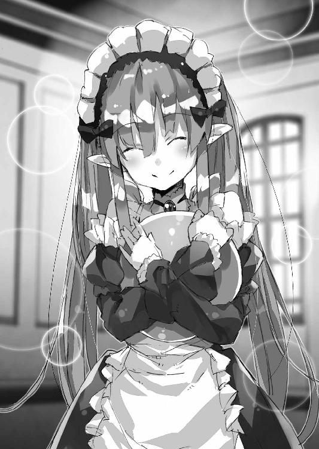
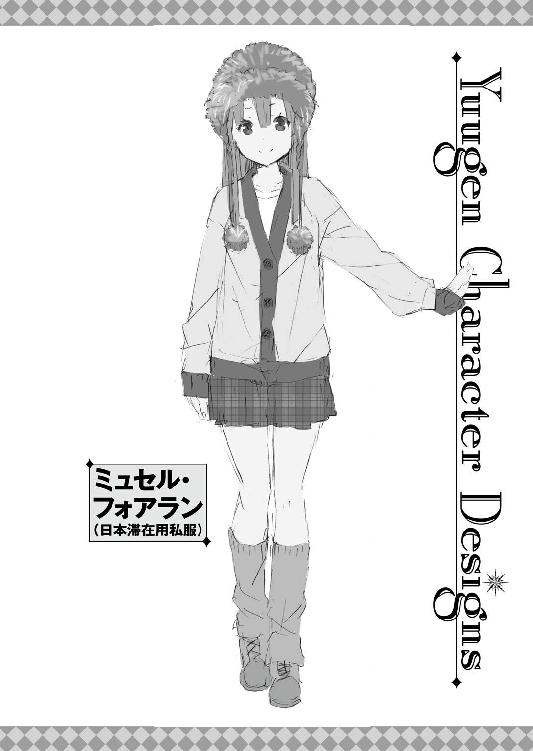
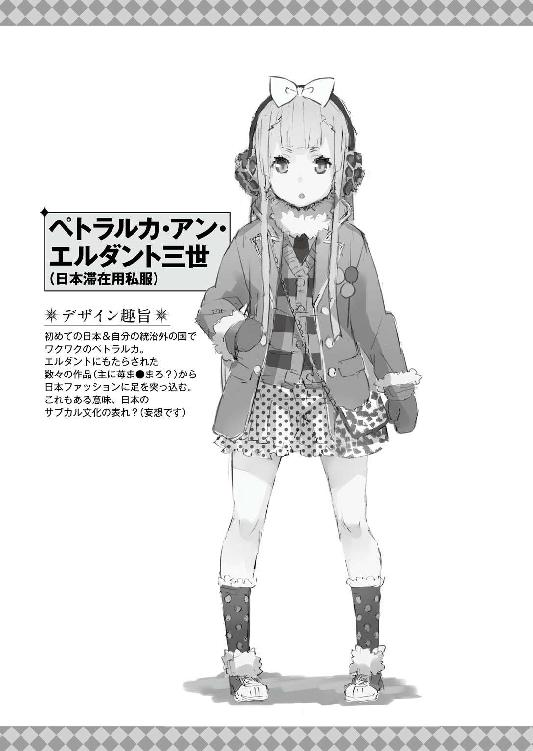
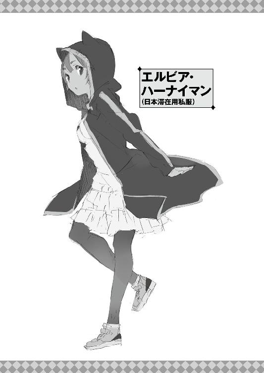
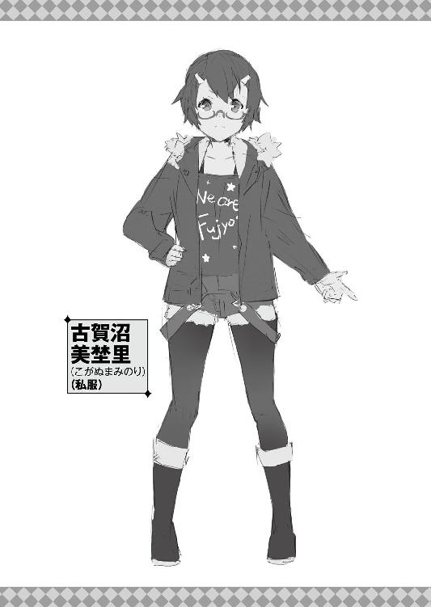
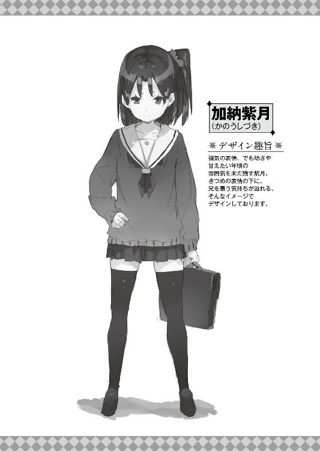
どうも、軽小説屋のです。
『アウトブレイク・カンパニー 萌える侵略者』十巻をお届けいたします。
なんだかんだでこの『アウトブレイク・カンパニー』も二桁突入であります。
九巻のドラマＣＤ付き限定版やアニメ化、コミック化に代表されるメディアミックスは勿論ですが、こうして十巻が書けるのも読者の方々の御支持があっての事、大変有り難い話です。
さて──今回は九巻からの前後編の、後編でありますが。
敢えてこの九、十巻で片付けずに放置してあるネタが二つ三つあります。
未だどれ位続けさせて貰えるかはわからんのですが、後々の、そして最終巻に向けての伏線な訳ですが、とりあえず今は軽く流していただければ幸いです。
で──
以下のあとがきは、微妙にネタバレ含みますので、未読の方は本編読了後に読まれる事をお勧めします。
さてこの帰郷編というか日本編というか、ですが。
慎一の父が割と露骨に私っぽく──一郎っぽく描かれていますが（内容的にもイラスト的にも／笑）、ラノベ作家という設定から、使い安いネタを使っているだけで、別に慎一やその妹の紫月、母親などは、私の家族とは何の関係もありません、念の為（笑）。そもそもうちの嫁さんは美少女ゲームの原画師でもなければ、ハッカー・スキルも持ち合わせておりませんです。
私も『艦これ』してないしね（笑）。
というか、うちの子供は姉と弟なので、それをきっちりなぞると慎一と大学生位の姉という事になりますが......もし慎一に大学生の姉が居たら、どんな風に描いていたのだろうとか想像すると、それはそれで楽しかったり。
まあ下手すると美埜里さんにキャラが被りそうですけどね。
ツンデレ妹の紫月に関しては、意外に、私自身、主人公との絡み方ではあまりやってこなかったタイプなので、書いていて新鮮でした。
気の強い、でも恥ずかしがり屋のヒロインは、それこそペトラルカも含めて何人も書いていますが......彼女等はツンの部分が丸いというか、態度はきつめだけど、基本、主人公に対して罵倒や、攻撃的な発言やら何やらをする事は殆ど無いというか。割と早々に主人公を認めて好意をはっきり示してきます。
だからこそ紫月は、差別化の意味もあり、あまり奇をてらわずにオーソドックスなツンデレ妹にしてみましたが......さて、読者の方々の印象や如何に。個人的にはゆーげん師のデザインが想定以上に幼かったので、かえってオーソドックスさが活きた（背伸びして憎まれ口も叩いてたけど、そんな自分に不安があったとかそんな）と思っていたり。
あと、最後の方でエルビアの言っている『妖精』ネタは、うちのアシスタント・スタッフで、程良く発酵中の人に入れて貰ったものなんですが。
当初は私もさっぱり何言ってんのか分からず（担当さんも分からず）、スタッフにその為だけにわざわざ電話して聞くのもアレだったんで、ネットで調べてみたのですが。
んー......色々な世界が広がってますね。
そうか......妖精ってそんな意味もあったんだ......
十一巻以降については未だ色々と考慮中ですが、さて、どうなりますやら。
エルビア周り（というよりアマテナとクラーラ）の話もそろそろやるべきだとは思うのですが、ロイクとロミルダの話とか、脇キャラに焦点あてた話もやるべきなんだろうかとか、色々悩み中。
いずれにせよ、そろそろもう一回、短編集やるべきかもですね。
何はともあれ、十巻です。
原稿用紙にすれば四千枚近い長丁場です。
最終的に一万枚まで行くのか、五千枚位で終わるのかは未だ分かりませんが、読者の皆様には最後までおつきあいいただければと思います。
２０１４年５月12日
一郎
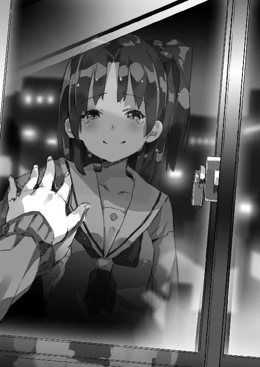
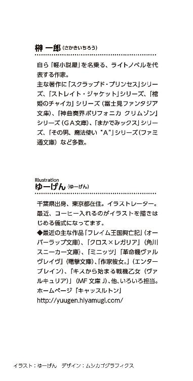
本作品は、二〇一四年五月、小社より講談社ラノベ文庫として刊行されたものを電子書籍化したものです。
◎本電子書籍内の外部リンクに関して
ご利用の端末によっては、リンク機能が制限され正しく動作しない場合があります。また、リンク先のｗｅｂサイト、メールアドレス、電話番号は、事前のご連絡なく削除あるいは変更されることもございます。ご了承ください。
アウトブレイク・カンパニー
萌える侵略者10
二〇一四年七月一日発行
一郎
©Ichiro Sakaki 2014
発行者 清水保雅
発行所 株式会社講談社
東京都文京区音羽二‐一二‐二一
〒112-8001
◎本電子書籍は、購入者個人の閲覧の目的のためにのみ、ファイルの閲覧が許諾されています。私的利用の範囲をこえる行為は著作権法上、禁じられています。
14M0519E
01